| 笑顔で魔力チャージ 3 ～無限の魔力で異世界再生 | |
| 三木なずな | |
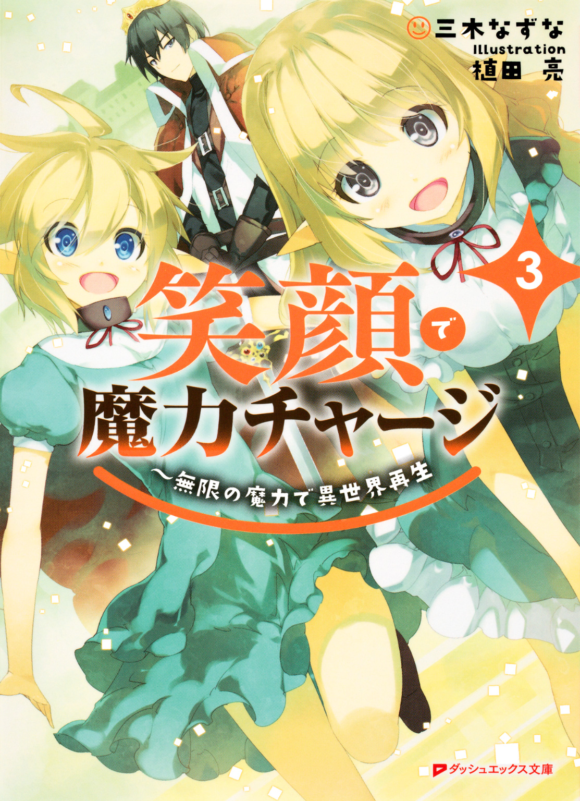
この本は縦書きでレイアウトされています。
また、ご覧になる機種により、表示の差が認められることがあります。
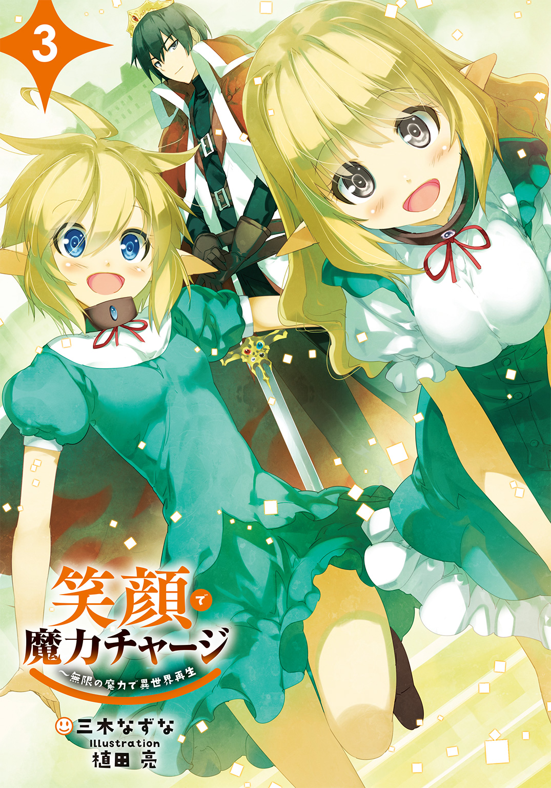
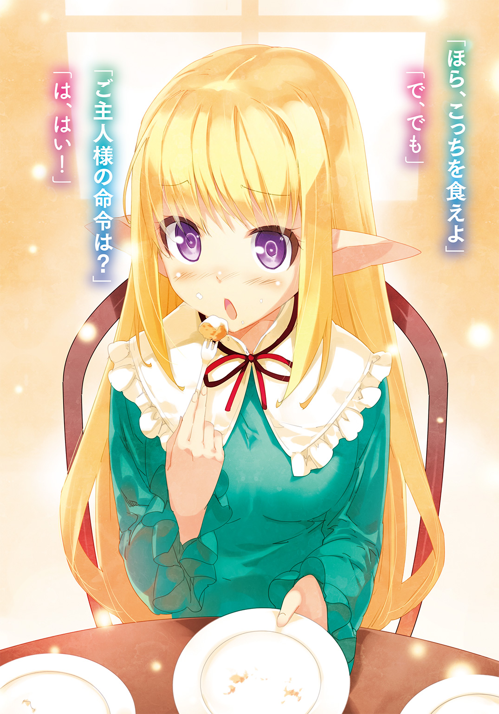
 ダッシュエックス文庫DIGITAL
ダッシュエックス文庫DIGITAL
笑顔で魔力チャージ３
～無限の魔力で異世界再生
三木なずな
CONTENTS
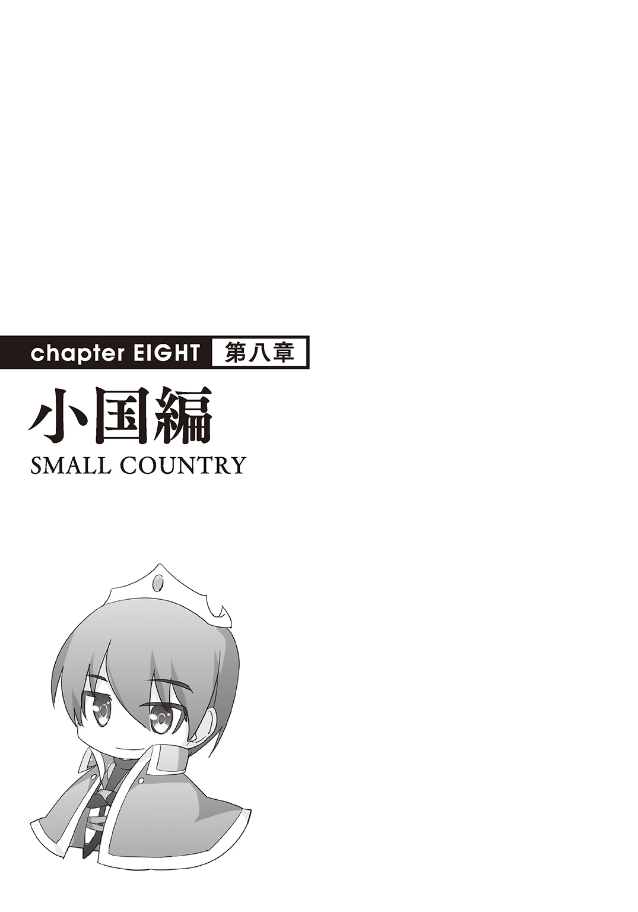
第63話 奴隷王アキト
「ご主人様、今日は何から作りますか」
その日の朝もいつもの台詞から始まった。
館の中、執務室。おれの前にいる四人の奴隷。
その中で一番キャリアが長い――第一奴隷リーシャがいつものように言った。
ご主人様と奴隷の関係は、おれが国王になったからといって何も変わらない。
「ユーリア」
「はい」
おれの秘書的なポジションにいる、第三奴隷ユーリアが静かに答えた。
態度は一番大人びてるけど、見た目は小学生っぽくて一番幼い。
「今日の予定は全部空けてるな？」
「空けた。一日まるまる」
「よし。ミラ」
「うん！」
今度は第二奴隷ミラの方を向いた。
勢いよい返事そのままに、快活な彼女は四人の中で一番の体力自慢である。
だからそういう系の仕事を任せることが多い。
「頼んどいた素材は？」
「全部集めといた。言われた通りお触れを出して、集めてきた人にお金を払って買った。足りない分はお札を出して税金の免除で手を打ってもらった」
「へえ、よく考えついたなそのアイデア」
今までのことでてっきり脳筋系だと思ってたのに、意外と頭が回るんだな。
「ミラお姉様？ 噓はいけませんの、そのアイデアはリリヤが思いついたものですの。ひとりじめはいけませんの」
突っ込んできたのは第四奴隷リリヤ。
奴隷になってから日が浅いが、「超ご主人様」とか言って一番おれを崇拝してる節がある。
「ミラ......」
「ごめんなさい」
ミラはしょんぼり肩を落として、素直に謝った。
リーシャ、ミラ、ユーリア、リリヤ。
この四人は全員同じ「エターナルスレイブ」という種族の者で、おれの大事な大事な奴隷だ。
「さて、それじゃあ今日やることなんだけど」
おれは机の上に紙を広げた。
何日かかけて書いた図面だ。
「今日はこれを作る」
「これって......宮殿ですか。でもものすごく小さい」
リーシャが聞く。
「ああ、宮殿だ。サイズは今の家とそんなに変わらない」
「つまりミニチュアの宮殿ってことなの？」
「どうしてそんなものを作りますの？」
「言われたから」
三人の疑問を、ユーリアがまとめて答えた。
「町長たちに言われた。王になるからにはシンボルとして、宮殿はないとダメだって。でもご主人様はでっかい宮殿はいやだって。だからわたしが宮殿に見える家を設計した」
「いやなんですか？」
リーシャが驚く。
「いやってほどじゃないが、意味がないからな。そんなにでっかい宮殿建てても魔力の無駄使いだろ。要は他とは違う、王様らしいシンボルになればいいんだから」
「そうでしたか」
「それにでっかくしすぎるとおまえたちが大変だろ？」
「ご主人様......」
リーシャの目がうるうるとなった。
――魔力が５０００チャージされました。
頭の中に声が聞こえた。
おれは手のひらサイズのカードを出して、メニューオープンを唱える。
カードの名前はＤＯＲＥＣＡ、等級はプラチナカード。
おれがこの世界に転移してきたときに女神からもらったチート能力で、奴隷が笑顔になったり喜んだりするとこのカードに魔力がチャージされて、その魔力でいろいろ作れたりする。
四人の笑顔で、おれはゼロから町を作り、今は八千人近い小国の国王になった。
☆
外に出て、腕まくりして、タオルを頭に巻く。
ＤＯＲＥＣＡの「解体」能力で、しばらく住んでた領主の館を解体した。
更地に戻ったそこに宮殿の建築をはじめる。
「ミラ、そこの塀がゆがんでる、ちゃんとまっすぐにして」
「大丈夫大丈夫、作った後に位置を微調整するから」
「でもそこにあると、こっちの噴水とぶつかる」
「お姉様方、柱を作ってきましたけど、これはどこに置いたらいいんですの？」
奴隷たちがせわしなく動き回る、おれはそれ以上に忙しかった。
通常、ＤＯＲＥＣＡで「木の家」「石の家」とかの魔法陣を一つ張って、そこに素材を入れるだけで家になる。
しかし「宮殿」というのはＤＯＲＥＣＡのメニューリストには見当たらない。将来的にありそうな気はするけど（女神に王を目指したらいいって言われたから）、今のところはない。
だから作れるアイテムをパーツ単位で作って、それを組み合わせて宮殿にしてる。
一言で例えるのならレ○ブロックで作ってるような感じだ。
前にも同じものを作った。
かまどと家を組み合わせて炊事場を作ったり、家とわき水と動力源を組み合わせて銭湯を作ったり。
もっと大きいものだとたくさんの木と草を並べて森を作ったり。
それと同じ感覚で、宮殿を作っていた。
「誰か手が空いてないか」
リリヤが手を上げてやってきた。
「はいですの、何をすればいいのですの？」
「下の台を作ってきた。上の建物をいったん上げてくれ」
「はいですの」
仮でできた建物をひょいと持ち上げて、おれは作ってきたほぼ同じ面積の土台をその下に置いた。
ＤＯＲＥＣＡの能力。魔力で作ったものは、おれや奴隷なら重力とかの物理法則を無視して持ち上げられる。
リリヤは建物を上に積んで、一階から二階の高さになった玄関に続く階段を取り付ける。
「これで少しは宮殿らしくなったかな」
「はいですの、ご主人様にふさわしく威厳たっぷりですの」
リリヤと宮殿を見上げていた。
奴隷たちとものを作るのは楽しかった。
日曜大工的な気分で、休日的な感覚だ。
できればいつまでもこうしてたい。
「王様！ 助けてください王様！」
どうやらそうはいかないみたいだった。
☆
マントを着けて、国王らしい格好で王都・リベックの外れにやってきた。
そこで防衛用兵器である投石機が岩を放り続けていた。
集中攻撃を喰らってるのは――ドラゴン。
硬い鱗を持ち、巨大な体だが、なんの変哲もないただのドラゴンだ。
だから――強い。
バスケットボールより一回り大きな岩を放り続けるニートカ二十基。その集中攻撃を浴びながらも、ドラゴンは町に向かってじりじりと近寄ってくる。
「なるほど、あれは無理だ」
助けを呼ばれて、やってきたおれは一目で理解した。
ユーリアに前もって予定を空けてもらったけど、これは仕方ない、緊急事態だ。
「すみません王様、でもどうしようもなくて」
防衛部隊の隊長が申し訳なさそうに言う。
「いやいい。よく呼んでくれた。おれが引き受けるけど、念のために攻撃は続けててくれ」
「はい！」
防衛隊長はそう言って、指揮に戻っていった。
おれは振り向き、ついてきた四人の奴隷に告げた。
「それじゃあ行くか」
「「「「はい」」」」
四人が声を揃えた。
腰の剣を抜く。
根元に四つの宝石がついた、ワンオフの剣。
真・エターナルスレイブ。
その宝石に触ると、奴隷たちが剣の中に吸い込まれた。
四つの宝石が光りだした。
刀身が炎と氷の半々になって、全体が白と黒の光を放っていた。
それを持ってリベックを飛び出して、ドラゴンに向かって疾走していく。
天を仰いで咆哮するドラゴン、大地が震えて、ニートカが放った岩がはじかれ砕かれる。
「ついでだ」
ダッシュの後、思いっきりジャンプする。
「お前の血、丸ごともらうぞ」
ズパッ！ 横一文字に剣を薙いだ後、ドラゴンの首がすっ飛んだ。
着地すると、リベックから歓声が聞こえてきた。
「アキト王万歳！」
「バンザーイ！」
おれをたたえる声が上がる。
☆
ドラゴンを退治して王都を守り通した後、おれは奴隷たちと共に建築現場に戻ってきた。
奴隷たちを剣から人間に戻し、マントをはずすと、腕まくりしてタオルを巻く。
さあ残りの建築をやってしまおう、そう思った時。
「王様！」
また呼ばれた、しかもさっきと同じ助けを呼ぶときの声だ。
若い男が走ってくる。
「どうした」
「その、食糧の在庫が尽きてしまったんですけど、今すぐ五〇〇人分補充ってできませんか」
「プシニー五〇〇人分か......おれが行った方が早いな」
すみません。
「気にするな」
奴隷たちを待たせて、男と一緒に食糧庫に向かう。
そこでプシニーを百個単位でまとめて作ってきた。
終わった後、建築現場に戻ろうとするが――別の用事が持ちこまれた。
仕方ないのでそこまで行って解決する。
ユーリアにスケジュールを空けてもらったけど、結局は突発のイベントで、東へ西へと奔走してる。
全てが落ち着いたころには、すっかり日が落ちきっていた。
逆に宮殿の建設が終わってなくて、この日は野宿することになった。
作りかけの宮殿の庭で焚き火をおこして、戦略物資であるプシニーを四人の奴隷と一緒にかじって、早めの眠りにつく。
これがおれの一日。
国王になってからの初日も、今までと変わらない一日だった。
こんなおれのこと、国民は二重の意味をこめて「奴隷王」と呼ぶ。
それを知った時は――嬉しいような悲しいような、微妙な気持ちになった。
ちなみにそれを聞いた奴隷たちは全員が魔力チャージするほど大喜びした。
第64話 最強の盾
翌日の昼前くらいに宮殿が完成した。
奴隷たちと丸一日以上かけて作りあげた建物は小振りながらも、見た目はかなり宮殿っぽく仕上がってる。
いわば宮殿風屋敷だ。
最初は「宮殿なんていらないだろ」って思ってたけど、できあがったものを見ると、作って良かったなと思った。
おれは振り向き、そばにいる四人の奴隷にねぎらいの言葉をかけた。
「四人ともご苦労だった。特にユーリア」
宮殿の設計をしたユーリアを特にねぎらった。
「恐縮です」
「もう少し大きくても良かったと思うのだけれど」
「このサイズがおにーちゃんの希望ですの、リリヤたちは黙ってそれにしたがうですの」
「それはそうだけれど、ご主人様の威光を示すためにも、もっとこう」
「威光は建物じゃない。ご主人様そのもの」
ユーリアがいつものテンションで言う。
リーシャがはっとした。
「そう、ですよね」
「リリヤもそう思うですの。威光はおにーちゃんにさえあればいいんですの」
それはリリヤの希望だから、ちょっと違う話だな。
まあともかく、持ち上げてくれてることはわかった。
「ねえご主人様、中に入ってみようよ」
ミラがおれに言う。さっきからずっと中に入りたくてうずうずしてる顔だ。
「そうだな、中に入ってみるか」
おれが言って、四人が一斉に頷く。
しかし誰も歩きだそうとしない、おれを見つめているだけ。
おれが最初に入れ、ということか。
宮殿に向かっていく。階段を上って、二階の高さにある扉を開く。
正門を潜って中に入った、その時。
懐に入れてあったＤＯＲＥＣＡがいきなり光りだした。
これは――ランクアップか？
「どうなさいましたかご主人様――あ」
「なになにどうしたの――あれ？」
「......奴隷カードが光ってる」
「リリヤのも光ってますの」
外にいるときは何事もなかったけど、宮殿の中に入った途端、おれのＤＯＲＥＣＡも奴隷たちの奴隷カードも光りだした。
最初はピコピコと長い間隔で光が明滅して、全員が揃った後は徐々に間隔が短くなった。
数秒間隔だったのが、最終的にチカチカしてる。まるで何かのカウントダウンをしてるようだ。
やがて、五枚のカードが同時にパッとフラッシュのように光って、それから落ち着いた。
「ど、どうしたんでしょうか」
「多分......」
メニューを開いて、作れるもののリストを確認する。
「......やっぱり、新しく作れるものが増えた」
前例はあまりないけど、何となくこういうことじゃないかって思った。
「何を作れるようになったんですの？」
「結界」
「結界？」
小首を傾げるユーリア、他の三人もちんぷんかんぷんな顔をしてる。
メニューの中に表示されてるのは「絶対結界」の四文字だった。
それだけじゃわからないから、動画機能で確認した。
驚いたことに、動画はこの宮殿を映しだした。
光が宮殿を包み、その後さまざまな魔法や矢や砲弾が飛んできて直撃するが、宮殿そのものは傷一つつかなかった。
動画を見て、壁や天井、宮殿の内装を見回した。
この宮殿に張るための結界のようだ。
☆
「これでできたはず」
１００万の魔力を払って、宮殿に結界を張った。
感覚は「解体」と同じ既存にあるものにセットする感じで、作業が終わった後メニューから消えた。
こういうのは初めてだけど、一回しか使えないものなのか？
それはそうと。
「いろいろ試してみるか。リーシャ」
「はい！ みんな、手伝って」
リーシャが声がけをして、奴隷が全員で動きだした。
一斉にどこかに駆けていき、しばらくして全員がそれぞれニートカを担いで戻ってきた。
リベックの外れに配備した、防衛用のニートカだ。
それが四基、四人はそれを設置して、おれを見た。
四人に頷く、ニートカが一斉に発射された。
三発が宮殿に命中して、一発が外れた。
宮殿は全くの無傷だった、ニートカが打ち出した岩を同時に三発喰らっても傷一つつかなかった。動画の通りです。
一発外れたのは近くにある倉庫に落ちて、それを粉々にした。
「やっちゃった......」
「直してこいユーリア」
ユーリアが頷き、倉庫に駆けていく。
おれは残った三人に言った。
「矢をぶち込んでみろ、火矢とか使ってみてもいい」
奴隷たちは命令通り、弓を取ってきて、矢を次々と放った。
矢は突き刺さらず、火矢は建物の上に落ちたが、焦げ目一つつかず、火も消えてしまった。
動画の通り、砲弾も矢も効かないようだ。
どこまで攻撃を防げるのか、おれはますます興味をもった。
ユーリアが戻ってくるのを待って、真・エターナルスレイブを抜いた。
四人を剣に取り込んで、魔力をざっと10万込めて、ほぼ全力の一撃を宮殿に叩き込んだ。
結果。
「これでも無傷か」
衝撃波が辺りに砂煙を巻き起こしたが、建物自体は全くの無傷だった。
真・エターナルスレイブに、魔力を10万ほど込めた一撃。
ドラゴンですら一撃で倒せるほどの攻撃だったはずだ。
それが、まったく通用しない。
「かなり強固な結界だな」
（ご主人様の攻撃でも壊れないなんて）
「絶対結界って書いてあったしな」
（最強の矛と最強の盾っぽいね！）
「盾の方が強そうだ」
（ここなら、いろいろ安心）
「確かに」
（でもでも、これって建て替えとかどうするんですの？）
リリヤの疑問にはっとする。
壊せないということは、建て替えもできなくなるということだ。
「そうだ、解体はどうなるんだ」
ＤＯＲＥＣＡを出して、メニューから「解体」を選んで、宮殿にかけようとする。
「かからないな。解体もだめか」
いろんな場所、いろんな角度から「解体」をかけてみた。
何回も何回も失敗したが、宮殿の中に入った途端すんなりかけることができた。
「中からじゃないと解体はかけられないのか、なるほど」
整理しよう。
結界はたぶん普通の攻撃じゃどうやってもびくともしなくて、ＤＯＲＥＣＡを使って解体しようとしても中に入らないとかけられないって仕組みだ。
つまり、ＤＯＲＥＣＡ、もしくは奴隷カードを持った者が中まで入ってこないと壊すことはできないということ。
すごい結界だな。
「アキト！」
結界についてあれこれ考えてると、外からおれを呼ぶ声が聞こえた。
開けたままの扉から外を見る。そこにマイヤの姿があった。
マイヤはそのままやってきて、宮殿に入ろうとする――が。
「あれ？ なんだいこれは」
マイヤは入ってこれなかった。
ドアのところで見えない壁があるかのように、何もないところを押したり軽く肩でぶつかってみたりしている。
「アキト？」
マイヤは困った顔をした、おれもちょっと困った。
なんなんだこれは。
そう思った次の瞬間。
――訪問客を許可しますか。
という、魔力がチャージした時と同じ声が聞こえた。
まさかこれは。
「許可する」
「おっとと」
言った瞬間、透明の壁が消えた。それを押してたマイヤが前につんのめった。
その勢いのまま、宮殿の中に入ってきた。
おれは更に頭の中で結界の効果を整理した。
つまり、この結界はおれが許可した人間しか通れないってことだ。
あらゆる攻撃が通用しない。
内側からでしか破壊できない。
許可のない人間は中には入れない。
すごいどころじゃなかった。
本拠地にふさわしい、完璧で最強の結界だった。
第65話 鼻血の設計士
「あああ、美しい......」
公園の中に変質者がいた。
前に奴隷と一緒に作った公園、中で女が妖しい目をしていた。
木を見つめてうっとりしたり、ベンチにほおずりしたり。
傍目からはまるっきり危ない人にしか見えない。その証拠に、おそらくは公園で遊んでた子供たちが隅っこで怯えていた。
その変質者は一通りうっとりした後、砂場の前で首を傾げた。
「なんだろう、これ？ こんなの王様が作れるものの中になかったはずよ」
うん？ 今おれのことを言ったか？
王様って......おれのことだよな。
「王様が作れるものがまた増えたのかな、チェックしなきゃ」
そう言って砂場をじっと見つめたり、べたべた触ったり、挙げ句の果てには砂を一つまみしてべろっとなめたりした。
......うん、関わらない方がいいな。
おれはそう思って、この場から立ち去ろうとする。
振り向いた瞬間、リーシャがやってきた。
「探しましたご主人様」
「ご主人様!?」
背後にいる女が食いついた。
おそるおそる振り向く。その女......よく見ればまだまだ少女な彼女はおれを見つめて、ものすごく驚いてる。
そして......ぷしゃー。
いきなり鼻血を吹き出して、そのまま気絶したのだった。
☆
気絶した少女をベンチにひとまず寝かせて、おれはその横でリーシャの報告を受けた。
「マルタさんがお見えになりました。ご主人様に会いたいとおっしゃってます」
「そうか」
頷いて、ＤＯＲＥＣＡを取り出す。
「マルタの入城を許可」
ＤＯＲＥＣＡが光る。
絶対結界の宮殿。おれの許可がないと誰も入れないから、マルタに許可を出した。
「先に入れて少し待ってもらえ。それとあいつは甘いものが好きだからなにか出してやれ」
「わかりました」
一礼して、リーシャが立ち去る。
「うーん」
それと入れ替わりに少女が目を覚ました。
「起きたか」
「はい......えっ」
少女はおれを見て、慌てだした。
「お、おおおおおお」
「お？」
「王様だ！」
ベンチからパッと飛び上がって、ロボットのようなカクカクした動きで三歩下がって、そのままお辞儀した。
「初めまして王様！ ボクの名前はニーナっていいます！」
「おう」
大げさだな。
「......本物の王様だ」
顔を上げたニーナ。目がものすごくキラキラしてる。
「どうしよう、まさか王様に会えるなんて。心の準備まったくできてないのにどうしよう」
なんの心の準備なんだか。
それはスルーして、体調のことを聞く。
「体はもう大丈夫か？」
「はい！」
「そうか、ならいい。一応万能薬を流し込んだから、大丈夫だとは思うけど」
「万能薬！」
ニーナはかなりビックリした。体がのけぞるほどのオーバーリアクションだ。
「あの王様の秘密兵器がボクの中に。ボクの中に王様が......」
ぶるぶると震えて――また鼻血を吹いたが今度は倒れなかった。代わりに鼻血を吹いたまま感動するという、ちょっとしたホラーな光景になった。
「......大丈夫か？」
「はい！ 王様のことを考えるといつもこうなりますので慣れました、へっちゃらです！」
「お、おう」
それはへっちゃらなのか？ いや突っ込まんとこ。
もう、どこから突っ込めばいいのかわからん。
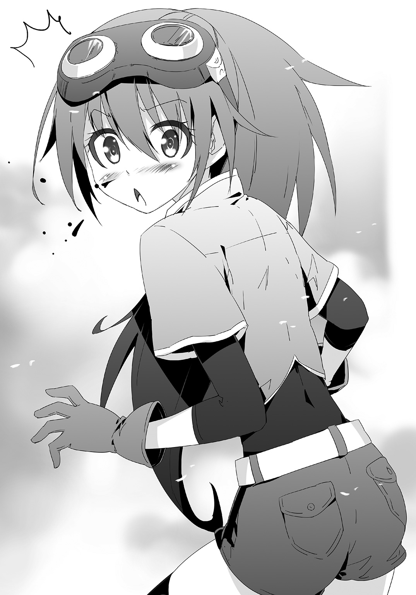
悪い子じゃなさそうが、関わるのはどうだろ、って感じだ。
「そうだ！ 王様、これを見てください！」
ニーナはそう言って、四つ折りの紙を取り出した。
パッと頭を下げて、両手でおれに差し出す。
......ラブレターか？
「これは？」
「ボクが考えた家です。必要アイテムは木の家一つ、柱四本、階段一つです」
「家？」
紙を受け取って、開く。
ラブレターじゃなかった。ニーナが言う「家」の設計図だ。
一言で言うと、それは四本足のついた家だ。
四隅に柱が立ってて、その上に家が乗っかってる。上がるための階段もついてる。
高床式倉庫みたいな感じだ。
「なるほど、こんなふうに組み合わせるとこうなるのか」
木の家も、柱も、階段も。
全部今まで作ったことのあるものだけど、この組み合わせは思いつかなかった。
「ニーナが考えたのか」
「はい！」
「いい感じだ。これをもらってもいいか？ なんかで使えそうだ」
「もちろんです！ ああ......王様に気に入ってもらえた......」
またうっとりして、ちょっと鼻血を吹いた。
それにちょっと慣れてきた。
「にしてもこれ......結構いいかもしれないな。馬とか？ そういうのを使う連中が喜ぶかも」
何しろ一階の部分が丸々空いてる、駐車場みたいな感じになってる。
「そうなんです。実はボクの近所に住んでる人が最近荷台を止める場所がなくて困ってるって言ってたんです。リベックも人が増えてきたから、町の中心部の、前からいる人たちは使える土地が少なくて」
「ああ......」
ユーリアから似たような報告を受けてたっけ。
「それでなんとかならないかって考えたのがこれです」
「そうか。よし、今度実際に作って試してみる」
「ありがとうございます！」
更に鼻血を吹いた。
吹き終わった後、ニーナは懐から紙を出して鼻血を拭いた。
「その紙で拭いてよかったのか？」
指摘する。ちらっとだけど、紙に何か書かれてるのが見えた。
「あっ、ほんとだ」
「それも見せてみろ」
「はい！」
今度のも設計図で、二階建ての、バルコニーつきの家だ。
「これもお前が考えたのか？」
「はい。必要なのは木の家二つと、それから解体の能力です。下の家の上にもう一つ家を乗せて、上の家を半分に切って、その分を屋外のスペースに使うんです」
「まさにバルコニーだな。なるほど部分解体か」
設計図を見つめ、考える。
部分解体という発想もなかったが、確かにできる。
どこの誰かがそれで脱獄したしな。
それはともかく、この設計図はいい。
バルコニー付きというのは今までとは別次元の話だ。
ただ住むだけのものじゃない、気持ち良く住めるものの設計だ。
「......」
二枚の設計図とニーナを見た。
「他にあるか？ こういう設計図が」
「はい！」
ニーナは鼻血を吹きながら頷く。
ホラーだが、この上なく素晴らしい笑顔だった。
☆
ニーナと一緒に彼女の家にやってきた。
ドアを開けて中に入る。
部屋の中はビックリするくらいシンプルだった。
机と椅子、ペンと紙、そして山ほどのプシニー。
それだけだ。もはや家と言うより仕事場......アトリエみたいなものだ。
「あああ......王様に来てもらえるなんて。王様に......」
「感動してるところ悪いけど、設計図を見せてもらえるか」
「はい！ まずこれを見てください」
設計図をもらって、それを見た。
木の家一個、柵多数、要解体って書いてあるそれは、家の片方の壁をぶちこわして、そこに柵をぐるっと取り囲む造りだ。
「これは？」
「食堂のおじさんから聞いた話で書きました。そこにテーブルと椅子を置けば空を見ながら食事ができます」
「ああ、飲食店のテラス席か。他には？」
「こういうのはどうですか！」
ニーナはスタンバっていた。
山ほどの設計図を抱えて、次々とおれに見せる。
どれもこれも発想がユニークだ。
十枚くらい見たところで、おれはあることに気づく。
「どれも、今から作ろうと思えば作れるな。必要なものの数ちゃんと書いてるし」
「はい」
「これとか一回しか作ってないのによくわかったな」
「王様が作ったものは全部見てまわりましたから。王様が作れるものは全部わかってます！」
「ふむ」
もはやおれ以上に把握してそうだな。
おれはニーナをじっと見つめた。
「頼みたいことがある」
「なんでもおっしゃってください！」
また鼻血を吹いた。
「後でミラをここに来させる。ミラは知ってるか？」
「はい、第二奴隷様のことですね！」
「そうだ」
「わかりました！ ......えっと、第二奴隷様に何をすればいいんですか？」
「おれが現段階で作れるけど、まだ作ったことがないものもある」
「そんなものが......知りたい......」
ニーナは物欲しげな顔をした。
「教えてやる」
「本当ですか！」
「ミラがそれを知ってる。それを見て、組み合わせで新しいものを作れるのか考えてみてくれ」
「王様の作ってないもの......未開発のもの......王様の秘密......」
ニーナがぶつぶつ言いだした。
「王様の秘密をボクが――」
今までで最大級の鼻血を吹いて、ニーナは後ろ向きにバタンと倒れて気絶した。
とりあえず手持ちの万能薬を流し込んで、応急処置。
楽しみだ。
リーシャも似たようなことをして、戦艦っぽいヤツの設計図を書いてたけど、ニーナのはそれ以上に発想が面白い。
おれが作れるものを彼女がどう組み合わせるのか、おれはものすごく興味を持った。
第66話 新たな境地
夜、ニーナのもとから帰ってきたミラは血まみれだった。
「ご主人様ぁ」
「......ご苦労」
そこだけ見ればまるっきり惨劇の現場だが、何があったのかは何となく想像できる。
ニーナは興奮するとクジラの潮吹き並みに鼻血を吹く。
ミラの惨状はどう考えてもそのせいだ。
「ご主人様ぁ、あの子なんなんですか？ 怖いですよ！ あたしが行ったらいきなり首輪とドレスにほおずりして、そのまま鼻血を吹いたんですよ」
「おれの時もさんざん吹いてた」
「だったら先に言ってくださいよ。それに鼻血以外も怖かったですよ。あたしのことをじっと見つめて『王様の奴隷様、第二奴隷様......』とかぶつぶつ言って。あれは怖かったです......」
「わるかったな。でも必要だったんだ」
「それはわかりますけど......」
不承不承な様子で唇を尖らせるミラ。
その様子だとおれがニーナのところに行かせた理由をわかって、その上でなにか収穫があったんだろう。
行かせて良かった。
「話は後で聞く。とりあえずその格好をなんとかしよう」
おれはミラを風呂に連れていった。
宮殿を建てたときに作っといた、おれと奴隷専用の風呂だ。
民衆はまだ銭湯を使ってる。専用の風呂を持ってるのはおれだけだ。
そこにミラを連れ込んで、血まみれのドレスを脱がした。
まずは頭から流してやった。
お湯をかぶって、溶けていく赤い血。ちょっとしたホラーだ。
「あのご主人様、自分でやるから」
「いいからいいから」
「でも......ご主人様にそんなことをしてもらうなんて」
「ご主人様からのご褒美だ。ホラーな現場をよくガマンしてくれたな」
そう言ってやると、ミラは抵抗することをやめて、そっとうつむいた。
――魔力が１００００チャージされました。
しおらしくなった裸のミラを洗った。
綺麗な髪と尖った耳、それに白い肌。
彼女にべっとりついた血を洗い流していく。
実はこんなことをする必要なんてない。
血まみれになったミラだが、実はそういう類の汚れはエターナルスレイブに取り込んで、解放するの手順を踏むと綺麗になることが確認されてる。
剣の中から出たときに奴隷たちはそうなるのだ。
だから洗ってやる必要はない。
ないが、おれはあえてそうした。
せっかくの機会、奴隷を愛でることができる機会だ！
これを活かさない手はない。
だからミラを言いくるめて、彼女を洗った。
髪から耳、肩に腕。
さっきから洗うパーツを変えるごとに数千単位で魔力がチャージされてる。
やりがいがある。
どう洗えばもっと喜ぶのか、おれはそれを考えながら洗い続けた。
「今日は本当に困ったですよ。まさか奴隷様って言われるなんて」
「いやなのか？」
「当たり前だよ！」
ミラはぱっと起き上がって、体ごとおれに向く。
「様はご主人様だけ！ 奴隷が様なんてありえないの」
「お、おう」
「それなのに奴隷様なんて」
ミラはぶつぶつ言う。エターナルスレイブらしい愚痴だ。
「わかったから、とりあえず前隠せ？」
「え？ なんで？」
「なんでって。恥ずかしいだろ、裸は」
そう言うが、ミラは至って普通な顔をする。
「ご主人様だから恥ずかしくないよ？」
当たり前のように答えた。
そういうもんか？ ......そうかもしれないな。
「わかった。しかしそれじゃおれが洗いにくい」
「あっ、ごめんなさい」
ミラは慌ててさっきの体勢に戻った。
その体勢のままじっとして、おれが洗いやすいように頑張った。
エターナルスレイブ、相変わらず可愛がり甲斐のある種族だ。
☆
風呂から出た後、おれの私室にミラを連れ込んで、改めて聞く。
「で、詳しく報告してくれ」
「うん。えっと、まずご主人様の命令通り、今まで作ってなかったものを教えたの」
「そうか」
「で、いろいろ見せてると、魔法陣の中に違う素材を入れたらどうなるのかって聞かれたんだ」
「へえ」
おれはちょっと感心した、いきなりそこにたどりついたのか。
そしてあることを思い出す。
「そういえば......あの時のもお前だったな。アクセルシューターができたときも」
あれはミラがおれの奴隷になった直後くらいの話だ。
リーシャとミラの二人に武器の弓を作ろうとしたとき、ミラがずっこけて、魔法陣の中に要求されたのとは違う素材を入れてしまった。
それで新たな弓を生み出した。
その失敗から、巡り巡って生み出されたのが彼女たちが着てる草色のドレスだ。
ベースの魔法陣をカスタムしたら違うものができる。
それがあったけど、あれ以来忙しくて、なかなか試す機会がない。
「うん。それを答えたけど......」
いいよね？ っていう目をする。
頭を撫でてやる。笑顔になって、魔力がチャージされた。
「それでね、いろいろ実験させられたんだ。元の魔法陣にあれこれ混ぜて」
「へえ、でもあれ大抵失敗するだろ」
「うん、失敗した。......いろいろ失敗した」
ミラがガクブルしだした。
「どうした？」
「うわーん。怖かったよご主人様」
ミラはいきなり泣きだして、おれに抱きついた。
「どうしたどうした」
「怖かったの！ あの子やっぱり怖いよ。失敗するたんびに『また失敗よ、失敗したわうふふふふふ』って笑うの」
「キレてるのか？」
「違うよ！」
上目遣いのミラ、涙目だ。
「うっとりしてたの！ 失敗を普通に嬉しそうにうっとりしてたよ」
「まじか」
それはちょっと想像がつかなかった。
失敗でぶち切れて、一周回って笑いが出るのはわかるけど、失敗そのものを喜ぶってのはどうなんだ？
「それに話も通じないの！ なんで喜んでんのって聞いたら、『なんで喜ばないの？ だって失敗だよ？』って聞き返されたんだよ」
なんじゃそりゃ。
「それは......怖かったな」
更に気持ちを込めてミラの頭を撫でてやった。
というか、ミラは今日相当怖い目にあったんじゃなかろうか。
「よくガマンしたな。偉いぞ。なんかご褒美をやるよ」
「本当に！」
「ああ、本当だ。何が欲しい？」
「じゃあメダル！」
「メダル？」
「そう、リーシャがもらったあのメダル」
「......ああ」
ミラが言ったのは、折り紙で作ったメダルだ。
かつてリーシャにご褒美で与えて、集めたらいいことをしてやるぞって言ったやつだ。
これも同じで、あれ以来忙しくなって、すっかり忘れてた。
「あれが欲しい」
「そうか」
魔法陣で折り紙を作って、それを折ってミラにあげた。
受け取ったミラは満面に笑みを浮かべた。
「ありがとうご主人様！」
――魔力が１００００チャージされました。
「それをしっかり持っとけ。数を集めたらいいものをくれてやる」
「うん！」
「で、魔法陣のカスタムは全部失敗したのか？」
「あっ、ううん。一個だけ成功したのがあるんだ」
「へえ、なんだそれは」
「えっとね......レール」
「レール？ レールってまさか」
ＤＯＲＥＣＡを取り出して、リストを確認する。
昨日までにはなかったレールというものが増えていた。
ゴールドカードからついた動画機能だと、列車が走ってるレールが映っていた。
それはおれがずっと欲しかったもの。
町を本格的に作るときにやろうとしてた二つのことのうちのもう一つ。
それぞれの町をつなぐ交通網。
レールの出現によって、それができる可能性が出てきた。
第67話 ご主人様の矜恃
表に出て、レールの魔法陣を張った。
素材の矢印が全部宮殿横の倉庫を指してた。
「取ってくるね！」
ミラがサッと走っていった。必要な素材を倉庫から運び出して、魔法陣に次々と入れる。
鉄鉱石と木材の二種類だ。
それを必要分入れると、光が素材を包み込んで、完成品になった。
三メートルくらいの長さのあるレールだ。
「これでいいの？ ご主人様」
「ああ、これでいい。これをたくさんつないでいくことになる」
「なるほど！ だったらもっと作ろう」
「待て待て、今これを山ほど作ってもしょうがない。レールを活かすためには上のものもないと」
「上のもの？」
「そう。メニューオープン」
ＤＯＲＥＣＡを出して、リストを確認。
さっきまでになかったものがそこにあった。
「レールを作ったことで解禁されたんだな」
今までの経験ですぐに理解できた。
それを見て、サンプル動画の機能で見て。
おれはにやりと笑った。
☆
リリヤを連れて荒野を歩く。横に素材を指す矢印がある。
リリヤは上機嫌だ。るんるんしてて、今にも鼻歌を歌いだしそうな雰囲気である。
「なんか嬉しそうだな」
「おにーちゃんのお役に立てるのが嬉しいんですの。リリヤは今日何をすればいいんですの？」
「まだわからない。何もしなくていいかもしれない」
「そうなんですの？」
一瞬でテンションが落ちた。見ていて申し訳ないくらいがた落ちだ。
役に立てると意気込んでたのだから当たり前か。
ちょっとフォローしてやろう。
「気を抜くな。町に帰るまでが仕事だ。いつでも働けるように気を張っとけ。」
「――！ ハイですの！」
テンションがＶ字回復した。
おれの命令一つでここまでテンションが上がる、その健気さがいつにもまして愛おしい。
帰ったら何かご褒美してやろう。
二人で矢印に導かれて、先を進む。
荒野を進み、毒々しい小川を何とか渡って、草原にやってくる。
草原とは言ってもかなりまばらなものだ。
おれが奴隷たちと再生して、動物たちが次々とやってきたあの森とは比べものにならないくらい寂れたもの。
その草から光の玉が浮かび上がってきた。
玉はビー玉くらいのサイズで、ふらふら飛んでいる。
「ホタルか？」
思わずつぶやいた。
それは元の世界の田舎で見たホタルとかなり似ていた。
そして、矢印はその光の玉を指していた。
「あれなんですの？」
「ああ」
「倒せばいいんですの？」
「わからないが......倒してみよう。行くぞリリヤ」
「はいですの！」
意気込んで返事をするリリヤ。
黒い宝石に触れて、彼女を真・エターナルスレイブの中に取り込む。
黒い光がまるで鎧のようにおれの全身を包み込む。
「行くぞ」
（はいですの！ うふふ、おにーちゃんのかっこいいところが見られるですの）
剣を握り締めて、光の玉に向かっていく。
三メートルくらいまで近づいても、それは光の玉だった。
近づいたらホタルのように「ああこれは虫だ」とはならなかった。
純粋な光の玉。中心に光ってない部分があるけど、光の玉だ。
とりあえず――斬ってみる！
空気を裂いて唸る奴隷剣――空を切った。
「速い!?」
光の玉は速かった。直前までゆらゆら動いてるだけだったのが、急に直線的な軌道になっておれの剣をかわした。
その軌道を追ってくるりとターンする。
「くっ、なんだこれは。速すぎる！」
振り向いた先にはもういなかった。
同じ方向に更に半回転、今度はぎりぎり、視界の隅っこに光の残像を捕らえた。
横薙ぎに振る、またしても空を切る。
（すごく速いですの！）
「ああ！」
（ごしゅ――）
脳内の声よりも速く、横合いから衝撃が伝わってきた。
ガツン！ と側頭部を思いっきり殴りつけられた感触だ。
「いた――くない？」
驚く。
衝撃の割にはほとんど痛みがなかった。
首がもげそうな勢いだったはずなのに、痛みはまったくない。
よく見ると黒い何かが飛び散ってる。
「これは――リリヤか？」
（ハイですの）
「......防御力アップのようなものか」
黒い光が再び鎧のようにおれの全身を覆った。
光の玉が高速でまわりを飛び回る。
今度は後ろから衝撃が来た。
後頭部を思いっきり殴りつけられたほどの衝撃。
一歩前に踏み出さざるを得ないほどの衝撃。
が、痛みはない。
やはり黒い何かが飛び散っただけ。
確信する、リリヤのそれがおれの体を守っていると。
リリヤをエターナルスレイブに取り込んだらどうなるのかをしっかり検証してなかったが、少なくとも防御力が上がることはこれで確認された。
「いいぞリリヤ。後でご褒美をやる」
（はいですの！）
気を取り直して、光の玉を追った。
ものすごい速度でおれのまわりを飛び回ってる。
中にいちゃ追い切れない――なら。
おれは地面を蹴って、後ろに大きくジャンプした。
その場で光の玉がぐるぐる飛び回っている。
離れるとある程度把握できた。
おれがいた場所を中心に、数メートル半径の小さなエリアの中で飛び回ってる。
まるでハエのような動きを、ハエの数十倍の速さでやっている。
神経を研ぎ澄まして――それをしばらく見つめて。
「......ここ！」
狙い澄ました一撃。
奴隷剣の刃は今までにないほどの鋭さで空を切った。
反撃が来て、リリヤの黒い鎧で受けた。
（外れたですの......）
リリヤのしょんぼりした声が伝わってきた。
おれも気落ちした。
無理だ。これは当たらない。
バッティングセンターで二〇〇キロを当ててみろって言われるような感じ。
それと同じ感じがして、当たる気が全くしない。
「リリヤ、撤退するぞ」
（撤退ですの？）
「ああ、このままじゃ無理だ。いったん撤退してユーリアを連れてくる」
（ハイですの、ユーリアお姉様の方がここは適任ですの）
リリヤは素直にそれを認めた。
感じる力、先読みする力。
エターナルスレイブに取り込んでそれを発揮するユーリアの方がこの場面にあってる。
おれはそう思い、リリヤも認めた。
いったん帰って、適任のユーリアを連れてこよう。
そう思い、身を翻す。
「......」
......足が止まった。
（おにーちゃん？）
振り向き、光の玉を見た。
（どうしたんですの？）
話しかけてくるリリヤの存在を感じる。
このまま帰るのは――シャクだった。
「気が変わった」
（え？）
「このままやる」
（やるんですの？）
「ああ。行くぞ」
（わかりましたの）
リリヤは素直に受け入れ、黒い鎧を維持した。
おれは光の玉に飛び込んでいった。
剣を振るう。一撃必殺の大振りじゃなく、手数で乱れ切りするように。
それもやはり当たらない。
斬る、外れる、斬る、外れる。
その度にガツンと体当たりを喰らう。
それを十回ほど繰り返したところで、なんとなくわかってきた。
こいつの動きは速い、今いるところに向かって斬りつけても当たらない。
だから、先読みするしかない。
神経を研ぎ澄まして――光の軌道をじっと見つめて。
狙い澄ましたところに。
「ふッ！」
鋭い一撃を放つ。
（かすりましたの！）
リリヤが快哉を上げる。
奴隷剣の刃が光の玉をかすめたのだ。
光の玉がふらふらする、追い打ちの斬撃を放つ。
（外れました......）
ものすごく残念がった。
いかんいかん、いけると思ってつい大振りしてしまった。
深呼吸して気持ちを落ち着かせる。
もう一度最初から――じっと軌道を見つめる。
左......右......左......。
「ふッ！」
最小限の動き、絞り込んだ剣の突き。
ガキーン！
金属音を立てて、ジャストミートした。
玉はすっ飛んでいきながら、徐々に光を失い、やがて地面に落ちた。
剣を構えたまま、気を引き締めたまま歩いていく。
地面に落ちた玉を拾い上げて、そこでやっと気を緩めた。
（すごいですの、あんなに速いのに完全に当てましたの。やっぱりご主人様はかっこいいですの）
頭の中で大はしゃぎするリリヤ。
どうやら、彼女にかっこいいところを見せることができたようだ。
第68話 奴隷を越えろ！
強い風が吹く。ぐっと踏みとどまって、切っ先がピタッと止まるほど剣を握り締める。
光の玉が目の前をビュンビュン飛ぶ。
じっと見つめて、眼球だけで動きを追う。
「......ふッ！」
研ぎ澄ました一撃。
黒い光が鋭い軌跡を描く。
甲高い金属音が草原に響く。
（おにーちゃんすごいですの、一撃で落とせましたの）
リリヤが褒め称える声を聞きながら、輝きを失った黒い玉を拾い上げる。
「これで一〇個、と」
（あとどれくらい必要なんですの？）
「あればあるほどいいな。レールの上を走る列車のための素材だ。その列車はもちろん一台じゃ話にならない。全部の町をつなぐ路線に最低一台ずつ、欲を言えば上下線に二台、バックアップに一台の三台はほしい」
（なるほどですの。それじゃあもっともっと狩らないといけませんの）
「そうだな」
（リリヤも頑張りますの。もっともっといくですの）
「ああ」
頷き、魔法陣レーダーを頼りに光の玉を探す。
草の中に止まってるときは光らないが、矢印がダイレクトに指し示すから、発見は難しくない。
次に発見したやつは一撃目を空振って、二撃目で落とした。
更にその次は一撃で落とした。
そうやって一発で落としたり、はずして二発目で落としたりしていた。
一撃目をはずすと反撃を喰らうが、リリヤの黒い鎧でダメージはない。
（すごく順調ですの）
「......」
（どうしましたの？）
おれが黙ってることを不思議がるリリヤ。
そんな彼女を真・エターナルスレイブから出した。
黒い光を失い、見た目は普通の剣に戻る。
リリヤも剣の中から解放され、草色のドレス姿のただの奴隷に戻った。
「おにーちゃん？」
「少し離れてろ」
「で、でも」
「これを持って離れてろ」
今まで集めた玉をまとめてリリヤに渡す。
怒ってるわけでもヤケになってるわけでもない。
目が合ったリリヤは何となく理解してくれたのか、言われた通りおれの後ろに下がった。
「どうするんですの？」
「試したいことがあってな」
「試したいこと、ですの？」
「ああ。なんかつかめそうなんだ」
「はあ......ですの」
リリヤは狐につままれたような表情をした。
次のターゲットを見つける。
草の中から浮かび上がって、ビュンビュン飛び回る。
背中に汗が伝う。
当たらなければどうなるのか、って想像が一瞬頭をよぎる。
それを追い出す。集中する。
奴隷剣を――振るう！
手応えあり。光の玉が輝きを失って地面に落ちる。
「ふう......」
手の甲で額の汗を拭って、玉を拾い上げる。
気のせいかもしれないけど、リリヤをはずしたら集中力が上がった気がする。
当たらなければやばいことになるって思いがおれの集中力を高い次元に引き上げてくれた。
玉をリリヤにポイッと放り投げる。
ターゲットを探す。
さっきまでと同じように探して、集中して、狙い澄まして攻撃する。
それで一〇体。
リリヤをはずしてから、一〇体連続で一撃で仕留めた。
だんだんと楽になっていった気がする。
自転車を乗れるようになったときと似てる。
最初は補助輪とプロテクター付きでやっててものすごく転んだけど、補助輪をはずして、プロテクターもはずして。
こつをつかんだ後は、一気にできるようになっていった。
リリヤをはずして以来、一度も反撃を喰らってない。
自分でもレベルアップしたのを感じる。
リリヤなしでも光の玉を狩れるようになった。
「おにーちゃんすごいですの。リリヤなんていらなかったんですの」
そのことを、おれよりもリリヤの方が喜んでいた。
レベルアップは奴隷にいいところを見せたいという気持ちに後押しされたものだ。
それはあまりかっこいいものじゃないから、言わない。
だけどきっかけになったリリヤを褒めてやりたいという気持ちはある。
奴隷を愛でる理由ができた。それはストレートに出す。
「リリヤ」
「はいですの」
おれはポケットから折り紙のメダルを取り出して、リリヤに渡した。
常備するようになった、奴隷にご褒美を与えるためのアイテム。
「これは......噂のメダルですの!?」
かなりオーバーに驚くリリヤ。
そういえば彼女はもらえてなかったっけ。
「これをリリヤに下さるんですの？」
「ああ」
「うれしいですの......」
――魔力が５００００チャージされました。
かなり喜んでくれたみたいだ。
「でも......どうしてですの？ リリヤ、今日はあまりお役に立ててませんの」
後半は剣から出されたし、そう思うのも当然か。
「......ご主人様が奴隷にものを与えるのに理由は必要か？」
「まったくありませんの」
リリヤは即答した。
このあたりのレスポンス、つくづく彼女はエターナルスレイブだなと思った。
「さて、帰るか」
「ハイですの」
リリヤに玉を持たせて、おれたちはリベックへの帰路についた。
第69話 開通
リベックに戻ってくる。だいぶ遅い夜になった。
イリヤの泉の範囲外、町のすぐ外で、リリヤに見守られる中、他の素材が揃った魔法陣の中に集めてきた玉を入れる。
見慣れた光景のあと、列車ができた。
二〇人くらいが乗れる、ミニバス程度の小さな列車が一両。
「できましたの」
「ああ、できたな」
「これがあれの上で走るんですの？」
「そうだ」
リリヤと一緒に「あれ」を見た。
おれがリリヤと一緒に素材を取りに行ってる間、残った奴隷の三人に作らせておいたレール。
一本あたり三メートルくらいのレールが延々と続いていた。
「よし、いくか」
列車を持ち上げて、レールの上に置く。
レールを作った後に解禁された列車。
その経緯があってか、元々ワンセットだ、と言わんばかりに車輪がぴったりレールにはまっていた。
「乗るぞ」
「はいですの」
リリヤと一緒に乗り込んだ。
運転席に向かった。そこはものすごくシンプルで、レバーが一つしかなかった。
レバーの根元には目盛がついてある。図形から判断して、止まる、低速、中速、高速って感じだ。
おれはレバーを止まるから低速に入れた。
ガタッ、となった後、列車がゆっくりと動きだす。
静かに走りだして、窓の景色が後ろに流れていく。
レバーから手を離した。
「わああ！」
リリヤが目を輝かせた。
窓を開ける、穏やかな風が吹き込んでくる。
「すごいですの、これ自分で走ってるんですの」
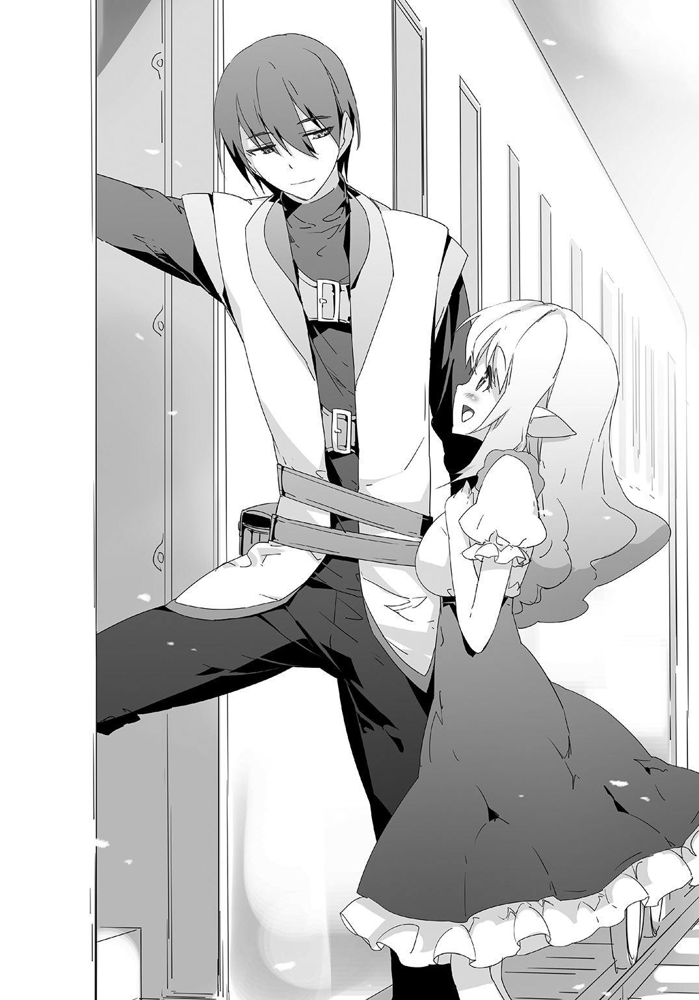
「そういうものだからな」
「おにーちゃん、あれを見るですの」
「うん？」
リリヤが指す方を見る。
車体の外。玉が残光を引いていた。
車体の片側につき二つずつ、車両全体で四つ。
四筋の光を引いて、列車が走っていた。
「素敵ですの」
「そうだな」
きらきら目のリリヤに相づちを打ちながら、おれはレバーを切り替えて、列車の速度を試した。
メーターとかはついてないから、あくまで体感で。
低は自転車をかなり強めに漕いだ、時速二〇キロくらい。
中は坂道を思いっきり下るうえに漕ぐのを追加した速度って感じだから、時速三〇キロはある。
高は同じペースで速度が上がってる感じがして、時速四〇キロってところだ。
低だとあの二足歩行の馬とどっこいどっこいなスピードで、中以上ともなるとこの異世界で見てきた中で一番速い乗り物になった。
「リリヤ、どっかつかまってろ」
「え？ ハイですの」
リリヤが近くの手すりにつかまったのを見て、レバーを止めるに入れる。
列車が止まった、割とすんなり止まった。
発進する、高まで入れて速度を上げてから――一気に止まる。
それも止まった、最高速度から一気に止まった。
「慣性も無視か」
「カンセイですの？」
「いま急に止まったけど、リリヤは体が前に持ってかれたりしなかっただろ？」
「はいですの」
それがどうしたのかって顔をする。
速い乗り物がないこの異世界の住民であるリリヤには、急ブレーキで慣性がどう作用するのかわかってないんだろう。
だがおれはわかる。
時速四〇キロからの急ブレーキでも乗ってる人間はつんのめりもしない。
ＤＯＲＥＣＡと魔力で作った列車だから、そういうものだとは納得できる。
できるが......すげえって思った。
思いながら再び列車を走らせる。
夜空の下、リリヤと二人で列車に乗る。
「そういえば......」
「どうしましたの？」
「他の三人の姿が見えないな」
線路はずっと続いていた。
かなりの確率で途中で線路が途切れて三人と出くわすのかなって思ってたけど、そうはなってない。
線路が続き、列車が走り、三人の姿が見えない。
「おにーちゃんが命令したからですの」
「うん？」
リリヤを見る。
彼女は腰に手を当てて、「えっへん」って感じの格好で話す。
「ご主人様として三人にアキトの町までレールをつなぐように命じましたの。だったらレールはきっともう向こうまで続いてますの」
「開通......完成してるってことか」
「はいですの」
「なるほど」
「だから三人のお姉様はアキトの町で待ってるですの」
「そうか」
そうかもしれないな。
なんとなくその光景が目に浮かぶようだ。
三人が一生懸命になって、レールの敷設を頑張ってる姿を。
もしも本当にもうアキトの町まで繫がってるのなら。
「なんかご褒美をやらないといけないな」
「次の仕事を下さるだけでいいですの」
リリヤがいかにもエターナルスレイブらしい発言をした。
優等生のようにも聞こえる、だけど紛れもない本心からの発言。
彼女たちはそういう種族。
それはそれでいいけど、だからって何もしないというのはあり得ない。
エターナルスレイブは奴隷としてご主人様に尽くせるだけで喜びを感じる種族。
それと同じように、おれも全力で尽くしてくれた奴隷を愛でてやりたいと思う人間だ。
絶対に何かやって褒めるし愛でる。絶対にだ。
やがて遠くに明かりが見えてきた。
人々が集まってできた町が放つ明かり。
レールが続いている。
速度を「低」に落とす。
ゆっくりと進む。
「――っ！」
「わあ」
おれは驚き、リリヤが目を輝かせた。
列車の終点、アキトの町の入り口。
そこに大勢の人々がいた。
横断幕が掲げられてる。
楽器を持つものたちが音楽を奏で始めた。
歓声があがった、「アキト王バンザイ」と大合唱される。
熱烈な歓迎だった。
セレモニー。
そんな言葉が頭の中をよぎる。
「止」に入れて、列車を停止させる。
列車から降りる。熱烈歓迎！ って感じの町の住民の中からマドウェイが出てくる。
マドウェイは首にかける用の花輪を持ってる、明らかにおれに贈るためのものだ。
一瞬戸惑って、離れたところにいる三人の奴隷の姿を見つけた。
おれはピンと来た、これは彼女たちがしかけたものだと。
マドウェイたち、民たちを見る。
悪い気分じゃない、というか逆だ。
特に楽器。
あれをおれは作ってない。形がちょっと歪なものもあるから、みんなが自分で作ったものだろう。
おれの望む町作りが進んでる。
最低限の環境を整備して、人々が自分の手でよりよい環境にしていくという方針が形になってきてる。
だからいい気持ちだ。
「国王陛下」
マドウェイが進み出て、おれの首に花輪をかけた。
おれはそれを受けた、ますます気分がいい。
いいのだけど、不意を突かれたのはちょっとご主人様の沽券に関わる。
後で、全力で愛でてやる。
おれはそう、心のなかで誓った。
第70話 今までとこれから
アキトの町の人々の笑顔に見送られて、列車に乗って町を後にした。
リーシャ、ミラの二人が窓の外を見てて、リリヤが列車の運転をしてる。
ユーリアを呼んで、彼女に質問する。
「あのサプライズを考えたのはだれだ？」
「みんなで」
「みんな？」
「町の人、みんな。レールを作ってたらマドウェイに見つかって、マドウェイが大はしゃぎした。ご主人様が大がかりなものを作った後、生活がすごく良くなるから。って」
「うん！ あの人よくわかってるよね！」
ミラが興奮気味に言って、それからまた景色の方に戻る。
「それで、感謝したいって言ったから。わたしたちがアイデアを出した」
ユーリアが続けて言う。
言い出しっぺはマドウェイ、あそこまで大がかりなものにしたのは奴隷たちの提案、ってことか。
「ダメだった？」
「いいや」
ダメってことはない。
ないが、やっぱり奴隷たちになにかしてやらないとな。
あそこまで大がかりな歓迎セレモニーをしてくれたんだから、こっちもそれなりのお返しをしないと。
こう、もう許して、っていうくらい喜ばせて、愛でてやれる何かを。
おれはそれを考えた。
「ご主人様」
リーシャが話しかけてきた。
「どうした」
「あれ」
リーシャが窓の外を指す。
彼女の指す先にサルの大群がたむろってるのが見えた。
鋭い爪、凶暴な見た目、しかし子供よりも弱いモンスター。
ざっと数えて二〇匹。
住民を増やすチャンスだ。
「リリヤ、止めろ」
「はいですの」
列車が止まる、エターナルスレイブを握って、サル退治に向かおうとする。
「ご主人様、わたしたちに任せてくださいませんか」
リーシャが言う、奴隷が全員おれを見つめた。
「わかった」
剣から手を離して、頷く。
――魔力が１００００チャージされました。
――魔力が４０００チャージされました。
――魔力が１２０００チャージされました。
奴隷たちが嬉しそうな顔で列車から飛び降りていき、サルの群れに突っ込んでいった。
サル相手だから、四人は武器を使わなかった。
戦う姿を眺めて、考えた。
こういうパターンはよくある。
四人がおれの命令で同時に動くが、魔力のチャージは三人分だけ。
ユーリアの分がないのだ。
ユーリアはある意味一番手ごわい。
嬉しがっているのはたぶん間違いない。
だけど魔力の量にして１００万を超えるくらいの嬉しさじゃないとチャージされない。
そのせいでいつも物足りない。
......よし、決めた。
今度のお返しは四人が同時に魔力チャージするくらいの何かにしてやろう。
☆
サルが倒され、次々と人間に戻る。
気がついた者から奴隷たちが話を聞いたり、状況の説明をしている。
全員に話がすんだみたいだから、おれは近づいていった。
「終わったか」
「はいですの」
「そうか。じゃあとりあえず全員リベックに運ぶか。この人数なら運べるだろ」
作ったばかりの列車を見た。
座りきれないだろうが、加速とブレーキの慣性を無視する魔法の列車だから危険はないだろ。
「リーシャお姉様、裾が破けてるですの」
リリヤの声が聞こえて、足を止める。
振り向く。リリヤが言ったとおり、リーシャのドレスの裾が破けてた。
裂け方からして、サルの鋭い爪にやられたんだろう。
リーシャはシュンとして、申し訳なさそうな目でおれを見た。
「気にするな」
そう言って、ドレスを直してやろうとＤＯＲＥＣＡを取り出した。
修復をかけて、大事な奴隷だし魔力のみでサッと直して――。
ドサッ。
物音が聞こえた。音に振り向く、サルから戻ったうちの一人、長い髪の少女が尻餅をついていた。
顔色が良くない、おれを見てものすごく怯えてる。
なんでいきなり？
「ご主人様、それ」
ユーリアがおれのＤＯＲＥＣＡを指す。
「それって、これが原因が怯えてるのか？」
疑問に思うおれ、だが聞くまでもなかった。
ＤＯＲＥＣＡを向けた直後、少女はこっちの胸が痛むほどの悲鳴を上げたのだった。
☆
「ご主人様」
少女から改めて事情聴取したリーシャが、報告のためにおれのところにやってきた。
「どうだ？」
「その......あの子、セイヤさんのところにいたみたいなんです」
「......うん？」
どういうことだ？
「シュレービジュから人間に戻ったのはこれで二回目で。以前はセイヤさんに助けられて、それでセイヤさんのところにいたみたいなんです」
「そういえばサルを倒したら人間に戻るって情報は教えてやってたっけ」
「はい。それで......セイヤさんのところでひどい目にあったみたいなんです」
「ああ」
頷くおれ。それ以上は聞かなくてもわかった。
聖夜は奴隷にしたことを、戻した人間、領民になるはずの人間にもしてたってことか。
「それで......セイヤさんに捨てられて、またモンスターに襲われて」
「再びサルになったのか」
「セイヤさんは暴力を振るったりするときにカードを確認するから、それで」
「なるほど。全部わかった」
おれは少女に近づいていった。
少女はおれを見て怯えて逃げようとするが、寄り添っていたリリヤが捕まえて逃さなかった。
おれはＤＯＲＥＣＡを出す。
「話は聞いた。これが怖かったんだな」
「ひぃ！」
「安心してくれ」
おれは「メニューオープン」と唱えた。
リストの中からケーキを選んで魔法陣を作る。
消費魔力３０００のケーキを、十倍を払って素材なしで作る。
見るからに美味しそうなケーキが一瞬でできあがった。
それを少女に差し出した。
「甘いものは好きか？」
「......え、うん」
おずおずと頷いたから、おれはケーキを少女に渡した。
「おれと聖夜のやり方は違う。あいつはこのカードに苦しみを集めたかったみたいだが、おれが欲しいのは笑顔だ」
「笑顔？」
「そう、笑顔。リーシャ」
「はい」
「ミラ」
「はい！」
「ユーリア」
「うん」
「リリヤ」
「ハイですの」
四人の奴隷の名前を呼ぶ。
四人が次々に進み出て、少女の前に立つ。
「エターナルスレイブが――」
少女はそれを知っていた。うん、よく知ってるはずだ。
聖夜のところにいたんなら、聖夜の奴隷のことを知ってるはずだ。
そして、聖夜が自分の奴隷に何をしてきたのかもよく知っているはず。
少女は奴隷たちを見た。
徐々に表情が和らいでいく。
「奴隷が笑顔」
「ああ」
「わたしたちも笑顔？」
「信用しても構わない」
「......うん、信用する」
少女はおずおずと頷く。
「奴隷さん、笑ってるし」
「そうか」
微笑む、それはおれにとって嬉しいこと。
奴隷の笑顔が信用するに足る理由というのは嬉しいこと。
少女ははにかんでうつむいた。
「い、いただきます」
何かをごまかすかのようにケーキを口に運んだ。
「甘い、美味しい......」
ケーキを食べた彼女は、みるみるうちに笑顔になっていった。
第71話 国王の休日
朝からリベックの町を散歩して回っていた。
特に目的があるわけでもなく、適当にぶらついてるだけだ。
露店の一つの前に足を止める。
串に刺した肉を炭火で焼いてる、なんの肉かはわからないがかなりいい匂いだ。
「おう兄ちゃん、一本どうだい？」
露店の店主がフランクに話しかけてきた。
「ビースク名物、クラカディルの串焼きだ。身が引き締まってさっぱりしててうまいぜ」
「クラカディルか」
何の肉なのかはわからないが、表現は理解できる。
というか......さっきからずっといい香りがしてよだれが出そうだ。
「じゃあ、一本もらおうか」
「あいよ、５００エンね」
「――っ」
「どうした兄ちゃん」
店主はキョトンとおれを見た。
そういえば......さっきからおれのことを「兄ちゃん」って気やすげに呼んでるな。
おれは自分が作った硬貨――５００エン玉を出して、店主に渡して串焼きを一本もらう。
今のことを改めて考える。あの男、おれのことを知らなかったのかな。
串焼きを食べながら市場を歩く。
よく見れば大半が知らない顔だ。
リベックをマラートから解放した直後にいた人たちの顔は全員覚えてる。
今ここにいるのは大半がそうじゃない、はじめて見る顔だ。
そういう人たちにガンガン売り込みをかけられた。
面白いから、片っ端から買った。
まるで縁日の屋台を回ってるような気分になった。
あまり客がいない屋台に止まった。
「これいくら？」
「一人前で１５００エンだよ」
「ちょっと高いな」
だから客がいないのか？
「その分味は保証するよ」
「なるほど、じゃあ一人前をくれ」
金を払って、食べ物を手に入れる。
一口食べてみた、まずかった。
食べ物とは思えないくらいのまずさ、プシニーとどっこいどっこいだ。
高いからじゃない、高くてまずいから客がいないんだ。
離れたところに立って、その屋台をしばらく見た。
客が全然寄りつかない、閑古鳥が啼いてる。
「ありゃ......近いうちにつぶれるな」
そうつぶやき、おれは再び歩き出した。
市場を出て、町中へと足を進める。
「あれ？」
一軒の民家の前に足を止めた。
その民家はＤＯＲＥＣＡで作った木の家で、何故かドアが壊れてる。
それを住民らしき男が直してる。
「よう」
「あっ、王様」
今度はおれのことを知ってる男だった。
「それどうした」
「いや......その......」
男は頭を搔いて、苦笑いした。
「女房をちょっと怒らせちゃって、それで」
「なるほど、ケンカした結果か」
「はい」
「しかたないな」
おれはＤＯＲＥＣＡを取り出した。
男は慌てて手を振った。
「ああ、大丈夫です王様。これくらい自分でなんとかしますから」
「自分で？」
「はい。というかもうほとんど修理が済んでるし」
おれはドアを改めて見た。
たしかにほとんど修理が済んでる。
「いいの？」
「はい。これくらいのこと、王様の手をわずらわせるまでもないです」
「......そうか。じゃあ頑張れよ」
男に手を振って、その場から立ち去った。
☆
日が暮れるまで、リベックを歩いて回った。
町は機能していた。
様々な店ができて、商売で活気づいてる。
おれや奴隷たちじゃなくて、住民たちも自分たちで何かを作ったり、物を直したりしてる。
この日、おれははじめてなにもしなかった。
何も作らず、何も直さず、何も倒さなかった。
あえて何もしなかった。
それでも――人々は笑顔だった。
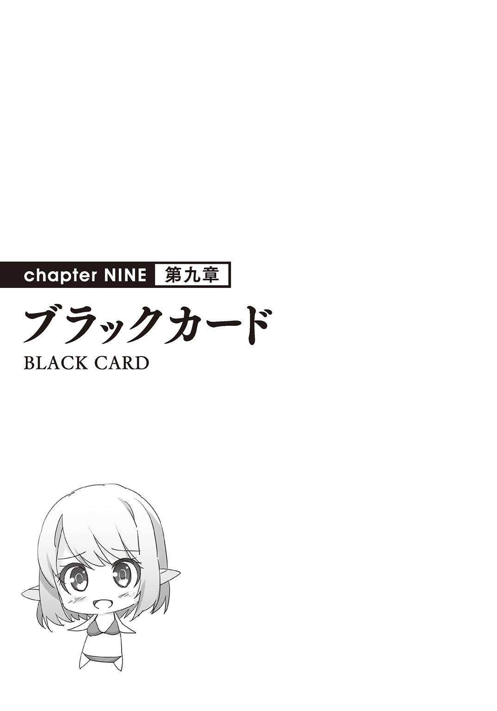
第72話 現地調達
荒野をリーシャの二人と歩いていた。
おれがすいすいと前を歩いて、リーシャが後ろからついてくる。
腰の真・エターナルスレイブ以外、二人とも手ぶらで、まるでただの散歩って格好だ。
「本当に何も持ってこなくても良かったのですかご主人様」
「なんで？」
首だけで振り向き、リーシャに聞く。
「だって、バカンスなのに......まったく荷物がないんじゃ......」
「メニューオープン」
プラチナになったＤＯＲＥＣＡを取り出して、メニューからジュースを選んだ。
消費魔力は２０００、それを魔力のみで生産する。
素材なしでの生産、十倍かかる２００００。
手元に瓶入りのジュースができた。
それをリーシャに放り投げる。髪が伸びてきたエルフ奴隷が慌ててキャッチする。
「荷物なんて全部現地調達でいいだろ。わざわざ持ってくる必要はない」
「ですが、その......」
リーシャは瓶ジュースにものすごく恐縮する。
「これじゃ魔力が......」
「もったいないって言いたいのか？」
「はい......せめて最低限の素材は」
立ち止まり、リーシャの方を向く。
リーシャも立ち止まり、何事かと不思議がってる。
そんな彼女にデコピンした。
「ひゃん！」
おでこを押さえてちょっと涙目のリーシャ。
そんな彼女の頭をわっしゃわっしゃと強めに撫で回してやった。
「おれにバカンスを取れって言ったのはお前らだろうが。バカンスってのはそもそもが贅沢でもったいないのを楽しむものなんだろ？」
そう、おれは今バカンスに出かけてる。
言い出したのはミラだ。
おれがはじめて何も仕事をしなかった日の夜、彼女はそれを知って、ご主人様はもっと休むべきだと言った。
それに奴隷全員が乗っかった。早速事務能力の高いユーリアを中心に、おれがいなくても回る仕事の再分配がされた。
ちなみに内容は聞いてない。ただ一言ユーリアに「やれるか」とだけ聞いた。
ユーリアは「三人ならなんとか」と言った。
それを信用した。おれの奴隷がおれをだますことはあり得ないからだ。
それでバカンスに出ることにした。
奴隷の三人を残して、リーシャだけを従者として引き連れて出発した。
「それはそうですけど、というかご主人様ならそうですけど」
「ちなみに」
ものすごく恐縮して遠慮しそうなリーシャを無視して、宣言する。
「おれはこのバカンスで魔力を全部使い切るつもりだ」
そう、せっかくだから、おれは魔力を全部使い切ろうと思った。
☆
適当に歩いて、やってきた小高い丘の上。
そこから海が見えた。
まわりは何もない不毛の地、少し離れたところに見える海。
気温は低くないのに、何もないから寒々として見える海。
「ここにしよう」
「ここですか？」
「ああ」
「でも......ここは何もないですよ？ ご主人様がバカンスを過ごすには......」
「メニューオープン」
ＤＯＲＥＣＡを出してリストの中から選ぶ。
プラチナカードで追加された「四階建ての家」を魔力のみで建てる。
消費は１００万、それでも作った。
中に入って、最上階に上がって、窓を開けて海を見る。
寒々しいのは変わらないけど、予想どおり、高いところからだと見晴らしが良くていい感じだ。
今度は室内に目を向ける。
ベッドを作って、風呂を作って、食堂を作る。
泊まってバカンスをするために必要なものを全部魔力のみで作る。
四階建ての家が快適に過ごせるまでにざっと１５０万の魔力がかかった。
「こんな感じでいいだろ。つぎ行くぞ」
「は、はい！」
戸惑うリーシャをつれて外に出た。
丘を降りて、海辺にやってくる。
「寒々しいのはいやだから......これにしよう」
メニューの中からヤシの木っぽいのを選んで、それを数十本まとめて作った。
「リーシャ、これをまんべんなく海辺に並べとけ」
「はい！」
命令されたリーシャはさっと動き出した。
ああだこうだ言うけど、おれに命令されるとそういう悩みが吹っ飛ぶみたいだ。
そういうところがエターナルスレイブらしくて、健気で愛らしい。
「さて、次は......お、これいいな」
リストの中に船着き場とボートを見つけた。
使うかどうかはわからないが、海辺にそれらを作っといた。
ちょっと引いて全体を見回す。
船着き場とヤシの並木ができたそこはだいぶ見栄えが良くなった。
寒々しさが消えて、それなりにリゾート地に見えてきた。
後は何があればリゾート地っぽくなるんだろ？
四階建ての家のまわりは芝生で埋めとこう。緑なのがいい。
海の家っぽいのが欲しいな。木の家と部分解体でアレンジして作ろう。
そうだ、ニーナが教えてくれた柱の上に建物を乗っける高床式のヤツを作ろう。
あれがあれば一気にリゾートっぽくなるはずだ。
おれはあれこれ作った。
イメージの中にあるリゾート地、海水浴場とかプライベートビーチとか、そういうのを思い出しながら作った。
海辺に到着して半日。
「うわ......すごい......」
リーシャが感動するほどのリゾート地ができあがった。
さあ、楽しむぞ。
第73話 初めての手作り
次の日の朝、おれは紙を作って、そこにあみだくじを書いた。
まず縦の線を四本書いて、間に適当な横線を引いて、それを折りたたむ。
書いたおれでもどこがどれに繫がってるのかわからないようにしてから、下の方に文字を書き込んだ。
それをリーシャに見せる。
「一から四番、どれがいい？」
「わたしが選ぶのですか？」
「ああ、これで今日のお前の水着が決まる」
「じゃあ一番で――えええ？」
「一番だな、よしわかった」
おれはあみだくじの結果を見ようとしたが、止められる。
「ちょ、ちょっと待ってくださいご主人様。水着ってどういうことですか？」
「だからお前が着る水着のことだよ。メニューオープン」
ＤＯＲＥＣＡからリストを出して、リーシャに見せる。
「ほら、女物の水着が四種類あるだろ？ この中のどれかを着るためのあみだくじだ」
「そんな、わたしなんかが水着を――」
「あの砂浜は水着以外立ち入り禁止な」
変に遠慮しそうだから強引にそう言った。
「えええええ？」
「それじゃ行くぞ、一番一番っと」
「ま、待ってくださいご主人様」
リーシャは慌てておれを止めた。
「どうした？」
「その、一番ってどの水着なのですか？ もしかしてこれじゃ......ないですよね」
おそるおそるおれに聞くリーシャ。
ＤＯＲＥＣＡで出したリストに動画が流れてて、そこに水着が映し出されてる。
流れてるのはＶ字型のほとんど紐のような水着。
露出度が高くてかなりグッドなやつだ。
「それをこのあみだくじで決めるんだ。こんなふうに」
リーシャが選んだ一番のスタートから指でなぞって、折り目のところまで進ませる。
「これをやって下まで行って、四つのうちのどれかに決まるんだ。ちなみにおれももうどこがどこに行くのかわからない。完全ランダムだ」
「そんな......あの、ご主人様、他の三つはどんな水着なのですか？」
「それは当たったときの楽しみだな。ああ心配するな、他の三つはどれもこいつよりは布地が多い」
「そうなんですね......」
リーシャは見るからにほっとした。
やっぱり紐水着の布地の面積が気になるんだな。
「ふむ。もう一回選ぶか？ どっちにしろあみだくじだからランダムだけど」
だまし討ちみたいなやり方だったからな。
一回くらいは選び直すチャンスをあたえてやろう。
「......いえ」
リーシャはちょっと考えたが、首を横に振った。
さっきまで慌ててたのが噓だったように、落ち着き払った真顔で答えた。
「これを選んだのはご主人様のご恩寵。だからこのまま行きます」
「そうか」
微笑み返してやった。
相変わらず健気でいい子だ。
「じゃあはじめるぞ」
「はい」
「あみっだくじ、あっみだくじ......」
口ずさみながら、指でなぞっていく。
折り目を少しずつ開いて、あみだくじをなぞっていく。
ごくり、って音が横から聞こえた。
やがて、指がゴールにたどりつく。
「ふむ」
「どうですかご主人様」
「喜べリーシャ。四つのうちで一番布面積が多いヤツだ」
リーシャはほっとした。
「さて、作るか」
ＤＯＲＥＣＡからそれを選んで、魔力のみで生産する。
女物の中でもダントツの布面積を誇るもの――スクール水着を。
☆
青い空、白い砂浜。
海パン一丁のおれは魔力でパラソルを生産した。
まわりにヤシの木を植えたこともあって、昨日やってきたときの荒涼な感じは完全になくなってて、一気に南国の砂浜っぽくなった。
かなりいい感じだ。あとでジュースとか出せばもっといい感じになりそうだ。
他になにか必要なものは――。
「ご、ご主人様」
リーシャの声が聞こえた。
おずおずとおれに話しかける、恥じらいのこもった声。
ふりむく、リーシャがいた。
格好がエロかった。
上はシャツ一枚である。いつも着てるドレスはおれが没収したが、どうやらおれが置いてったシャツを羽織ったようだ。
それで大分隠れたけど、股の間から水着の布地がちらちらと見える。
丸見えよりだいぶエロかった。
「なんだそれは」
「その......」
もじもじするリーシャ、いかにも恥ずかしそうって反応だ。
「は、恥ずかしい、です」
「そうか、わかった」
リーシャはほっとした。
「なら上を脱げ」
「えええええ」
「それはおれのシャツだ、貸すともやるとも言ってない」
ちょっと強めに言ってやった。
もちろん怒ってはない、むしろ逆だ。
水着の上にシャツを重ね着というのをナチュラルにやったリーシャを褒めてやりたいが、それはそれ、これはこれだ。
じっと見つめて、目で促す。
リーシャは恥ずかしそうにもじもじしながら、シャツを脱いで水着姿になった。
紺色の生地に、胸もとに「りいしゃ」と書いた白い布が縫い込まれてる。
完璧な、非の打ち所がないくらいのスクール水着だ。
スタイルのいいリーシャとスクール水着、そのアンバランスさがかなりイイ感じ。
いつまでもじっと見ていたいくらい素晴らしい光景だ。
「そ、そんなにじろじろ見ないでください」
「見ちゃダメなのか？ ご主人様が奴隷を見ちゃダメなのか？」
「そ、そんなことはありませんけど......」
頰を染めてうつむくリーシャ。
普段ならば「ご主人様と奴隷」を持ち出すとすぐに折れるんだけど、今日はそうはならないで、思いっきり恥ずかしがった。
それが新鮮で、楽しかった。
「よし、じゃあはじめるか」
「はい」
頷くリーシャ。
おれはその場で、ごろんと横になった。
さらさらの砂、べっとりしてないそこはそのまま寝っ転がっても気持ち良かった。
寝っ転がって、目を閉じて、海の音を聞く。
結構安らぐな。
「あの......ご主人様？」
寝っ転がったまま見あげる。リーシャが不思議そうにおれを見ていた。
「なんだ？」
「はじめるん......じゃないんですか」
「はじめてるぞ。休むのをはじめたんだ」
「なにかしないのですか？」
「しない、このまま休んでるだけ」
「はあ......」
リーシャはわからないって顔をした。
だったらわからせてやるまでだ。
「リーシャ。そこに座れ」
「はい」
リーシャは言われた通り座った。
おれは体をずらして、頭を太ももに乗っけた。
膝枕だ。
「じっとしてろよ」
「......はい」
――魔力が５０００チャージされました。
リーシャは優しく微笑んだ。さっきまでの恥じらいはどこへやらだ。
膝枕したまま、聞く。
「その水着は恥ずかしいか？」
「その、ちょっとだけ」
「他のにするか？」
「えっと......」
「うん？」
「その......できればこれと、紐みたいなの以外のがいいです」
「ふむ。メニューオープン」
ＤＯＲＥＣＡを取り出して、水着を見た。
残った二つの水着、どれがいいのかと考える。
片方は普通のビキニで、もう片方はパレオ――腰布がついたタイプだ。
どっちもいいけど......どっちにしようか。
「あ、貝殻」
「うん？」
リーシャの視線を追いかけた。
波打ち際にホタテのような貝殻があった。
おれは体を起こした。
「リーシャ。あれを拾ってこい。三枚くらいだ」
「わかりました」
リーシャは何の疑問も持たないまま拾いに行った。
待ってる間魔力で紐を作った。
「これでいいですかご主人様」
「貸してみろ。うん、ちょうどいい」
「それをどうするんですか？」
「見てな」
貝殻に穴を開けて、紐を通した。あっという間に貝殻のビキニができあがった。
「ほら、これやるよ」
「ありがとうございます」
受け取ったリーシャ。
最初はキョトンとしたが、受け取ったものを二度見して、やがて頰が緩んだ。
「ご主人様が作ってくださったもの......」
とつぶやいて、貝殻ビキニを愛おしげに抱きしめた。
――魔力が１０００００チャージされました。
「嬉しそうだな」
顔もそうだし、チャージされた魔力も多めだ。
「ご主人様が作ってくださったものだから......カードでじゃないものははじめてだから」
うん？ そうだったかな。
そうかもしれない。
「まあ喜んでもらえてこっちも作った甲斐がある」
「ありがとうございます！」
「それよりも着替えてきてくれ」
「着替える、ですか？」
きょとんとするリーシャ、何のことかわかってないって顔だ。
貝殻ビキニを指して、言った。
「それ、水着だから」
「えええ？」
「せっかくだから着替えてみろ」
「で、でも......」
リーシャは躊躇したが、やがて観念して、貝殻ビキニに着替えた。
「ご主人様の......」
――魔力が５００００チャージされました。
スク水ほどエロくはならなくて、その分リーシャが微妙に嬉しそうだったから、それでよしとした。
第74話 セーブ＆ロード
夕方、食事タイム。
おれはリーシャを連れて、四階から下に降りていく。
おれは前をはだけたシャツに海パンで、リーシャもＴシャツに水着という格好だ。
ちなみに水着は普通のビキニにした。シャツを羽織るとなるとスク水も貝殻ビキニも微妙にエロくなるから、普通のを作ってやった。
「すみませんご主人様、手伝えなくて」
「かまわん。料理の内容を知らないんじゃな」
「今日覚えていきますので、次回からは任せてください」
「ああ」
リーシャは意気込んでる。
「そう気負うな。バカンスだ、覚えるのもいいが楽しめ」
「わかりました！」
頷くが、やっぱりかなり意気込んでる。
まあいい。
おれはリーシャを連れて、二階の部屋に入った。
壁は改造して、全面を窓にして。それが開かれて、海に沈みゆく夕日が見える。
部屋の中はテーブルを並べて、その上に多数の料理を並べた。
「これが......ぶっふぇ、ですか？」
「ああブッフェ。バイキングとも言う」
つかつかと部屋の奥、窓の方にやってきた。
そこに置いたテーブルの横に座る。
向かいにも椅子を用意したから、そこを指した。
「説明するから、座れ」
「はい」
リーシャは恐縮そうに座った。
「リゾートのホテルによくあるバイキング方式にした。あそこに並んでる料理を適当に取って、好きなものを好きなだけ、好きなように食べろ」
「好きなように、ですか」
「ああ」
立ち上がって、ブッフェ台に行って、白い皿を取った。
皿にいろんな料理をちょっとずつ取って、コップにジュースもついだ。
それを持って戻ってくる。
「こんな感じだ。食べたいものを食べたい分量で勝手に取る」
「は、はい」
「おまえも適当に取ってこい」
「わかりました」
立ち上がったリーシャ、歩きだそうして、おれに振り向き、聞いてきた。
「ご主人様は何が食べたいですか」
「自分で取る、そういう方式だ。お前が食べたいものを取ればいい」
「わかりました......」
リーシャはブッフェ台に行って、同じように皿を取って、あれこれ悩みだした。
おれは自分が取ってきた料理を摘まみながら、窓の外を見る。
いる場所も、景色も、服も食事も。
完璧にリゾートライフだ。全部自分がＤＯＲＥＣＡをつかって用意したことをのぞけば完全にリゾートライフだ。
結構楽しかった。
リーシャが戻ってきて、遠慮がちに食べ始めた。
「リーシャ」
「はい！」
食べるのをやめて、ビシッ、と背筋を伸ばす。
「かしこまるな、食っとけ。今日は楽しめたか」
「えっと......はい」
頷くリーシャ。なんか奥歯に物が挟まったかのような返事だ。
「楽しくなかったのか？」
「い、いいえ！ 楽しかったです」
「そうか？」
「はい！ ご主人様から水着もいただけましたし、楽しかったです、はい！」
力説するリーシャ。そう思ってるんなら別にいい。
おれは立ち上がって、新しい皿で新しく料理を取った。
料理を取って、食べる。
食べ終えると、また料理を取りに行く。
取って、食べて、リーシャと世間話をする。
至って普通のバカンスだ。
「あっ」
料理を取りに行ったリーシャが声を上げた。
「どうした」
「いえ、この皿の料理がなくなっただけです」
「うん？ ああちょっと待ってろ」
ＤＯＲＥＣＡを取り出し、メニューを開く。
「今から作るのですか？」
「ああ。ついでに見せてやる、プラチナカードになって追加された新機能を」
「――はい！」
リーシャはわくわくしだした。
プラチナカードになって、二つの機能が追加された。
セーブとロードだ。
その二つのうち、セーブは既に使ってたから、今度はロードを使った。
魔法の光がブッフェ台を包み込んだ。
料理が補充された。
と言うより戻った、おれたちが部屋に入ったときと同じに、セーブした時の状態に戻った。
「こ、これは？」
「ものを作りだした時の状態をＤＯＲＥＣＡが保存して、呼び出して元に戻す機能だ。いろいろ試したが、変化した部分だけ復元するのと、一から同じものを作り直す二つの使い方ができる」
「えっと......つまり？」
「作ったものをセットでまとめて作れるってことだ。例えば宮殿、あれもセーブ＆ロードで同じものをもう一個作れる。あの森もだ」
「すごいです......」
「まあ、便利だな」
セーブ・ロード機能だが、ぶっちゃけこの先コピペ的な使い方が多くなると思う。
「それはともかく、ほれ」
料理をリーシャの皿に載せた。
取ろうとして品切れになった料理だ。
「ありがとうございます」
「好きなもんをどんどん食っとけ」
おれは近くにある酒をコップにつぎながらそう言った。
☆
「ごじゅじんざまぁ......」
「......」
おれは絶句した。目の前のリーシャは、涙で顔がくしゃくしゃになってる。
積み上げられた料理の皿の横にワイングラスがある。
せっかくだから一杯いっとけって勧めたんだが。
「一口でこれかよ......」
そう、一口、一口だけだ。
一口飲んだだけでリーシャはこんな有様になった。
「ぐす......ご主人様はほんろひろいでふ」
「ひどい？ 何がだ」
「仕事させろ！」
今度はいきなりキレて、テーブルを叩いてわめいた。
「仕事れふよ、し・ご・と。奴隷に仕事させないご主人様はご主人様失格れふ！」
「バカンスだぜ、いま」
「そではご主人様らけれふ！」
なるほど。まあ言いたいことはわかる。
「きゃはははははははは」
今度は笑いだした。
「ははは......はあ」
かと思えばため息をついてテーブルに突っ伏した。
忙しいやっちゃな。
「うわあああん」
また泣きだした。
泣いて、怒って。泣いて、笑って。泣いて、愚痴って。
泣く割合が多くて、その内容は何故働かせてくれないのかってものばかりだ。
「ごじゅじんざまぁ......」
「......リーシャ」
「何ですかもう！」
「......あそこにあるケーキを取ってきてくれ」
「――はい！」
――魔力が１００００チャージされました。
リーシャは満面の笑みで立ち上がった。
千鳥足でブッフェ台に向かっていく。
「ひゃん！」
途中ですっころんだが、すぐに起き上がって、ブッフェ台からケーキを取った。
それでまたふらふらと戻ってくる。
「ご主人様、どうぞ」
「ああ」
「どうですか、ご主人様」
「ああ、美味い」
「よかった......」
そう言って、へなへなとまたテーブルに突っ伏した。
また落ち込んだのか？ と思いきや。
「むにゃむにゃ......」
どうやら寝てるみたいだ。
やたらと満足げな笑顔だった。
仕事させてもらえて、それで満足したみたいだ。
とことん奴隷で、健気で愛おしい。
「バカンスが終わったらまた働いてもらうさ」
おれはそうつぶやき、酒をちびちびなめるように飲みながら、ＤＯＲＥＣＡのメニューを眺めた。
たまに減る魔力――留守の奴隷の働きを数字で見守った。
バカンスの夜は静かにふけていった。
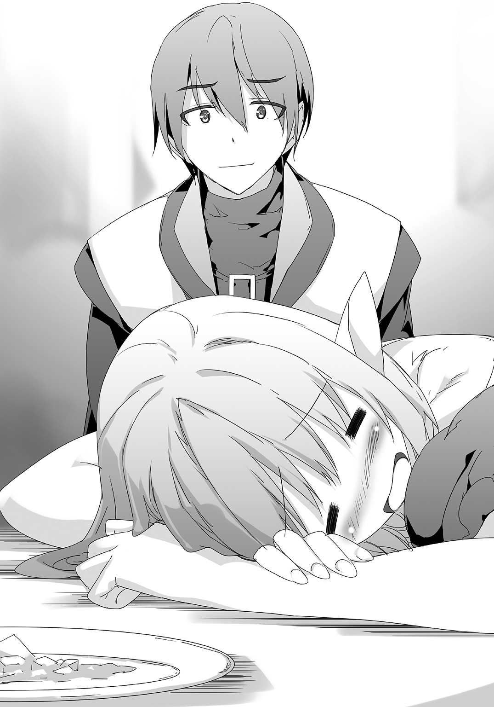
第75話 召喚
リーシャをベッドの上に寝かせた。
べろんべろんに酔っ払って、自力じゃ歩けないようになったから、だっこしてベッドまで連れてきた。
「ご主人様......」
起きたのかと思ったらそんなことはなかった。
にへらと笑う、寝言のようだ。
「もっとぉ」
もっと？
「もっと......お仕事くらさい......」
「仕事かよ！」
思わず突っ込んでしまった。
色気もへったくれもない寝言だな。
こういう時ってもっとこう、色っぽい何かがあるだろ。
「だめですよお......」
おっ。
「一日三〇時間働くのは......矛盾してまふ......」
結局働くのか！
「うへへ......」
そして嬉しいのか！
呆れた。呆れたけど、なんか楽しい。
結局エターナルスレイブはエターナルスレイブだってことだ。
ご主人様のために働きたがる、奴隷として尽くしたがる。
そういう健気でかわいい連中なのだ、こいつらは。
それを知ってるつもりでいたけど、寝言で再確認した。
言葉よりも行動、行動と同じくらいの説得力がある寝言。
それで、リーシャの健気を再確認できた。
起きたら可愛がってやろう。
そう思って部屋を出た。
建物を出て、浜辺にやってきた。
今日のことを思い出す。
いろいろあって楽しかった。リーシャも奴隷だからと遠慮したけど、それなりに楽しめたはずだ。
ミラ、ユーリア、リリヤの三人の姿を思い出す。
三人の奴隷たちにもここを楽しませてやりたくなった。
リーシャと同じように。
そう思って、おれはＤＯＲＥＣＡを取り出した。
プラチナカードで追加された新機能で、このリゾート地に作ったものをまとめてセーブした。
次もここに来てもいいし、別の海にここにある一式をコピーしてから微調整してもいい。
とにかく、次は他の三人も連れてこよう、おれはそう思った。
ＤＯＲＥＣＡをしまって、建物に戻ろうとする。
「......？」
足を止めた。
妙な気配を感じる。
風というか、空気が妙にざわついてる。
何かいる......しかもかなり大勢。
敵かモンスターか、どっちにしろ殺ってしまおう、と思ったが、腰に剣がないことを思い出した。
部屋に置いてきたのだ。
今のおれは前をはだけたシャツに海パン姿。
取りに戻ろうか、と思ったが。
「出たか」
それよりもさきに、そいつらがおれの前に現れた。
巨大な蜘蛛。胴体は人間と同じくらいのサイズだが、広げた足で十倍近く巨大に見える。
体と足にびっしり毛が生えてる、見た目のグロさと相まってかなりのプレッシャーだ。
それがビーチを取り囲むようにわんさかいた。
思考を巡らす。
何をどうすれば一番いいのかという思考が脳内を駆け巡った。
「――」
文字では表現できない奇声を上げて、目の前の蜘蛛が襲いかかってきた。
巨体に似つかわしくない猛スピード、おれは横っ飛びでかわした。
かわした後全速力で駆けだした。
部屋に向かって。
建物にも蜘蛛が群がってる。
「メニューオープン！」
新機能で一〇本の剣をまとめて作った。最初に試した時にセーブしたものだ。
一瞬でできた剣をまとめて投げつけた。
ドドドドドド――ッ！
剣が入り口の前にいた蜘蛛に突き刺さる。
一瞬ひるんだ隙に、横をすり抜けて建物に入る。
階段を駆け上る。
「リーシャ！」
「ご主人様！」
窓から入ってきた蜘蛛にリーシャは部屋の角に追い詰められていた。
「メニューオープン！」
一〇本の剣をまとめて投げつけ、足止めしてから解体でそこの床を崩した。
ぽっかり空いた穴に蜘蛛が吸い込まれて、下の階に落ちていく。
「大丈夫だったか」
「はい！」
「よし......上に行くぞ」
「上ですか？ でも上だと逃げられなくなります」
「逃げる必要はない」
リーシャの手を取る。
「エターナルスレイブが上にあるんだよ」
「――はい！」
リーシャが笑顔になって、大きく頷いた。
リーシャを連れて部屋から出た。
入り口にいた蜘蛛が追いついてきた。
「解体！」
階段をぶっ壊して、蜘蛛を下の階に落とした。
ガタン！ 建物が大きく揺れた。
「きゃあ！」
「やたらとぶっ壊しすぎたか」
「大丈夫なんですかご主人様」
「問題ない！」
リーシャを連れて上に上がる。
一気に駆け上がる最上階、おれの部屋。
壁際に置いてある真・エターナルスレイブ――の前に蜘蛛がいた。
「ご主人様......」
「そんな目をするな」
おれは蜘蛛に立ち向かっていった。
「――」
奇声を上げて威嚇してくる蜘蛛。
前足の二本を振り上げて、殴りつけてきた。
「ご主人様！」
悲鳴のような声を耳にしながら、おれは突進して蜘蛛の懐に潜り込んだ。
足を空振らせた蜘蛛の腹に手を当てた。
「メニューオープン――ロード！」
瞬間、蜘蛛の腹の中から剣が「生えた」。
まるで植物の発芽のように、一〇本の剣が体の中で生成された。
ハリネズミのような蜘蛛、もがいて、崩れ落ちる。
「すごい......こんなこともできるんですね」
「あれこれ試したからな」
「さすがご主人様です！」
リーシャの全面的な信頼が心地よかった。
蜘蛛の横をすり抜けて、壁際に置いた真・エターナルスレイブを手に取った。
赤い宝石に触れてリーシャを取り込む。
燃え盛る炎の刀身。
窓から外を見る、夜の砂浜に蜘蛛がわらわらいた。
ざっと数えても数十体はいる。
が、それだけだ。
おれの手元に奴隷剣が戻った。
「さて、行くか」
（はい！）
窓枠に足をかけて、剣になった奴隷とともに戦場に飛び降りていく。
第76話 奴隷のひらめき
最後の一匹の蜘蛛を倒した。
砂浜の至る所で両断された蜘蛛が炎上してる。
「もういませんか？」
剣から人間の姿に戻ったリーシャが聞く。
「近くにはな」
「よかった......」
リーシャは見るからにほっとした。
胸を撫で下ろすが、足元がちょっとふらついた。
「大丈夫か」
「はい、大丈夫です」
すぐに答えたが、言葉に覇気がない。
見た感じ、体のどこも怪我はしてないみたいだが。
「ひぃ！」
いきなり悲鳴を上げた。
燃えてる蜘蛛の一体が、急に足をびくっとさせたからだ。
「怖いか、こいつらが」
「は、はい」
なるほど。
まあ、胴体が人間とほぼ同じサイズで、そこから長い八本足が伸びてる巨大な蜘蛛だ。
リーシャの反応は当然と言えば当然だろう。
「あっ、でもご主人様がいるから大丈夫です！」
リーシャが慌てて言う。後づけのフォローだ。
「無理をしなくていい。今回はおれのミスだ」
「え？」
「イリヤの泉を設置してなかった。おれたち二人だけだし、町の建設ってわけじゃなかったからな」
「あっ......」
リーシャはきょろきょろと辺りを見回した。
建物に、ヤシの木に、ビーチ。
いろいろ作ってるが、そこに魔物の侵入を防ぐイリヤの泉はない。
「まっ、そういうことだ。それよりもリーシャ、奴隷カードを出せ」
「はい、どうするんですか？」
「壊れてるところを片っ端から修復しろ。あと全体の真ん中――あの辺にイリヤの泉を作っとけ。全部魔力でやれ」
「はい」
リーシャは頷き、すぐさま動きだした。
奴隷カードを持ってイリヤの泉を設置して、あっちこっちに修復をかけた。
おれは蜘蛛の後始末をした。
ばらして、きっちり燃やす。
しばらくして、手作りリゾートが全部修復された。
「終わりましたご主人様」
「ご苦労」
ＤＯＲＥＣＡを取り出して、新機能でリゾート一式をセーブする。
「これで終わりだな」
「はい！」
はきはきと答えるリーシャ。
「どうした、テンションが高いな。酔いはもう醒めたんだろ」
「酔いですか？」
きょとんとするリーシャ。覚えてないのか、あれを。
いやまあ、それならそれでいいけど。
「なんか嬉しそうだな」
そこだけに絞って、もう一回聞いた。
「はい。ご主人様と一緒に物を作ったり、直したりするのが嬉しくて」
「バカンスよりも働きたいのか」
「エターナルスレイブですから」
リーシャは即答した。なるほどな。
いかにも彼女らしい、奴隷らしい願望。
そんな健気な奴隷にちょっと意地悪したくなった。
「そうか。それは困ったな」
「え？」
「バカンスが楽しめないんじゃな。ここをもっと楽しめるようにするためには何があればいいのかってリーシャの意見を聞こうとしたんだけど、楽しめない奴に聞いてもなあ」
「あっ......」
「しょうがない、他の誰か――そうだなマルタかマイヤにあ――」
身を翻して歩きだそうとする。
「あ、あの！」
リーシャが大声を出しておれを呼び止めた。
笑いをこらえて、振り向く。
「なんだ？」
「す、砂場はどうでしょうか」
「砂場？ あの公園みたいのか？」
「はい！」
「ここが既に砂浜なのに？」
「あっ......」
まわりを見て、はっとするリーシャ。
「えと、ええと」
更に考える、うんうん唸る。
「そうだ！ 湖――もダメですよね」
今度はおれが指摘する前に自分で気づいた。目の前が海だってことに。
例のリーシャと一緒に作ったあの森の湖、今度はあそこから出た発想のようだ。
リーシャはうんうん唸った。必死に考えてる。
おれは歩きだした、燃え盛る蜘蛛の山から離れて、ゆっくり散歩するペースで砂浜を歩く。
リーシャは必死に考えながらついてきた。
「た、食べ物の店はどうですか？」
「あそこにある海の家で食事を出せる」
リーシャはいろいろと案を出した。
今までおれと一緒に作ってきたものの中から出してる感じだ。
さすが第一奴隷、付き合いが長いだけあって、何一つ使えない案ばかりだったけど、これまで作ったものは次から次へと出た。
散歩しながらそれを聞くのは悪い気分じゃなかった。今までの想い出を語ってるような、そんな気分になる。
実質国王即位のご褒美のバカンスとしては、これだけでも満足する感じ。
立ち止まる、リーシャを見る。
うんうんと頭を悩ます彼女を褒めて、終わりにしようとした。
「お風呂......はダメですよね」
「うん？」
「海があるのに、わざわざ小さいお風呂に入る意味はないですよね......」
「いや待て」
お風呂――町には必ず作ってる、衛生対策の銭湯のことだ。
まわりを見回す。でっかい岩があった。
そこに上る。人の背丈よりも遥かに高いそれは、ちょっとした見晴らし台だ。
「ご主人様？ どうしたんですか」
「見てろ」
真・エターナルスレイブを抜いて岩を真っ平らにならした。その後ロード機能を使って、そこに風呂を作った。
「うん、いい。いいぞこれ」
「え？」
「海と温泉、実は結構相性いいんだ」
温泉じゃないけど。
「温泉に浸かりながら海を見るのって実はかなりの贅沢なんだ」
夜だが、燃える蜘蛛たちが明かりがわりとなって海が見えていた。
「リーシャ、でかしたぞ」
「えっ？」
きょとんとするリーシャ。
おれは紙を作って、例のメダルを折ってやった。
「よく思いついてくれた」
「......ありがとうございます」
――魔力が１００００チャージされました。
リーシャはメダルを大事そうに抱えた。
おれはＤＯＲＥＣＡを出して、上書きでリゾートをセーブした。
そして、改めて風呂を見る。
「......入っていくか」
「あの！ ご主人様！」
「うん？ なんだ」
「なにかわたしにできることはありませんか」
期待するような瞳で、メダルを抱えながらおれを見る。
よっぽど何かしたいんだろう。
くつろがせるより、仕事させた方がいいのか。
「じゃあ酒を持ってこい。その後おれの背中を流してくれ」
「はい！」
リーシャは岩から飛び降りて、建物の方に向かって走っていった。
――魔力が１０００００チャージされました。
嬉しさが、リーシャの背中からにじみ出ていた。
第77話 戦利品
王都リベック、王の宮殿。
戻ってきたおれをミラが出迎えた。
「お帰りなさい、ご主人様！」
「ただいま。留守の間、国の運営はどうだった？」
「えっと......そっちは順調です。ユーリアがいろいろやってくれたから、いつも通りって感じだよ」
「そうか、よくやった」
そう言って、あらかじめ用意してあった紙のメダルを取り出す。
三つ用意してあって、そのうちの一つをミラに渡す。
「ご褒美だ」
「ありがとうございます！」
――魔力が１００００チャージされました。
「ユーリアとリリヤは？」
「ユーリアはベルミ、リリヤはビースクに行ってるよ」
「そうか。じゃあこれは帰ってきてからやろう」
折り紙のメダルをしまった。
「ねえ、ご主人様」
「うん？」
ミラを見る。打って変わってなんか深刻そうな顔をしてる。
「どうした」
「あのね......例の子のことなんだけど」
「例の子？」
「もう一人のエターナルスレイブの子」
「ああ、聖夜の奴隷か。彼女がどうした」
「病気になっちゃったの」
「......なんだって？」
☆
リベックの外れ、物静かな区画。
そこに屋敷があった。かつておれが使ってた領主の館と同じ造りの屋敷だ。
ここに聖夜の奴隷が住んでいた。
他人の奴隷ってことで、客として扱うことを決めたから、こうして屋敷に住まわせていた。
屋敷に入って、まっすぐ寝室に向かった。
「......」
そこに彼女がいた。ベッドの上に寝て、窓の外をぼうっと見つめている。
正直驚いた、ミラから聞いてた話よりもだいぶ悪い状況だったからだ。
彼女はまるで寝たきりの病人のようだ。
頰がこけて、瞳に生気がなく、蠟人形に見間違えるほど微動だにしない。
「......よう」
声をかけるとこっちに振り向いたので、ようやく彼女が生きてると感じることができた。
正直、病気どころの騒ぎじゃない。
彼女のそばに来て、話しかけた。
「調子はどうだ？」
「大丈夫......」
どこからどう見ても大丈夫なんかじゃない。
ちょっとイラっとしたが、こらえた。
「そうか。これ、お土産だ」
おれは海から持ち帰った貝殻を彼女に差し出した。
こっちは彼女用に持ってきたものだ。
奴隷たちには折り紙での手作りメダル、客人には海で拾った貝殻。
そういう区別をした。
「......ありがとう」
蚊の鳴くような声でお礼を言われた。
感情がまったくこもってない。聞いててイライラする「ありがとう」だ。
貝殻も受け取らなかった。
それをベッドの横の台に置いた。
「ミラから聞いてびっくりしたぞ。どうしたんだいったい」
「別に、大丈夫だから」
「......聖夜はまだ見つかってない」
彼女はびくっとなった。
「探してもらってるが、見つかってない。それでも探し続けてもらってる」
「そう......」
彼女は顔を背けてしまった。
やたらと痛々しかった。
なんというか......生きようという意欲が感じられない。
ふと、貝殻が目に入った。
おれが持ってきたお土産。
奴隷じゃなくて、客に渡すためのもの。
「おれが間違ってたのかもな」
「......えっ？」
彼女がこっちを向いた。
相変わらずの無表情だ。
そんな彼女の手を引いて、無理矢理立たせた。
「きゃっ」
ベッドから引きずり出された彼女は床にへたり込んだ。
衰弱してて、まともに立てない様子だ。
それでも無理矢理手を引いて立たせた。
「な、なにを......」
「おれが間違ってた」
同じ言葉をもう一回言う。
しっくりきた。
そう、おれが間違ってた。
「お前の扱いを間違ってた」
「わたし、の？」
「そうだ。お前はエターナルスレイブ、奴隷になるために生まれてきた人種だ。こんなふうに扱っちゃいけなかったんだな」
「......」
「ってことで、働いてもらうぞ――今から」
「い、今から？」
彼女は驚いた。おれの豹変に驚いてるって感じだ。
「そうだ。なんか文句あるのか？」
「文句は――」
「あっても知らん」
言葉を途中で遮った。
なんというかもう、こうした方がいいと思った。
エターナルスレイブはエターナルスレイブらしく扱うべきだったんだ。
「でもわたし......聖夜様の奴隷だから」
「それも知らん」
「えええ？」
「というかよく考えたら遠慮することなんてなかった。おれはあいつに勝った、お前は戦利品だ。返すなんてことを考えないでおれの奴隷にしときゃよかったんだ」
「......」
彼女は呆然となった。
言葉を失って、おれをぼけーっと見つめる。
「ほ、本当に？」
「ん？」
「働いて......いいの？」
「......」
おれは無言で彼女のほっぺたをつねって、引っ張った。
「い、いひゃいいひゃい」
「ぐずぐず言ってないで――」
引っ張ったまま、まっすぐ目を見つめて、言い放つ。
「――働け」
しばらくして、彼女は笑った。
出会ってからはじめて見る、彼女の笑顔。
――魔力が９００チャージされました。
まだぎこちないけど、紛れもない笑顔だった。
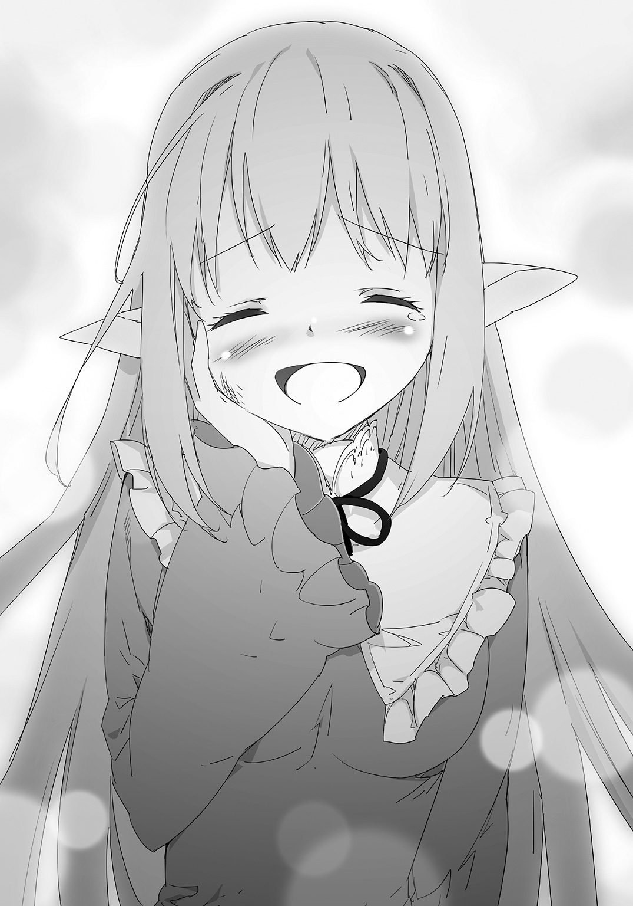
第78話 感謝の気持ち
「それであの新しい奴隷......えっと名前はなんだい？」
執務室の中、おれの前にいるマイヤが聞いてきた。
「ライサって言うらしい」
「らしい？」
「おれも知ったばかりだ」
「ふーん。他人の奴隷はどうでも良かったってことかね」
頷く。
今までは聖夜の奴隷だってことで名前を聞かないようにしてきたが、おれのものになったのをきっかけに聞いた。
彼女の名前はライサ。ちなみにリーシャは前から知ってたらしい。
ライサはビックリするくらい元気になった。
ユーリアに割り当てられた仕事で、朝から晩までリベックを駆けずり回ってるが、仕事をやればやるほど喜んでる。
「顔を見てびっくりしたさね。あんな表情をする子だとは全然思ってなかったからさ」
「それにはおれもビックリだ」
「結局、エターナルスレイブってのはみんなそういうものなのかね」
「かもしれないな」
放っておいたら衰弱死しかねないくらいのふさぎようから一変、奴隷の中でも飛び抜けて元気に働き回ってる。
もっと早くこうしたらよかったな、とおれは思った。
「それはともかく、今日来たのはなんだ？」
「これを持ってきたのさ」
マイヤは手を叩いた。
執務室のドアが開いて、彼女の仲間の女たちが入ってきた。
女たちは持ってる箱をおれとマイヤの間に下ろして、部屋から出ていった。
箱の中を見た。二つ折りの紙とか、封筒とかが山のように入ってる。
「これは？」
「あっちこっちの町から預かってきた、アキト宛ての感謝状さ」
「感謝状？」
二つ折りのを一枚取った。
開けてみると、それはものすごく拙い字で書かれてるものだった。
一目で見てわかる、子供の字だ。
「王様ありがとう、って書いてあるね。こっちは生活が楽になった、感謝してるだね」
マイヤが持ってきた手紙を次々に開けてみた。
どれも似たようなことが書かれてる、感謝の言葉だ。
「こんなものが......」
「それと、こういうのも預かってきた」
マイヤは立ち上がって、箱のうち一番大きなものを開けた。
そこから傘を取り出した。
巨大な、ビーチパラソルよりも一回り大きくて、垂れ幕でもつければテントになりそうなくらいでかい傘だ。
それを執務室の中で開いた。
「これは？」
「ここに人の名前が書いてあるだろ」
「ああ、びっしり書かれてるな」
「これはね、あんたに感謝してる人の署名さ。カザンから預かってきたものでね、この辺は為政者に感謝するとき、連名の傘を贈る風習があるんだとさ」
「へえ......」
「これくらい大きいのはなかなかないね」
マイヤはしみじみと言った。
「こんなものをもらうとは思いもしなかった」
「それだけみんな、あんたに感謝してるのさ。言っとくけど、上辺だけの感謝ならこういうものはまず作られないよ」
そういうものなのか？
いや、でもそうか、そういう場合はありがとうって口で言うだけだし、わざわざこんなどでかいものを作って、みんなで署名をする必要もない。
感謝の気持ちは、単にありがとうって言われるよりもずっと伝わってきた。
世界を再生して、王になって君臨するのが目的だったけど。
純粋に感謝されるってのも、結構嬉しいもんだな。
「感謝か。それで王になったと思ってたんだが」
「それだけじゃ表しきれなかったってことさね」
「そうか。ありがとうマイヤ、届けてくれて」
「いいさ。あたいらは運んだだけだ」
マイヤは肩をすくめた。
「正直、最初はあんたのためにいろいろやろうと思ってたんだけどね」
「いろいろ？」
「悪口を言うやつがいたらとっちめたり、上手く説得したりとか、そういういろいろさね」
マイヤは「上手く」を強調して言った。
「言論統制かよ」
「それがまったく必要なかったのさ。どこに行ってもあんたに感謝する声だらけさ。ま、唯一不満があるとすれば......」
「すれば？」
なんだろ、気になる。
「プシニーがまずいってことくらいさね」
「......あれはまずいよな」
おれとマイヤは笑い合った。
☆
マイヤが帰った後、おれはユーリアを呼び出した。
「お前に任せたい仕事がある」
「うん、何？」
ちびっ子奴隷のユーリアがおれを見つめる。
感情表現が乏しいけど、いつものことだ。
「おれがリーシャと行ってた浜辺、リゾートに作りあげたあそこを国民に開放する」
「みんなに使わせるの？」
「そうだ」
「ただで？」
「いや」
首を振った。
「最低限の衣食住は保証するが、それ以上は自力でやれという今までの方針通りだ」
「じゃあ、金取る？」
「そうだな、ぼったくりにならない程度取れ。その辺はお前に任せる」
「わかった」
「ああ、ちょっと待て」
ユーリアを呼び止めて、考えた。
「最初の客はただで招待してやれ。国王即位記念とかなんとか、適当に名目つけて。それも任せる」
「わかった。招待の相手は？」
「これだ」
マイヤが残していった手紙の山から一通抜き出した。
ちょうどいい具合に、それは子供が書いたものだった。
「たぶん家族がいる、この子の一家を招待しろ」
「うん、わかった」
命令を一通り受け取って、ユーリアは執務室から出ていった。
後はユーリアが上手くやってくれるはずだ。
一人になった執務室の中で、おれは手紙の山と傘を眺めた。
「メニューオープン......解体」
それらにＤＯＲＥＣＡの魔法をかけた――効かなかった。
国民がその手で作ってくれたものという実感が、少しずつ大きくなっていった。
第79話 難民の中に
執務室の中、ユーリアが手元の紙の内容を、チョークで黒板に書き写している。
黒板は二種類の木材、チョークはレイム石という名前の素材で作られた。
レイム石でできたのは白い普通のチョークだが、ニーナの実験でカルスミという鉱物を混ぜたら赤いチョークになることが確認された。
そうして用意した黒板と二色のチョークで、ユーリアはグラフを書いてる。
書き終わって、チョークを置いて、おれを見る。
「これが、今の衣食住の需要」
「ご苦労」
ユーリアをねぎらって、グラフを見た。
おれの基本方針は衣食住の基本を確保すること。今までそれでやってきて、これからもそれで行くつもりだ。
方針は変わらないけど、規模が大きくなったからそれをわかりやすくまとめてくれってユーリアに言うと、彼女はこうして、グラフにしてくれた。
このあたりはさすがユーリアだ。
衣 ■■■□□
食 ■■■■□
住 ■■□□□
黒板に書かれたグラフはものすごくわかりやすく、一目でだいたい把握できた。
「五段階で分けたんだな」
「そう」
「衣と住はいいけど食の需要がやけに高いな。そんなに足りないのか？ プシニーの残量は？」
「それは足りてる。これは、ちょっといいものを食べたい、という需要も入れたもの」
「ちょっといいもの？ 美味いものとか、食後のデザートとかそういうのか？」
「うん。そういう声がある」
「それは考慮しなくていい、純粋に生きるために食べるってのだけにしろ」
嗜好品は作らないのがおれの方針だ。
「それなら、こうなる」
ユーリアはグラフを書き直した。
衣 ■■■□□
食 □□□□□
住 ■■□□□
食が一気に減って、ゼロになった。
うん、最初からこっちなら納得だ。
プシニーは作りやすいから大量に生産してあって、足りないことはないはずだ。
むしろ余り気味のはずだ、そのように作ってるから。
「ってことは需要のある服と住居をもっと作ればいいのか。うん、わかりやすい。そうだ、町ごとの需要も出せるか？」
「ちょっと待って」
ユーリアはそう言って、いつも持ってるメモらしきものをものすごい勢いでめくった。
ちらっとのぞき込む。書かれてるものとか数字とか、見ててちんぷんかんぷんだ。
おれは諦めて、ユーリアの作業が済むのを待った。
ちょっとして、黒板に新しいグラフを書き始めた。
リベックからカザン、ビースクと、領内の町の名前を書いていき、それの下に同じように衣食住のグラフを書いた。
全部の町を書き終わって、チョークを置くユーリア。
「できた」
おれは新しいグラフを見た。
町によって需要が違ってるのがわかる、カザンは食がちょっと必要で、ビースクは住がほとんど必要ない。
それを見てるとどこに何をすればいいのかがわかる。
「よくやった。いい子だ、一枚やる」
頭を撫でてやって、折り紙のメダルをあげた。
ちょっと満足げな顔をしたが、魔力のチャージはなかった。
ユーリアならいつものことで、気にしなかった。
「これを常に最新状況に保つようにしとけ」
「わかった」
頷くユーリア、おれは改めてグラフを見た。
気になる町を見つけた。
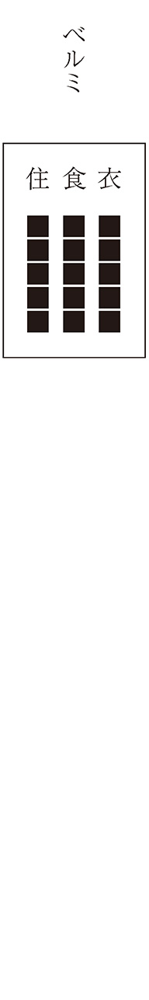
マクシムから解放した民の町は、何故か全項目が振り切っていた。
☆
列車に乗って、ライサと一緒にベルミに向かって移動する。
ＤＯＲＥＣＡでステータスを確認した、そこに記されてる領民の数が８８８８人になっていた。
ぞろ目すげえ......ってならなかった。
「一気に増えたな。この増えた分、全部ベルミの分ってわけか。そりゃ需要も爆発的に増えるわな」
「それでどうするの？」
ライサが聞く。
「ついたらまずはプシニーの生産。作り方はわかってるな？」
「これで土を掘って入れる、よね」
「そうだ。魔力消費が高いけど、千個単位の魔法陣を二つ張る。それで当面は凌げるはずだ。ライサはそれをとにかく作る、作った後は配る。ユーリアの話だと新しい奴らはほとんど難民化してるから、どこに配るのかわかりやすくなってるはずだ」
「うん」
「どうしてもわからなかったら聞きに来い」
「あな――ご主人様は？」
言い換えたライサ、おれの奴隷としてまだ慣れてないみたいだ。
それを無視して、質問に答える。
「他に必要なものを作ってる。やることは多いぞ」
おれは気合を入れた。
全需要ＭＡＸ。かなりの大仕事になりそうだ。
☆
「お待ちしておりました！」
ベルミについた。列車から降りると、待ち構えてた男がおれたちを出迎えた。
「少し待て」
そいつを待たせて、イリヤの泉の範囲ギリギリ、町の外周に魔法陣を張った。
千個のプシニーの魔法陣を、とりあえず二つ。
ライサに目配せして、さっきの命令通り作らせた。
そうして男に向き直って、聞く。
「お前はヴァルラムか」
「はい」
男が頷く。
ユーリアからあらかじめ聞いてる。彼の名前はヴァルラム、この町の町長だ。
最初の頃はマイヤがベルミの長を兼任してたけど、一度復興が終わって、町が軌道に乗ったから、町の中から推薦してもらったこの男を町長にした。
「話は聞いた、人間が一気に増えたらしいな」
「はい。どこから聞きつけたのか、難民が一気にやってきて。我々もちょっと前まではそうだし、陛下の方針もあって受け入れたけど、それが増えに増えて、パンクするところだったのです」
「そうか。増えた分は？」
「約六〇〇〇人ってところです」
「元からいるのは？」
「三〇〇〇人くらいです」
「そうか」
町の住民に対して倍近い難民か。
ひさしを貸して母屋を取られるどころか、母屋ごとつぶれるパターンだ。
......ま、普通ならな。
「とりあえずあれで今日の分の飯は確保できる」
親指で背後のライサを指す。
「食わせたら働ける男を集めろ。いろいろ作るから、人手は必要だ」
おれはそう言って、どこに作るのかを見るため、町の中に入っていった。
☆
町の外れに木の家の魔法陣を一〇〇個出した。
とりあえず一〇〇で止めた、人数分には届いてない。
魔力は足りてる、問題は素材だ。
ヴァルラムから聞いた話だと、ベルミに備蓄されてる素材はその一〇〇で尽きてしまう。
復興したばかりで備蓄が追いついてないってことだから、そこは仕方ない。
おれは町の中心部に戻ってきた。
そこにライサがいた。
彼女は作ったばかりのプシニーを難民に配っている。
目が合った、手招きして呼び寄せた。
「なんかありましたか」
「ライサ、リベックにちょっと行ってこい」
「リベックに？ どうして」
「素材が足りない。ユーリアに言って、あっちの備蓄をこっちに送るように伝えろ」
「えっと......」
「どうした、命令にわからないところがあったのか？」
「ううん、それは大丈夫。それ、多分もうすぐ着く」
「うん？」
どういうことだ？
「こっちの物資が足りないから、後から送るって、出発するときに教えてくれた」
「なるほど、さすがユーリアだ」
どうやらベルミの台所事情も把握してるみたいだな。
ってことはそれを待ってればいいんだな。
おれは一息ついて、まわりの状況を観察した。
町の中心部、そこに難民たちが集まってきて、作りたてのプシニーを食ってる。
既に一部の人間が食い終わって、暇そうにしてる。
「ライサ」
「はい」
「手が空いてる奴らを集めろ。まずは三〇〇人だ。町の外れに魔法陣を張ってある、そいつらをつれて家を完成させてこい」
「わかった」
ライサが動ける男たちを連れていった。
最初は文句言う奴もいたが、作った家は自分のもの、って説明したらあっという間に定員分の人数が集まった。
そいつらを見送った。さて、次は服を作らないとな。
「――！」
こんな広場じゃ作れないからと空いてる場所に移動しようとしたが、歩きだしてすぐに足を止めた。
息を飲んで、パッと振り向いた。
難民の中に、知ってる顔を見つけた気がした。
かつては自信満々で印象的な顔。
聖夜だ。
難民たちをじっと見つめた。聖夜の姿を探した。
「いない......」
探したが、見つからなかった。
おれは諦めて、服を作ろうと場所を移動した。
それでも考えてしまう。聖夜のことを。
「見間違いだったのか......いや。メニューオープン」
ＤＯＲＥＣＡでメニューを開いて、ステータスを確認。
領民の数――８８８７人。
ぞろ目じゃなくなってた、一人減っていた。
「もう町を出たのか、それとも......」
何となく、難民の中にいたのが聖夜だと、確信を持ったのだった。
第80話 平和の象徴
おれはライサを執務室に呼び出して、彼女の前で魔法陣を張った。
奴隷カード（ノーマル）、奴隷のＤＮＡを素材に作るアイテムだ。
「ここに髪の毛を一本入れてみろ」
「はい」
不思議がりながらも、言われた通り髪の毛を一本抜いて、魔法陣に入れた。
魔法の光が髪の毛を包み込んで、カードができあがった。
他の奴隷たちも持ってるヤツだ。
「ほれ」
それを取って、ライサに差し出す。
「これは......ＤＯＲＥＣＡ？」
「奴隷カードっていう。奴隷全員に渡してるやつだ。基本はＤＯＲＥＣＡと同じように使えるはずだが、詳しい話は四人のうちの誰かに聞け」
「......」
ライサは受け取らなかった。奴隷カードを見つめて、なにやら迷ってる様子。
「どうした」
「もらって......いいんですか？」
「いらないのか？」
「いえ、こんなわたしが......みんなと同じものをもらうなんて――」
「ほれ」
問答無用で奴隷カードを押しつけた。
「こんなわたし」っていうのは多分聖夜の奴隷だったことだろう。
それは気にしない、むしろだからこそ奴隷カードを渡した。
ベルミで聖夜らしき男を見て、渡したくなった。
渡したくなくなった――目の前の奴隷を。
「ありがとうございます」
ライサは奴隷カードを大事そうに抱えた。
奴隷カードが淡く光って、そして。
――魔力がチャージされます。
「うん？」
「どうしたんですか？」
「いやいま......なんか違うのが聞こえたんだ」
「？」
首を傾げるライサ。
彼女以上におれは状況に困った。
魔力チャージ
いつもならチャージされた数字が脳内に聞こえるんだが、何故か今回、その数字がなかった。
「メニューオープン」
どういうことなのかと思って、ＤＯＲＥＣＡで確認した。
魔力の数字を見る。奴隷カードを作る直前とそんなに変わってない。
代わりに増え続けていた。
だいたい一秒ごとに１というペースで増えてる。
ＲＰＧで言うところの「徐々に回復」ってのと似てる。
メニューを見て、ライサを見た。
彼女が原因なのか？
......。
たぶんそうだろう。
奴隷カードを大事そうに抱えてる姿を見てると、そうなのかもしれないって気がしてくる。
確信すらある。
ライサはそういう奴隷なのかもしれない。
徐々に魔力が増えていく、という未知の出来事をおれは割とあっさり納得した。
今までの奴隷が皆、チャージの仕方が違うっていう経験から、おれはすんなり目の前の状況を受け入れた。
「ありがとうございます、ご主人様」
ライサの「ご主人様」はだいぶ自然になってきてた。
ドアが開いて、奴隷たちが姿を見せる。
リーシャ、ミラ、ユーリア、リリヤ。
「お呼びですかご主人様」
リーシャがそう言いながら入ってくる。
カードだけじゃなく、ライサに首輪やドレスも作ろうと思って、その手伝いに奴隷たちを呼んだのだ。
他の三人もぞろぞろ入ってくる。
全員が――奴隷が一室に勢揃いした、その時。
カードが光りだした。
それぞれが持つ――ライサがまだ手に持って、他の奴隷たちがポケットとかにしまっていた奴隷カードが一斉に光りだした。
五枚のカードの光、室内がまぶしくて目を開けてられないほどの強い光だ。
「これって......もしかしてカードが進化するの？」
「それか新しく作れるものが増えるんじゃない？」
リーシャとミラが言う。
おれは知ってる、奴隷たちも知ってる。
カードがこういうふうに光ってるときは、大抵何かが増えたり、ランクがアップするときの光だ。
「ご主人様の、光ってない」
「あら、本当ですの」
ユーリアとリリヤが言う。
おれは自分のＤＯＲＥＣＡを見た。
二人が言うとおり、おれのだけ光ってなかった。
五枚の奴隷カードがまぶしいくらいに光ってるのに、おれのはウンともスンとも言わなかった。
こんなの初めてだ。
やがて、奴隷カードの光が収まる。
「何があったか確認してみろ」
おれが命令して、奴隷たちが一斉にカードで確認した。
「ご主人様、作れるものが一つ増えてます」
「どんなのだ？」
その間おれもＤＯＲＥＣＡを確認したが、こっちはやっぱり何も変わってない。
「えっと......」
リーシャが口籠もる。奴隷たちが互いに目を見交わす。
なんだ？ 言いにくいものなのか？
それがなんなのか気になった。
☆
次の日。
リベックの中心部、町広場。
奴隷が全員集まっている。
五人は同時に奴隷カードを出して、一つの巨大な魔法陣を張った。
それぞれ立ってるポジションを頂点に、五芒星がベースになった魔法陣。
それが様々な矢印を出して、あっちこっちにすっ飛んでる。
奴隷たちが動きだす。
それぞれ矢印を追ってどこかに行ってしまった。
ちなみにおれは何もしてない。何を作れるのかさえも教えてもらえなかった。
全員が口を揃えて「できてからの楽しみ」だとはぐらかした。
「ま、別にいいけど」
むしろ楽しみだ。
奴隷カードにしかないもの、奴隷たちが何を作ってくれるのか楽しみだった。
ちなみに魔力の消費はなかった。
今までの経験だと魔力を消費しないものは結構面白いものになるから、ますます楽しみになった。
奴隷たちが様々な素材を運んできて、魔法陣に入れた。
「ご主人様」
ユーリアがおれのところにやってきた。
ちょっと前にマイヤが持ってきた、民の連名傘を抱えてる。
小柄なユーリアが持つには大きすぎるので、ちょっとふらついてる。
「これ、使ってもいい？」
よく見ると、傘は光ってて、魔法陣から出てる矢印がそれを指してる。
「なるほど、それが素材か」
「うん」
ユーリアは申し訳なさそうな顔をした。
「そんな顔をするな」
「でも――民がご主人様を思う気持ちそのもの」
「気にするな、どうせ飾ってるだけのものだ。魔法陣が要求する素材だってんなら遠慮なく使え」
「うん――」
「それと」
「？」
「これからこういうのはお前の判断で決めていい」
こういうの、というのはあえて言わない。
ユーリアならわかるはずだ。
案の定、彼女はすぐに理解して、それで驚いた。
「いい、の？」
「お前なら任せられる」
それくらいおれはユーリアを信用してる。
十秒くらい驚いたあと、ユーリアがおずおずと頷く。
――魔力が１００００００チャージされました。
「頑張る」
無表情で連名傘を抱えて、小走りで去っていった。
ユーリアらしい反応だ。
おれたちがそんなやりとりしてる間、素材が全部集まった。
ユーリアが持っていった連名傘が最後の素材になった。
いつの間にか民が集まって、遠巻きに見守ってる。
何ができるのかわくわく、って表情をみんなしてる。
「ご主人様」
リーシャがおれを呼んだ。奴隷たちのもとに向かった。
「それで準備は済んだのか」
「はい！」
頷くリーシャ。奴隷たちが全員、民以上のわくわく顔でおれを見ている。
ユーリア一人じゃ大変だった連名傘を、全員で力を合わせて持ってる。
なんとなく、求められてることがわかった。
「やれ」
そう言うと、全員が一斉に頷き、ユーリアが傘を魔法陣の中に入れた。
それまでに投入した大量の素材を魔法陣の光が包み込んだ。
いつも通りの光景。それでできたのは――銅像だった。
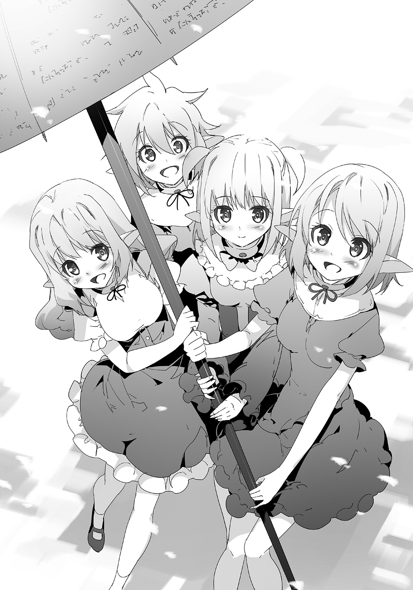
「......おれ？」
さらに言うとそれはおれの銅像だった。
王冠をかぶって、マントをなびかせ、ポーズをとってるおれの銅像。
「こんなのだったのか」
まさか銅像ができるとは思わなかった。
「わたしたちもビックリしました」
「うん！ でもこれは絶対作らないとだめって思ったの」
「それよりも――感じる」
「はいですの。イリヤの泉よりも強くて温かい安心感ですの」
奴隷たちが口々に言った。
おれも感じた、銅像が完成した瞬間に感じた。
魔物の侵入を拒むイリヤの泉、それができた時に感じた時よりも強い安堵を覚えた。
詳しい効果はわからない、わかってるのは、これがイリヤの泉の上位互換だろうってこと。
集まった民から歓声が上がった。
銅像の下、奴隷も、民も。
全員が笑顔に包まれていた。
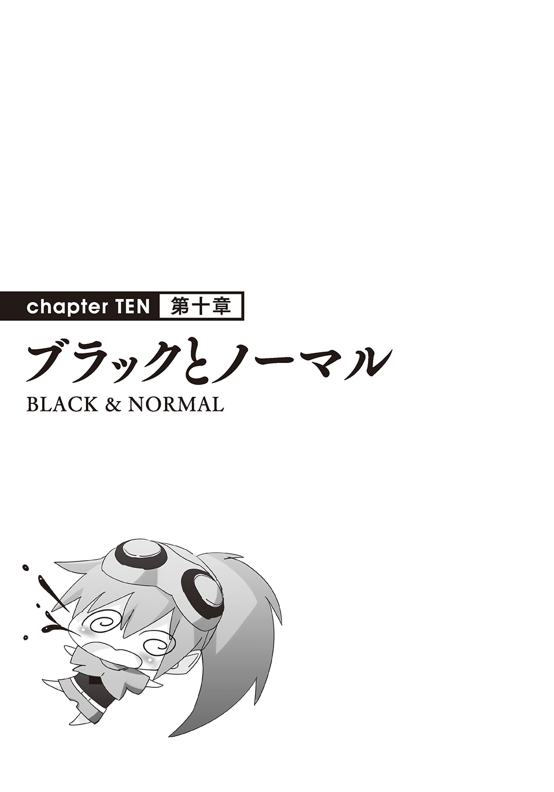
第81話 援助の要請
「いくつか国ができそう」
執務室の中、ユーリアが報告してきた。
「それはおれの町の話か？」
「ううん、ご主人様と関係ないところの話」
「そうか」
反乱が起きるのかと思ったが、そうじゃなかった。
「まあそういうこともあるだろうな」
マラートとかマクシムのことを思い出した。
あんなふうに人間をまとめ上げるカリスマ性を持った奴が他にもいるだろう。
それが搾取とか略奪とかじゃなくて、ちゃんと領地を運営していくつもりのある人間がやれば、いずれは国になっていくのが当然の流れ。
「マイヤが言ってた、最近、シュレービジュが他でも狩られてるって」
「なるほど、サルを倒せば人間に戻せることが知れ渡ってるのか」
「どうする？」
「うん？ 別にどうもしないぞ。いいことだろ？ それでもっと多くが人間に戻されれば」
「わかった、何もしないでおく」
おれがなんか言ったら何かをするつもりだったのか。
ユーリアの報告を受けつつ、黒板の需要グラフを見る。
ちょっと前に難民が流れ込んで需要が爆増したベルミもだいぶ落ち着いて、他の町と同じ水準になった。
国の運営は順調。
「情報だけは集めとけよ」
おれが命令すると、ユーリアは静かに頷いた。
☆
次の日、使者がやってきた。
ユーリアから聞いて、宮殿に入るのを許可して、応接間に通す。
そうして応接間にやってきた使者におれは驚いた。
そこにいたのは女だった。
銀色の髪、尖った耳、褐色の肌。
美しくも好戦的な目鼻立ち。全身から醸し出される雰囲気。
「ダークエルフ？」
思わず声に出してしまった。
エターナルスレイブがまるっきりエルフなら、目の前にいるその女はどう見てもダークエルフだ。
女は立ち上がり、ぺこりと頭を下げた。
「初にお目にかかる、国王陛下。わたしの名はスベトラーナという。以後、お見知りおきを」
「あ、ああ。よろしく」
ダークエルフっぽい女に驚き、ちょっとうろたえてしまった。
「ま、まあ、座ってくれ」
「失礼する」
テーブルを挟んで、向き直って座った。
「失礼します」
ドアが開いて、リーシャが入ってきた。
おれとスベトラーナにお茶を出す。
「......」
リーシャはじろじろとスベトラーナを見た。
興味があるような、それでいて怯えてるような。
そんな顔だ。
リーシャが出ていったあと、彼女に謝った。
「すまない、奴隷のしつけがなってなかった」
「いや、見られるのは当然だ。かつてのわたしもそうしただろう」
「うん？ どういうことだ」
なんか意味深な言い方をされた。
「もしかしてご存じないのか？ 我々リグレットは元々エターナルスレイブであることを」
「......へえ」
驚きを抑えるので精一杯だった。
「初耳だ。もっと詳しく聞いても？」
「有名な話だ」
遠回しに「気にするな」と前置きをされた。
「エターナルスレイブは主に仕える生き物。仕える主に巡り会えればよし、さもなくばある程度の歳になると変化する。このような姿にな」
「そうだったのか。つまりあんた、元はエターナルスレイブなのか」
「そうだ。こうして変化した後は『リグレット』と呼ばれる」
話を頭の中で再整理した。
エルフとして生まれて、ご主人様がいないまま年を取ってしまうとダークエルフになる訳か。
......なんというか、見た目からして「堕ちた」って感じだな。
「すまなかった、いやなことを聞いて」
「いや、構わない」
スベトラーナは首を振った。
毅然とした顔は本当に気にしてないように見える。
ならその話には触れないことにした。
奴隷が五人もいるんだ、後で彼女たちからゆっくり聞けばいい。
「それより、おれに会いに来たのは？」
「我々の女王から親書を預かってきた」
そう言って、懐から封筒を取り出した。
蠟の上に印が押されてちゃんと封がされてる、やたらと丁重なものだ。
「女王。国ができたのか」
「はい」
はっきりと頷く。
ユーリアの話だとできそうだったが、もうできてるみたいだな。
あとでいろいろ調べさせよう。
「そうか。それで用件は」
「我々は、貴国との交易を望んでいる」
スベトラーナはまっすぐをおれを見た。
その目は懇願に近かった。
まるで「助けてくれ！」と、言われてるように見えた。
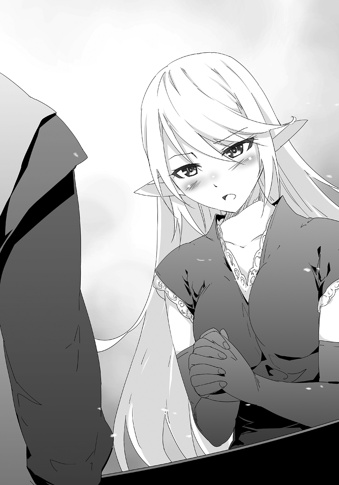
第82話 支援or 侵略？
「ふう、これで三匹目、と」
町から相当離れた荒野、ドラゴンの巨体が崩れ落ちていく。
真・エターナルスレイブから、念のために連れてきたユーリアを解放する。
「す、すごい......」
背後からスベトラーナの驚嘆する声が聞こえてきた。
念のため、というのは彼女がいたからだ。どうしてもついてくると聞かないから、いざって時、なんとかできるようにユーリアを連れてきた。
ユーリアが真・エターナルスレイブの中にいればいろいろと先読みできる。
まわりの人間を守るのに適した能力だ。
「それで、これをどうするのだ？」
「待ってろ」
ドラゴンを解体して、竜の血を手に入れる。
ＤＯＲＥＣＡを取り出して、魔法陣を張って、竜の血を投入。
すると、札束ができた。
単位を「エン」にした、おれの国で流通してるお金だ。
「すごい......」
またまた驚嘆するスベトラーナ。
「そんなにいちいち驚いてたらキリがないぞ」
「いや、しかし」
「それよりも、ほれ」
札束を一つ取って、彼女に放り投げる。
慌ててキャッチする。
「それが欲しかったんだろ」
「あ、ああ」
頷くスベトラーナ。
「しかし......これは、うーん」
スベトラーナは困っていた。
「どうした」
「頼んでおいてなんだが、これはものすごく貴重なものではないのか？ その、ドラゴンで作るのだから」
「なるほど」
スベトラーナの言いたいことはわかった。
彼女が持ってきた女王の親書は交易を頼むものだが、その理由は国内の経済事情にあった。
どうやら国を作ったあと貨幣を造ったらしい。
それも中世のような、銅貨、銀貨、金貨という形でだ。
それを作ったのはいいが、そもそも再生途上のこの世界で、普通の手段で硬貨を作るとかなりのコストがつく。
銅貨でさえ――一枚あたりおれが元いた世界での一万円以上の価値を持つ。
大口の取引にしか使われなくて、ほとんどが国民の家に眠ったまま。
高いコストを払って採掘して、鋳造までしたのに使いものにならない。流通させるにはさらにコストをかけて大量に生産しないといけない。
そんな余力は国のどこにもない。
そこで聞きつけたのが、おれの国のお金だ。
今、世界で唯一潤沢に流通して、貨幣経済が成り立ってるのがおれの国。
「気にするな、見ての通りドラゴンは問題なく狩れる。それよりもこれであんたらから物を買えばいいんだな」
「そうだ......」
交易というのも方便で、自分の国におれの「エン」を導入したい。
そういう「懇願」だ。
「ありがとう。助かる」
「交易だろ。こっちが金を出す、そっちは品物をくれる。それだけの話だ」
「ああ、ありがとう」
それでもお礼を言われる。
☆
翌日、リベックの宮殿、執務室の中。
リリヤが部屋に入ってきて、報告をした。
「おにーちゃん、あの女が帰ったですの」
「スベトラーナか」
「はいですの、おにーちゃんの命令通り親衛隊を護衛につけましたの」
「それでいい。一億エン渡したからな、何かあったら大変だ」
リリヤがおれをじっと見つめてくる。
「なんだ？」
「おにーちゃんはあのお金で何を買うつもりですの？」
「まだ決まってないな」
「決まってないんですの？ なのに前払いしちゃうなんて......正気の沙汰じゃありませんの」
「そう思うか？」
「はいですの。おにーちゃんはお人好しですの」
「......そうでもないぞ」
「はいですの？」
きょとんと小首を傾げるリリヤ。
彼女はわかっていないようだ、国にとって、貨幣を自前で生産できないのがどれだけまずいことなのかを。
その気になれば実質侵略することもできる。
というか......そうなればいいかなと思ってる。
「なんでもない。まっ、食糧か衣類を輸入すればいいと思ってる」
「衣食住のうちの、衣と食の充実ですの？ なるほどいつものおにーちゃんですの。少しは安心しましたの」
「それか」
「それか？」
「金で侵略するか、国ごと買ってしまうか、という選択肢もあるな」
リリヤは一瞬きょとんとしてから。
「おにーちゃんの国民になった方が向こうの人も幸せですの！ うん、まちがいないの」
おれが苦笑いするほど、リリヤはそれに食いついてきた。
第83話 わたしたちは水が足りない
「誰かいないか」
執務室から外に呼びかけた。
奴隷五人のうち誰かがやってくるかと待ってたが、一向に誰も来ない。
「おーい、誰もいないのか？」
もう一度呼んでみた、やっぱり誰も来ない。
珍しいな。普段は呼べば誰かしら来るんだが。
ドアを開けて、廊下に出た。
もう一度呼んだ、返事はやっぱりない。
......。
いや、気配は感じる。
一人だけだけど、宮殿の中に確かに奴隷の気配を感じる。
「寝てるのか？」
やってほしい仕事があるから、おれはそいつを探しに行った。
気配を頼りに廊下を進む。
やってきたのは建物の端っこ、太陽の光がほとんど届かない薄暗いところだった。
そこに気配を感じる、誰かがもそもそやってるようだ。
目をこらして、じっと見つめる。
「......ライサか」
「――！」
その奴隷はびくっとした。
振り向く、やっぱりライサだ。
奴隷の中で一人だけまだ首輪をつけてない。
「んぐ――」
こっちを振り向いたかと思えば、ライサはいきなり苦しみだした。
「おいどうしたっ」
喉を押さえて、胸をトントンと叩く。
何かが喉に詰まった様子だ。
よく見ると、彼女の足元にプシニーが落ちてる。
それでか。
「メニューオープン」
取りに行くよりもこの場で作った。
水はないから、ジュースを魔力で緊急生産。できたそれをライサに渡す。
受け取ったライサ、苦しそうな顔のまま迷う。
「いいから飲め」
強めに命令してやると、ようやくおずおずとジュースを飲んだ。
「――ぷはぁ！」
喉に詰まったのを流し込んで、ようやく人心地って感じのライサ。
「ごめんなさい......」
「かまわん。というかこっちがいきなり背後から声をかけたんだからな。お前は悪くない。ていうか......」
落ち着いてから、改めて状況を見た。
ライサの足元にプシニーが転がってるが、よく見れば食べかけの一つの他に、四つが転がってる。
「なんでそんなにあるんだ？」
「......」
ライサの顔が、ゆでた蛸のように一気に赤くなった。
恥ずかしいのか？ ......もしや。
「た、食べるから」
「......全部か？」
「はい......」
「五つもか？」
「いいえ」
申し訳なさそうな顔のまま首を横に振った。
「もう......半分食べてます」
「一〇個もか!?」
盛大に驚くおれ、それでライサはますますうつむいてしまった。
プシニー。
魔力で作られるものの中でもっとも代表的なもの、おれの中じゃ戦略物資認定してるほどのものだ。
味がまったくしないほどまずいが、超低コストで生産できる上、一個で人間一人の一食分をまかなえるほど腹が膨れるのが特徴だ。
少なくとも、今まで食べて「まずい！」っていう人はいても、「足りない」っていうのはいなかった。
「ごめんなさい、ご主人様のカードで勝手に作って食べてました」
「うん？ ああ、それは別にいい」
奴隷カードで自分で作ったのか。
そんなの、魔力10しか消費してないし、まったく問題はない。
「......とりあえず、それ持ってついてこい」
「......はい」
歩きだすおれ、ライサは残ったプシニーを持ってついてきた。
来た道を引き返して、応接室に入る。ソファーに座って、ライサに言う。
「そこに座れよ」
無言でおれの向かいに座るライサ。
悪いことをして見つかった子供のような顔をしてる。
「メニューオープン」
ジュースをもう一回作って、テーブルの上に置く。
「ほら」
「え？」
「それ飲みながらゆっくり食え、喉詰まらせないように気をつけろ」
「いいんですか？」
「いいから食え」
ライサはおずおずと頷き、食べかけのプシニーに口をつけた。
ジュースを飲もうとしない、遠慮してる。
「ジュースも飲め」
「でも......」
「奴隷なのに命令に逆らうのか？ んん？」
ちょっと強い口調で言った。
もちろん怒ってはない、こんなので怒る訳がない。
むしろちょっと楽しい、遠慮する奴隷を無理矢理愛でてやることに楽しさを覚える。
案の定、「命令」って言われたライサはさっきとは違う表情をした。
「は、はい！」
と言うと、慌ててジュースを取って、一気に飲み干した。
おれは笑いをこらえた。
一気に飲んでしまったんじゃ意味ないだろ。
「飲みました」
「......残りも食べろよ」
「は、はい！ ――んぐっ！」
慌てて食べる、案の定また喉を詰まらせた。
ＤＯＲＥＣＡを出して、三杯目のジュースを作る。
それをライサの前に置いてやる。
ためらいは一瞬、今度は言われる前に取って、飲んだ。
「ぷはぁ......」
落ち着くライサ。
プシニーとジュース、そしておれ。交互に見比べて、泣きそうな顔をした。
やばい、なんか楽しい。
更にＤＯＲＥＣＡで、魔法陣を張った。
「ライサ、これを今すぐ作れ」
「はい！」
ライサは立ち上がり、慌てて駆け出した。
応接室から出ていく瞬間にちらっと見えた横顔はほっとしたような、嬉しそうなものだった。
エターナルスレイブによくある、命令されて嬉しいってヤツだ。
しばらくそこで待った、ライサが素材を取ってきた。
それを魔法陣に入れる――物ができあがる。
「これって......ケーキ？」
「ああ」
ケーキがテーブルを埋め尽くした。ちょっとしたケーキバイキング状態だ。
きょとんとするライサ。
おれは彼女の食べかけのプシニーを取り上げて、ケーキを指した。
「ほら、こっちを食えよ」
「で、でも」
「ご主人様の命令は？」
「は、はい！」
ライサは慌てて、座って、ケーキを食べだした。
ケーキはかなりの量だ。
残ったプシニーは四つ、ケーキは四人前作った。
ライサはそれを食べながら、ちらっちらっとおれのことを気にしてる。
申し訳なさそうな顔だ。
おれはＤＯＲＥＣＡを出して、ステータスを確認。
普段は一秒につき１チャージしていく魔力が、一秒ごとに３くらいのペースになった。
よしよし、喜んでるな。
表情は申し訳なさそうだけど、しっかり嬉しがってるみたいだ。
奴隷は愛でるもの。彼女の喜ぶポイントが少しは見えてきたみたいだ。
「あっ、ここにいたんだご主人様！」
ドアを開けてミラが入ってくる。
焦った顔だ。
「ライサは食ってろ。どうした」
立ち上がって、ミラに向かって言う。
「火事です！ 町の方で火事が」
「火事だと？」
確かに大変だ。
「状況は？」
「えっと、住んでる人は逃げたんだけど、家が密集しすぎてるところで、まわりに燃え移りそうな勢いなの。どうしようご主人様」
「そうだな......おれがお前を真・エターナルスレイブに取り込んで――ああいや」
水の剣の力を使おうと思ったが、別の方法を思いついた。
「お前が消してこい」
「え？ でもわたし――」
「『解体』を使え。住民は全て避難してるな？ 燃えてる建物のまわりも」
「うん！」
「ならそのまわりを解体したらそれ以上の延焼はなくなる。それで火が消えるはずだ。消えたら作り直せ」
「そっか！ うん、行ってくる！」
奴隷カードを駆使した破壊消火を理解したミラが、やってきた時と同じ勢いで走り出した。
火事か、今回はそのやり方でいいけど、なんか違う方法をこれから考えていかないとな。
おれはそんなことを考えつつ、振り向いた。
そこに見えた光景に言葉を失う。
ケーキを完食したライサが、なんとまた喉を詰まらせて、物音を立てないように胸をトントン叩いていた。
手に持ってるのはプシニー。
「おいおい......」
ジュースを緊急生産して、渡す。
ライサは受け取って、飲む。一息つく。
「ご、ごめんなさい！」
「いいけど、足りなかったのか？」
「そうじゃないんですけど......」
もじもじして、口籠もるライサ。
じろっと睨んでやると、観念したように話しだす。
「ご飯は別腹だから......」
「......ぷっ」
こらえず、吹き出した。
五人目の奴隷、ライサ。どうやら結構面白い奴のようだ。
第84話 残り物には福がある
火事の跡地、そこを復旧するためにライサを連れてきた。
中心にある数軒の建物が真っ黒焦げになってて、そのまわりがドーナッツのようにぽっかりと空いてる。
ミラがおれの命令通り、まわりの建物を奴隷カードの『解体』で壊したから、被害は最小限に食い止められたようだ。
「ご主人様」
「ああ。やってこい」
ライサは頷き、走っていった。
そこで待っていた住民たちから話を聞いて、決まった場所に魔法陣を張っていく。
「おっ？」
魔法陣を張ったそばからすぐに素材が投入された。
用意したのは奴隷たちじゃない、そこにいる住民だ。
どうやら前もって準備をしてあったらしい。
「ご主人様！」
ライサと入れ替わりにミラが戻ってきた。
「状況を報告してくれ」
「うん！ 火事になったのはあの真ん中の家、あそこから火が出て、まわりの三軒に燃え移った。それ以外はご主人様の命令通りにやったら燃えるものがなくなって火が消えたよ」
「そうか。怪我人とかは？」
「なかった。みんなすぐに逃げ出したみたい」
「そうか」
それは良かった。
まあ、今のところ建ててる家の構造がシンプルだから、よほどのことでもない限り逃げられるだろ。
「で、出火の原因は？」
「えっ？ うんと......」
ミラの目が泳いだ。
しばし迷って、それから答えた。
「ごめんなさい、それはわからない」
「いや、いい」
シュンとするミラの頭を撫でてやった。
そういうのは俺がいた世界でいう警察とか消防署とかの仕事だろう、専門知識が必要なものだ。
奴隷にそれを期待するのは酷ってもんだ。
「しかし......」
「どうしたんですかご主人様」
「いや、火事が起こることを考えると、やっぱり防災面も考えなきゃって思ってな。毎回毎回、こんなふうにまわりをぶっ壊すわけにもいかないだろ」
「そうなの？」
「例えばだけど、火事が起こった時、おれも奴隷の誰も町の中にいなかったらどうする？」
「あっ......」
ミラははっとした。おれが言った状況を想像できたみたいだ。
「すぐに壊せない分、延焼するだろうな」
「そうなったら......大変だね！」
周囲を見回すミラ。
この辺りは建物が密集してる。
火事が起きて、即断でまわりを破壊しなかったら一帯丸焼けになる可能性が非常に高い。
「じゃあどうするの？」
「お前がいるじゃないか」
「え？」
ミラは赤面した。
「わ、わたし？」
「そうだ」
ミラの真っ正面に立って、肩をつかんで、目をのぞき込む。
ますます赤面した。
「ミラ、お前にやってほしいことがある」
「――ッ、任せて！ ご主人様のためなら何でもやる」
「そうか。じゃあ今からニーナのところに行ってくれ」
「......え」
赤面が一瞬にして青ざめた。
見ててちょっとかわいそうになったが、後でたっぷり可愛がってやることで帳尻を合わせることにしよう。
おれは心を鬼にしてさらに言った。
「ニーナのところに行って、火事のことを話して、それに使えそうなものを開発してこい。魔力は２００万までなら使っていい」
開発費としてはかなり高くつくが、必要経費だ。
「やれるな」
「......」
「ミラ？」
答えないミラの顔をのぞき込む。
「どうしても行かないとだめ？」
「ああ、どうしてもだ」
「うう......」
涙目になるミラ。
命令には絶対服従、ご主人様のために働くなら過労ですら名誉に思うエターナルスレイブにしてはかなり珍しい反応だ。
そんなにいやなのか。
後でご褒美がわりに愛でてやればいいと思ったが、ここまでだとちょっと考えてしまう。
「ご主人様」
悩んでるうちにライサが戻ってきた。
「おう、どうした」
「仕事終わりました」
ライサ越しに見る。
彼女が言ったとおり魔法陣はあっちこっちに張られてて、そこに住民たちが素材を運び入れてるところだ。
「ご苦労だった」
「他に何かすることあります？」
さっそく次の仕事を要求するライサ。これでこそエターナルスレイブらしい。
......そうだな。
ミラが怯えてるし、ニーナのところにはライサを行かせるとするか。
「悪いけどライサ、今から言うところに――」
「だめ！」
ミラが大声を出した。
「ミラ？」
「わたしが行く！」
「いやなんじゃないのか？」
「いやだけど......正直すごくいやだけど！ めちゃくちゃとんでもなくいやでいやでたまらないけど」
「そんなにいやなのか」
思いっきり力説された。
「でもご主人様のためならなんでもやる！ 火の中水の中、地獄の中へでも、だもん！」
「地獄クラスなのか」
そこまでいやなのか、って思ったが、本人が行きたいって言うのなら仕方ない。
「わかった、じゃあミラ行ってくれ――」
「あのっ！」
言いかけたところに、今度はライサが割って入ってきた。
「どこに行くのかわからないですけど......危ないところなんですよね」
「危ないところっていうか」
危ない人のところだな。
「なら、わたしが行きます！」
「え？」
「ご主人様によくしてもらったご恩を返させてください！」
「恩ってほどのことはしてないが」
「ご主人様、わたしが行くから」
「いえ、わたしに行かせてください」
ミラとライサ、二人してわたしがわたしが、って言ってくる。
「ご主人様のためならなんでもします！」
「わたしも、どこへでも行きます！」
二人とも譲らなかった。
その健気さにおれは感動した。
「わかった。ミラ、お前が行ってくれ」
「はい！」
ミラは嬉しそうに頷き、ぱっと駆け出した。
「......」
一方、命令してもらえなかったライサは悲しそうな顔をした。
「そんな顔をするな、お前には違う仕事がある。重要な仕事だ」
「本当ですか!?」
ぱあ、と表情が明るくなった。
「ああ本当だ。協力してくれるな」
「はい！」
満面の笑みで頷くライサ。
噓じゃない、本当に重要な仕事だ。
「じゃあ、とりあえず飯に行くか」
「え？」
きょとんとするライサ。
ミラとニーナ、火災対策に有効な何かを開発するために大量の魔力を消費する。
その魔力の補充のために、おれは、ライサを全力で愛でることにした。
そう、許可を出した２００万の魔力分、ライサをとことん可愛がると決めたのだった。
第85話 鼻血の錬金術師
リベックの町、最初に作った公園。
そこに、待ち合わせの相手が既に来ていた。
「会いたかったです王様プ――」
おれの顔を見るなり小走りでやってきたニーナが途中で鼻血を吹いて、そのままの勢いでヘッドスライディングした。
いきなりのことで反応できなかった。
「えっと......」
「らいひょうふれふおうはま！」
「いや大丈夫じゃないだろ......とりあえずこれ飲んどけ」
常備してる万能薬をニーナに渡した。
受け取って、ごくごくと一気に飲み干す。
怪我や病気をあっという間に直してしまう魔法アイテム、万能薬。
それはもちろんニーナにも効いた。
「ありがとうございまプ――――」
直った直後からまた鼻血を吹く、クジラの潮吹きの如く大量に赤い血をまき散らした。
「ごめんなさい王様、ボク王様と会うの久しぶりだったからつい」
「いいからいいから、とりあえず落ち着け、な」
「うん！」
また鼻血を吹いた、わかってない。
「とりあえず深呼吸してみろ」
「わかりました！」
スーハースーハーと深呼吸した。
「......落ち着いたか」
「はい！」
全然落ち着いてなさそうだが、鼻血は止まったし、とりあえず良しとするか。
「それで、ミラから話を聞いたけど、消火用のアイテムを開発したみたいだな」
「はい！」
「どんなのだ？」
「これです！」
ニーナからそれを受け取った。
小さな四角い箱、その上に乗っかってる丸くて赤いボタン。
そして、どくろマーク。
「......これは？」
「それが消火用のアイテムです」
「いやこれってどう見ても」
......アレだよな。
「これをこうするんです」
ニーナはそれを受け取って、近くの民家に駆けていった。
ノックをして、出てきた住民に、おれの方を指して何か言ってる。
住民は頷く、何かをお願いしてたのか？
ニーナは隣の家にもノックして、同じように出てきた住民と話をした。
何をするつもりなんだ？
しばらくして、ニーナが戻ってくる。
「交渉が終わりました王様」
「交渉？ 何をするつもりなんだ」
「見ててください」
ニーナが再び戻っていき、交渉した二軒の家のうち、片方にさっきのスイッチつきの箱を取り付けた。
そしてもう片方の家に――火をつけた！
そして戻ってくるニーナ。
「おいおい、何をするつもりなんだ？」
「消火です、実際に試した方がわかりやすいと思います」
「そりゃそうだが」
ニーナが交渉した住民たちを見る。
目が合うと苦笑いをされてしまった。
そりゃ......苦笑いもするよな。
後で建て直してやらんと。
そうしてるうちに火がますます強くなった。つけた方の家はもう手の施しようがないくらい炎上してる。
もう片方の家にも延焼する勢いだ。
「やりますね」
「ああ」
ニーナが取り付けた装置の方に向かっていった。
さて、そのスイッチを押したらどうなるんだ？
ちょっと期待して、それを見守った。
ニーナがスイッチを押す。
次の瞬間、家が砕け散った。
光の粒子になって立ち上っていき、元から存在してなかったかのように綺麗さっぱりなくなった。
立ち退きさせられた住民たちがそれを見て「おお」と歓声を上げた。
ニーナが戻ってくる。
「どうですか王様！ ボクが見つけた王様のアイテム」
「えっと、どういうことだ？」
「ほら！ あれで燃え移らないですよ」
得意げになって燃えてる家を指す。
ああ、なるほど、破壊消火か。
「第二奴隷様から聞きました、もし火事になったとき王様や、奴隷様の誰かがいないと対処できないって」
「......ああ、そんなこと言ったな」
「ですが、これがあれば大丈夫です！ いろいろ試してみました、これは王様たちが作ったものだけを壊すアイテムです！ 他のものは壊れません！ これを大量に作って皆さんに配れば火事の時、延焼の心配がなくなります！」
「......」
おれは苦笑いした。
なるほど、そういうアイテムで、そういう用途か。
アイテムの外観も、いきさつも全部わかった。
それでも苦笑いを禁じ得ない。予想や、期待してたものと違うからだ。
「どうですか王様！」
ニーナはキラキラした目でおれを見つめた。
褒めて褒めて、っていう目だ。
とりあえず、これはこれですごい。そして便利で使いでのあるアイテムだから、発明ニーナを褒めてやることにした。
「よくやったなニーナ」
「ボク、王様のお役に立てた？」
「ああ、よくやった」
「――やったぁ、王様のお役に立てたプ――」
興奮してまた鼻血を吹いた。
ヘタに褒めちゃだめな子だな、ニーナは。
ニーナは手慣れた様子で止血して、再び話しかけてきた。
「あの、王様」
もじもじして、おれを見上げるように言ってくる。
「どうした」
「ボク、頑張ったよね。お役に立てたよね」
「ああ」
それは間違いない。
「じゃ、じゃあ......」
「うん？」
「王様のメダル......ボクも欲しいな」
「メダル？」
「うん、ご褒美のメダル......」
消え入りそうな声で言う。
「これのことか？」
何個か常備するようになった折り紙のメダルを取り出した。
瞬間、目を輝かせるニーナ。
「それです！」
......こんなのでいいのか？
「じゃあ、ほら」
ニーナに渡す。
「やったあああ！」
ものすごく喜んだ。折り紙のメダルを抱えて踊りだした。
そんなに嬉しいものなのか、それ。
「ありがとうございます！ 王様。これ、ボクの宝物にしますね！」
「お、おう」
そこまで喜ばれるとちょっと困る。
大したものじゃないのに。
......でも、悪い気はしない。
「宝物にしなくていい」
「えー、でも――」
「その代わり、もっといろいろ発明してくれ。いいものができたらまたくれてやる」
「――うん！」
ニーナが満面の笑みで頷いた。
「ボク、もっともっと、もっともっと頑張るプ――」
興奮しすぎてまた鼻血が出た。
なんか、鼻血吹いてる姿の方が可愛く見えてきた。
第86話 思いやり奴隷
「自爆スイッチの生産が間に合ってない」
執務室の中、ユーリアがおれに報告してきた。
「自爆スイッチ？」
「そう。ＤＯＲＥＣＡで確認する」
ＤＯＲＥＣＡを取り出して、メニューを開いて作成リストをチェック。
ユーリアが言った『自爆スイッチ』というのをすぐに見つけた。
動画がその横に流れる。
ドクロマークが入ったスイッチ付きの箱だ。
「ああ、ニーナが開発したあれか」
動画の中でスイッチが押されて、巨大な建物が一瞬にして消え去った。
自爆っていうか、なんていうか。
だが、話はわかった。
「これの生産が追いついてないんだな」
ユーリアは頷く。
「どれくらい足りないんだ？」
「これくらい」
チョークで黒板に書いた。
衣 ■■■□□
食 ■■■■□
住 ■■□□□
爆 ■■■■■■■■■■
わかりやすく足りなかった！
五段階がマックスなところをぶち抜いての十段階需要だ。
「相当足りてないんだな」
「一家に一台、だから」
「......ああ、確かに」
自爆スイッチという名前にマッチしない言い方だが、確かにその通りだ。
消火器扱いのものだから、理想を言えばおれが作った全部の建物にそれを付けたい。
そりゃ需要もウナギ登りだ。
「で、必要素材は......げっ、なんだこりゃ」
驚いた、ついでにげんなりした。
自爆スイッチ、それが要求してきた素材はちょっとひどかった。
サソリのしっぽ×１
エルーカーの毛×１
ラーバの魂×１
「稀少素材のオールスターかよ」
今までに使った素材の中でも比較的レアなものばかりだ。
それらは集めにくく、在庫も少ない。
「なるほど、生産が追いつかないってのはこれが理由だったのか」
おれは納得した。
ＤＯＲＥＣＡと奴隷カードを使った生産は基本的に追いつかないことはないんだ。
魔力を使って魔法陣を張って、そこに必要素材をぶち込めばノータイムでできあがる。
魔力は無限にある。
奴隷を愛でてれば魔力は泉のように湧いてくる。
ネックは、素材の不足しかない。
「よし、じゃあ狩りに行くか」
そう言って、剣に手を伸ばした。
素材が足りないのなら狩ればいい。
今までそうしてきたし、これからもそうしていく。
「それなら、大丈夫」
「うん？ 大丈夫ってどういうことだ？」
「ラーバは親衛隊が討伐に行った」
「マイヤたちが？」
「サソリのしっぽはカザンに大量にある、今運んでもらってる」
「普段から狩ってるのかあいつら？ さすが戦闘民族だな」
「エルーカーは、リグレットたちが『買ってくれ』って言ってきた」
「外貨目当てか」
納得するおれ。
あれ？ ってことは......。
「おれがすることってもうないのか？」
ちょっとがっくりきた。
いやまあ、こういうものなのかもしれない。
国の運営が上手くいってる、いちいちおれが動かなくてもいい。
そういうステージに入ってるんだな。
嬉しいような、寂しいような気分だ。
「ご主人様ができること、ある」
「うん？ なんだ」
今の話で、おれが動く余地なんてあったっけ？
☆
自作のビーチ、ホテル代わりの建物の最上階におれはいた。
窓から外を眺める。そこから見える海は前に来たときと変わらない。
いやむしろ、南国感が増して、より一層バカンス気分が味わえる場所になったように思える。
「ご主人様！」
「おにーちゃん」
ドアを開けて、ミラとリリヤが入ってきた。
奴隷の二人は褒めてほしそうな顔でおれのところにやってきた。
「イリヤの泉作ってきたよ」
「おにーちゃんの言うとおりにしましたの。景観を損なわないようにいろいろカモフラージュしましたの」
「そうか、よくやった」
二人を褒めて、頭を撫でてやった。
――魔力が８０００チャージされました。
――魔力が１００００チャージされました。
おれの仕事、それはここで二人を可愛がることだった。
「全ての建物分の自爆スイッチを生産するとなると、魔力が足りない」
とユーリアに言われたからだ。
確かにそうだ。
今までに作った建物に行き渡るほどの自爆スイッチを作るっていうのは、今までに使ったのと同等くらいの魔力が必要ってことだ。
魔力を増やすのはものすごく重要な仕事で、こっちはおれにしかできない仕事だった。
そして今回おれに可愛がられる役目はミラとリリヤに決まった。
「順番だから」
というのはユーリアが語った理由。
リーシャは既に来た、順番的にはこの二人が妥当だということ。
第二奴隷ミラ。
第四奴隷リリヤ。
第三奴隷の自分をすっ飛ばしたのはいかにもユーリアらしかった。
彼女は魔力のチャージが難しい。感情が昂ぶることが少ないからか、まったくチャージしないか、いっぺんにどーんとチャージされるかのどっちかだ。
つまりは博打だ。
その性質を自分で把握してるみたいだ。
今は確実に魔力が欲しい、それで自分をはずした。
そんなユーリアが愛しくてたまらない。奴隷らしい健気さがたまらない。
「どうしたのご主人様？」
「どこかお加減が悪いんですの？」
ユーリアのことを考えて黙り込んでると、二人が不思議そうにおれの顔をのぞき込んできた。
「ミラ、リリヤ」
「はい？」
「何ですの？」
「これからしばらくここでバカンスを楽しむが、一つ命令を先に言い渡しとく」
「「はい」」
声を揃えて頷く二人。
おれはそんな二人に言った。
「戻ったとき、ユーリアが喜ぶなにかを考えておくこと」
二人は驚いたが、それが徐々に喜びに変わる。
「お土産でもいい、土産話でもいい。なんでもいい、とにかくユーリアが喜ぶものだ。それを考えとけ」
「――はい！」
「わかりましたの！」
――魔力が２００００チャージされました。
――魔力が３００００チャージされました。
「ご主人様すごいなぁ、ここにいない奴隷のことも気にかけてくれるなんて」
「さすがですの、世界一のご主人様ですの」
そんなことを話す二人の奴隷だが、おれからすれば二人の方がさすがだった。
魔力のチャージ量。
二人とも、自分のことよりもユーリアのことを喜んでくれた。
それが健気で、可愛かった。
「お前らって可愛いよな」
――魔力が５０００チャージされました。
――魔力が５０００チャージされました。
本当、可愛い奴隷たちだった。
第87話 母娘奴隷
「ミラ、ジュース取ってきてくれ」
「はい！」
――魔力が５０００チャージされました。
「リリヤは何をすればいいのですの？」
「リリヤはそうだな......マッサージを頼む」
「はいですの！」
――魔力が３００００チャージされました。
よく晴れた砂浜で、おれは二人の奴隷に世話をさせていた。
前回の、リーシャと一緒に来たときの反省点を踏まえて、今回は最初から二人をこき使った。
おれは浜辺に寝っ転がったまま何もしない。
「ご主人様！ ジュース持ってきました！」
「飲ませろ」
「はい！」
――魔力が５０００チャージされました。
何から何まで奴隷にやらせて、おれ自身は指一つ動かさなかった。
その間、二人から魔力がどんどんチャージされる。
命令すればするほど二人は喜んだ。
奴隷として動き回ることを喜ぶ二人、おれは次から次へと命令する。
ミラとリリヤ。
二人とも朝から一刻たりとも休んでいない。
なのに顔は喜んでる。汗だくになりながらも笑顔のままだ。
「おにーちゃん、風が出てきたですの」
「うん？ 言われてみると......曇ってきてるな」
空を見上げた。
風がかなり吹いてるせいか、雲がものすごい勢いで流れてくる。
遠くに黒い雨雲も見えてる。
雨が降りそうになって、風が冷えてきた。
「......リリヤ」
「はいですの？」
「こっちに来い」
そう言って手招きする。
リリヤは首を傾げつつも素直にやってきた。
手を引いて、バランスを崩してきたリリヤを抱き留めた。
「おにーちゃん？」
「じっとしてろ」
「え、えええ？ どうしたんですのいきなり」
「あったかい」
抱き留めたリリヤの耳元でささやく。
すると、体を強ばらせていたのが、ふっと力が抜けていった。
――魔力が１０００００チャージされました。
「......」
「リリヤの体、温かいですの？」
「ああ、それに......」
スンスン、と鼻を鳴らした。
「いい匂いだ」
「そ、それは......汗臭いですの」
「そうか？」
おれはさらに匂いを嗅いだ。
「汗の匂いなのか？ これって」
「え？ はいですの、リリヤには――」
自分でもスンスン、と鼻を鳴らすリリヤ。
「汗の匂いに感じますの」
「そうか」
おれの鼻だと、そんなふうに感じなかった。
森の......草花のいい匂いだ。
エターナルスレイブはこんないい匂いがするのか。
「いい匂いだ」
素直な感想を口にした。
「本当ですの？」
「ああ、おれは好きだ」
「......良かったですの」
ほっとするリリヤ。
しばらくリリヤを抱きしめた。
風が冷たくて、でもリリヤの体は温かくて。
エターナルスレイブのいい匂いもして、心地よかった。
「そういえば」
おれはふと、思いついたままのことを口に出した。
「エターナルスレイブってどうやって子供を産むんだ？」
言ってから「しまった」と思った。
この状況でその質問だと「そういうつもり」に聞こえる。
慌てて言い直そうとしたが、リリヤはあっさりと答えた。
「普通に産みますの。殿方と生殖行為をして、子供ができて、それで産みますの」
「......そうか」
露骨すぎる言い方のおかげで、おれは冷静になった。
「ただし」
「ただし？」
「エターナルスレイブからはエターナルスレイブしか生まれませんの」
「そうなのか？」
「はいですの」
それは驚きだ。
リリヤが冗談を言ってるようには聞こえない。もともと奴隷たちはおれに噓なんかつかない。
どういうメカニズムになってるのかは知らないがそういうことらしい。
「なるほどな」
「リリヤもそのうち子供を産みますの。産んだ子供もおにーちゃんの奴隷にしていただくのが夢ですの」
「へえ」
「親子二代で同じご主人様の奴隷にしてもらうのが夢ですの」
珍しく「ご主人様」って言葉を使ったリリヤ。
その分、気持ちが伝わってくる。
「リリヤはそう思ってるのか」
「違いますの」
「うん？」
「みんなですの。リーシャお姉様とミラお姉様、それにユーリアお姉様。みんなそう思ってますの」
「......へえ」
「おにーちゃんは最高のご主人様だから、自分の子供も仕えさせたいですの」
「エターナルスレイブはそう思うのか？」
「はいですの！ 母娘で同時に奴隷になるのが最高の名誉で喜びなんですの」
「そうか」
健気な奴隷だ。
正直驚いた、そういう発想はなかった。
だが彼女たちらしい、いかにもエターナルスレイブらしい。
だから、すぐに納得して――同時に快く思った。
「わかった、子供ができたらその子も奴隷にしてやる」
「本当ですの？」
「ああ、約束する」
「......」
「リリヤ？」
呆けるリリヤ、どうしたんだろう。
疑問に思ったが、理由はすぐにわかった。
――魔力が１００００００チャージされました。
第88話 結婚首輪
――魔力が１００００００チャージされました。
「本当なの!?」
リリヤと入れ替わりに戻ってきたミラが食いついた。
「ああ本当だ。お前の子供もおれの奴隷にしてやる。不満か？」
聞き返したが、我ながらわざとらしかった。
既にミラから返事はもらってる。１００万もの魔力チャージという隠しようのない心からの返事。
案の定、強い肯定が返ってきた。
「ううん！ そうしてほしい！ わたしの娘もご主人様の奴隷にして！」
何度聞いても危ない響きだな、彼女たちエターナルスレイブの台詞は。
だが、悪くない。むしろ――いい。
「......」
ミラがぽかーんとなった。
どうしたんだろう、と思って顔をのぞき込んでみると。
「......うへ、うへへへ」
「ミラ？」
「子供も奴隷、ご主人様の奴隷、親子二代で奴隷」
顔を押さえて、ニヤニヤしだした。
「うへへへ......」
よっぽど嬉しいんだろうか、ミラは全力でにやけてる。
正直、町なかで見たらちょっと引くくらいのにやけっぷりだ。
ま、悪い気はしない。
「そうだ！」
と思っていたら我に返って、おれに詰め寄る。
「ご主人様、他のみんなは？」
「他のみんな？」
「他のみんなだよ！」
強く訴えてくるミラ。
首輪と、輝く水色の宝石が目に入った。
ああ、他の奴隷か。
「もちろん同じようにする」
「本当に!?」
「みんなおれの奴隷なんだ、当たり前だろ？」
――魔力が２００００００チャージされました。
「やった」
「お前らっていいな」
「え？」
「いやこっちの話」
「......うん」
わからないけど、とにかくわかった、って顔をするミラ。
「そっか、みんな一緒かあ」
「ああ、リーシャにユーリア、それとリリヤ。これから賑やかになるな」
一気に増える奴隷たちを想像して、結構楽しくなってきた。
「え？」
「え？ どうした」
ミラがまた啞然となった。
目を見張っておれをじっと見つめてる。
「ねえご主人様。いま......なんて言ったの？」
「賑やかになる？」
「その前......」
「その前？ リーシャにユーリアにリリヤ、三人の名前を挙げたところか？」
「うん......」
ちょっと落ち込むミラ。
もしかして自分の名前が出てないことに落ち込んでるんだろうか。
いや話の流れからしてミラ＋三人ってのはわかるはずなんだが。
「ねえ、ご主人様」
「なんだ？ 言っとくけどお前も入ってるぞ」
「そうじゃなくて」
魔力はチャージされなかった、ミラは真顔でおれを見つめてきた。
「ライサは？」
......ああ。
そういうことか。
☆
夕方、おれは浜辺に出た。
静かな波を眺めながら、ライサのことを思う。
ライサ、暫定で五人目の奴隷。
彼女に関してはちょっと複雑だった。
「メニューオープン」
ＤＯＲＥＣＡを出して、メニューを開く。
ステータスにある奴隷は五人、魔力は一秒に１ずつ増えてる。
普通に考えると、ライサも立派なおれの奴隷だ。
それでも今まで意識の外に置いてきた。
聖夜の奴隷だった、ということでそうした。
首輪も与えず、気持ちの上では一時的に預かってる感覚だった。
魔力の量を見た。
エターナルスレイブの娘もエターナルスレイブ。
奴隷の娘も......奴隷にする。
その約束だけで魔力が４００万も増えた。
笑顔で魔力チャージ。
奴隷たちは喜べば喜ぶほど魔力をチャージする。
魔力って言ってるけど、おれのいた世界で言う「好感度」も同然だ。
エターナルスレイブはそれを喜ぶ。
ご主人様からの命令なら過労すら名誉になる。
娘と一緒に奴隷になるのはさらに名誉と感じる。
それは――ライサも一緒だろう。
聖夜のもとにいたときのライサを思い出す。
数百程度しかチャージされない魔力。
そうやって魔力を搾って、ぼろぼろにされて、挙げ句の果てには捨てられた。
ムカムカしてきた、ものすごくムカムカしてきた。
聖夜にムカついた。
「ミラ、リリヤ」
いつの間にか背後に感じた二つの気配に呼びかける。
「うん！」
「はいですの」
ＤＯＲＥＣＡを持ったまま、魔法陣を出す。
「首輪の素材、今すぐ集まるか？」
「うん！」
「もちろんですの」
「やれ」
――魔力が１０００００チャージされました。
――魔力が１０００００チャージされました。
遠ざかっていく足音、チャージされた魔力。
「悪いな、聖夜」
静かな波を眺めながら、おれは全てを奪う宣言をする。
「お前より、おれの方がご主人様としてふさわしいみたいだ」
第89話 二枚のカード
王都リベック。
宮殿の中、おれの前にライサがいた。
「お呼びですかご主人様」
「ああ、お前にやるものがある」
「わたしに？」
「これだ」
ミラとリリヤ、二人に作らせた首輪を差し出した。
ライサのためのワンオフ品、紫色の宝石が輝く首輪。
「これは......みんなと同じの？」
「そうだ。これをお前にやる」
「――っ」
ライサは息を飲んだ。
口元を両手で押さえて、涙がにじみ出ている。
嬉し涙――なのは言うまでもないことだ。
普通の奴隷ならこのまま渡しておしまいだが、彼女の場合、一つ儀式が必要だ。
「ただし、条件が二つある」
「な、なんですか？」
食い気味のライサ。
「一つ。お前の娘もおれの奴隷にすること」
「いいのですか!?」
さらなる驚きと喜びを見せる。
エターナルスレイブとして望んでること、彼女も例外ではないみたいだ。
「本当だ。どうだ」
「もちろんです！ 娘も奴隷にしてください！」
しなかったら一生呪ってやるから、くらいの勢いで言われた。
こっちは予想がつく、言う前からこうなるってわかってた。
だからおれは二つ目の――本命となる踏み絵を突きつけた。
「一つ。聖夜を完全に切ること」
「――っ」
また息を飲んだ、今度は違う意味でだ。
元のご主人様である聖夜。それを完全に見限って、おれのものになる。
これにはどう答えるかわからない。
エターナルスレイブにとって、前のご主人様と今のご主人様、どっちが優先するのかはわからない。
目を見開いたままおれをじっと見つめるライサ。
おれは答えを促すことなく、首輪を持ったまま待った。
こっちが無理矢理出させた答えじゃない、奴隷の心からの答えが欲しい。
だから待った。
永遠にも思える一瞬のあと、ライサは真剣な顔でおれの手から首輪を受け取った。
それを、自らの首につける。
宝石が光って、体と一体化する。
いいんだな――とは聞かなかった。
ここまでした奴隷、疑う必要もあえて確認する必要もない。
それがエターナルスレイブ――この世界の奴隷だった。
「よし。早速だが仕事だ」
「はい！」
おれは何事もなかったかのように、奴隷のライサに命令をした。
彼女も何事もなかったかのように、頷いておれの命令を遂行した。
何もなかった。
魔力のチャージが一秒間で２に上がった以外、何も変わらなかった。
ご主人様と奴隷、その、ありふれた日常の光景があるだけだった。
☆
事は、ライサの知らないところで進められた。
夜、リベックの外れ。
駐屯してる親衛隊のもとにおれはやってきて、マイヤと密会した。
「犯人を捕まえたよ。あそこにいる」
マイヤが離れた所にある檻を指した。
遠目からじゃ、男がひとり入っていることくらいしかわからない。
「証拠は？」
「現行犯で捕まったのさ。宮殿のまわりに火をつけようとしてるところにね」
「自白は？」
「支離滅裂だけど、あんた憎さでやったってのが強く伝わってきた」
そうか。
おれは檻の方を見た。
向こうもこっちに気づいて、檻をガッシャンガッシャン鳴らしてきた。
無視した。――もういい。
「悪いが、後は任せていいか？」
「いいのかい？」
「ああ、それでいい」
「わかった。後はあたいがやっとく」
「わるいな。あんたたちとの約束、今度果たさせてくれ」
「期待してるよ」
マイヤはにこりと笑った。
いい女だ。
おれは立ち去ろうとした。もうここにいる必要はない。
「そうだ、これを渡しとくよ」
マイヤはそう言って、一枚のカードを渡してきた。
ノーマルの――ＤＯＲＥＣＡ。
「取り上げといた」
「これ、あんたが持ってた方がいいんじゃないのか」
「そうだな、そうする」
おれはＤＯＲＥＣＡを受け取った。
ＤＯＲＥＣＡは光って、しかし何も変わらなかった。
「メニューオープン」
種別：ノーマルカード
魔力値：０
アイテム作成数：０
奴隷数：０
新しい、まっさらなＤＯＲＥＣＡ。
これが何の役に立つのか、今はまだわからない。
おれはそれをポケットに入れた。
「じゃあ、後は任せる」
「まかせな」
そう言って、おれはその場を後にした。
背後でわめく男の声を最後まで無視して。
これで、ＤＯＲＥＣＡ所有者はおれだけになった。
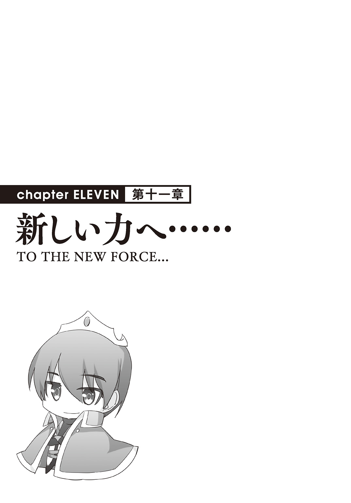
第90話 男のロマン
気づいたら雲の上にいた。
上は晴れ渡った青い空、地面はどこまでも続く白い雲。
最初はちょっとびっくりしたがすぐに慣れた。
ここに来るの、二回目だから。
「秋人」
「やっぱりあんたか」
目の前に現れたのは女神だった。
おれをこの世界に召喚して、物作りの魔法――ＤＯＲＥＣＡを与えてくれた張本人。
「呼ばれると思ってた」
「予想してたというの？」
「ああ。聖夜のことだろ」
「その通りです」
頷く女神。
こうなる可能性は予想していた。
何しろおれと聖夜は同時にこの世界に召喚された。そして聖夜はおれの手で退場してもらった。
何かあるんだろうな、とは思ってた。
「やってしまったわね」
「そうか？」
「どうにかならなかったの？」
「なったかもしれない」
おれは頷く。女神が疑問に思ったとおり、どうにかすることは可能だった。
が、おれはそうしなかった。
「ライサが欲しかった。だから聖夜は邪魔になった」
「そう。......強くなりましたね」
「うん？」
「力を持つ人間の顔になってきた。力を使うことに慣れて、それを疑っていない顔」
「褒めてないよな」
「いいえ、褒めてます。そういう人間でなければ世界は再生できないから」
そう、女神から頼まれたのは「世界再生」。
邪神にズタズタにされ、荒廃しきった世界を再生させること。
それが彼女の命令で、目的である。
だからこれも予想してた。
何も再生できていない聖夜をリタイヤさせても、なんのおとがめなしというのは。
「それに」
「うん？」
「いい目のまま。普通、力を持てば傲慢になって、私利私欲に走るものだけれど」
「走ってるぞ。奴隷を無理矢理おれのものにした」
「民から搾取していない、民を使って自分を満足させようともしていない」
「やる必要がないからだ。ＤＯＲＥＣＡを使った方がよっぽど効率いいしな」
それにその過程で奴隷を愛でて笑顔を見ることができる。
二重に美味しい。民から絞り取る必要性なんてどこにもない。
「......あなたを喚べてよかった」
女神は穏やかに微笑んだ。
何でそう思ったのかわからないけど、その反応なら問題ない。
「で、これなんだが」
おれはポケットからＤＯＲＥＣＡを取り出した。
聖夜のものだったヤツ、今はおれのものになったノーマルカードのＤＯＲＥＣＡ。
それを女神に見せた。
「これはどうすればいい、返せばいいのか？」
正直いらない。
奴隷たちにカードを持たせたが、それは奴隷カードで事足りる。
「持ってなさい。いつか役に立つわ」
「そうか？ わかった、持っとく」
二枚目のＤＯＲＥＣＡをポケットにしまった。
わざわざ持ってる必要性はないが、返さなきゃいけないってこともない。
持ってればいつか役に立つ、っていうのなら持っとこう。
「今日はそれだけか？」
「あなたは国を作った。国民は一万人を越えてますね」
「ああ、そうだ」
現実世界でも一万人未満の国が存在してることを考えれば立派な国といえる。
「十万人になったらいいものをあげる」
「なんだ、それは」
「それはまだ内緒。十万人になった時にまた喚ぶわ」
「わかった」
十万人か。
いいもの、っていうのが微妙にテンション上がらないけど、世界を再生してくうちにどうせ到達するんだ。その時についでにもらっておこう。
「お願い」
女神はおれを見つめて、手を握ってきた。
まっすぐと、懇願するような目で。
「あなただけが頼りなの」
女神に期待されている。
悪い気はしなかった。
☆
気がつけば自分の部屋にいた。
王都リベック、宮殿の中にある自分の部屋。
むくりと起き上がる、普通過ぎる感覚。
「今の......夢だったのか？」
と、つい思ってしまう。
が、どうやらそうじゃない。
起き上がって、自分の手を見つめる。
感触が残ってた。女神に握られた感触が。
「柔らかかった、それに......結構いい匂い」
そこに残ってる感触が、女神のところに行ってきたのが事実だと物語る。
というか、ちょっとドキドキする。
最後に手を握られたのが。
なんか、変な気分になって――。
コンコン。
ドアがノックされた。
直後にそっとドアが開く。そこからリーシャが顔をのぞかせてきた。
「あっ、おはようございますご主人様」
「おはよう。入れ」
許可してやる、リーシャは部屋の中に入ってきた。
「おはようございますご主人様」
「ああおはよう。どうした、なんかいいことでもあったのか？」
「え？」
「そういう顔をしてる」
リーシャは自分の顔をベタベタ触った。
「その......いいことというか、ご主人様に見てほしいものがあって」
「見てほしいもの？ どこだ」
「えっと、執務室の方に」
「わかった。朝の支度を手伝ってくれ」
「はい」
リーシャは頷き、おれの服を持ってきてくれた。
服を差し出すリーシャの手を見つめた。
なんとなく、服ではなくその手を取った。
「ご、ご主人様？」
「......」
無言でリーシャの手を握った。
「リーシャ」
「はい！」
「おれの手を握ってくれ」
手を離して命令する。
リーシャは首を傾げつつも命令にしたがった。
手を握られる。
「ど、どうしたんですかご主人様」
「ふむ」
手を離し、匂いを嗅ぐ。
他に似てるものは知らなくて、たとえようのない匂い。
だが、ものすごくいい匂い。
「ご主人様!?」
「いい匂いだ」
「えええ」
「奴隷の匂いがする」
「そりゃ......わたしは奴隷ですから」
だから何？ って顔をする。
「なんでもない。さあ、仕事するか」
「はい！」
笑顔で頷くリーシャ、心なしか首輪の宝石が輝く。
おれは確信する。
女神なんぞよりも、奴隷の方がずっと好きなようだ。
☆
執務室に来ると、そこにニーナが待っていた。
ニーナはおれを見るなり駆け寄ってきた。
「会いたかったよ王様！ 見て見て、これ、新しい設計図。第一奴隷様に協力してもらって王様のために書いた設計図なの！」
「落ち着け落ち着け。設計図？ 第一奴隷ってリーシャか？ どういうことだ？」
「王様のために書いたプ――」
途中でニーナが興奮して鼻血を吹いた。
なんとなく予想してたから吹く直前にかわした。
「いいから落ち着け。リーシャが説明してくれ。拭くのはあとでいい」
どうせまた何回か吹くだろうから。
一緒に部屋に入ってきたリーシャが頷いて説明をはじめた。
「えっと、前にご主人様から戦艦の設計図をいただいたのを覚えてますか？」
「うん？ ああ、あげたっていうか、地面に書いたのをお前が写したやつだっけ」
「はい。それを彼女と一緒に改良して、実際に作れるものにしたのがこの設計図です」
リーシャは執務机の上にある紙を指した。
それをのぞき込んだ。
おれが書いたものよりも遥かに細かい図面がそこにあった。
細かすぎて、おれには理解できなかった。
何となく「船？」ってわかるくらいだ。
「ふむ、これはどういうものなんだ？」
「陸上を走る戦艦でプ――」
「お前はいいから。リーシャ、説明」
リーシャから説明を受けた。
とはいっても、ニーナが言いかけた「陸上を走る戦艦」でほぼ説明がついていた。
大きくて、ニートカを数十基と、大砲を主砲として載せている。
うん、これは確かに戦艦だ。
「なるほど。よく考えたな」
「ご主人様はものすごく強いから、こんなのいらないんだけど」
「いや、よくやってくれた。ニーナもありがとう」
「プ――」
鼻血を吹いて倒れてしまった。
ヘブン顔、軽く昇天してる感じだ。
「よし、これを作ってみろ」
「え？」
驚くリーシャ。
「どうした、なんで驚く」
「その......」
リーシャはもじもじして、言いにくそうに口籠もった。
「話せ」
「はい。その、建造に必要な魔力が......１０００万近くかかるみたいです」
「へえ」
１０００万か、それは確かに結構な数字だ。
「それにやっぱり、ご主人様は強いから、こういうのはいらないと――」
「リーシャ」
「はい！」
びくっと、背筋を伸ばすリーシャ。
「お前が責任を持ってこれを作れ。魔力はどれだけ使ってもいい」
「――わかりました」
一瞬ためらったが、忠実な奴隷であるリーシャは逆らうことなく、命令を受け入れた。
戦艦か、楽しみだ。
第91話 開発力
リベック郊外。
そこで戦艦の建造が始まっていた。
奴隷カードを持つリーシャとリリヤ、そして金で雇った国民たち。
それらが一体になって、戦艦を建築していく。
あっちこっちで魔法陣が張られて、素材を入れられるたびに少しずつ完成していく。
建造というより、でっかいプラモを作ってるように見える光景だ。
それを、おれとマイヤは遠くから眺めていた。
「あれが出来たら、マイヤ、お前たちが使ってくれ」
「あたいらがかい？」
「あれの運用は、強力な兵器とともに、あっちこっちを移動するという今のお前たちの活動の延長線上にあるはずだ」
「なるほど」
「ついでに言えば、あの中には最低限の居住ブロックもある。アレを使えばお前たちはもう野営をしないですむ」
「それは嬉しいねぇ」
「体はいたわれ。おれの子を孕むんだろ？」
「......そ、そうだね」
マイヤは顔を赤らめて目を伏せた。
しばらくして、ちらちらとおれを見ながら、反応をうかがう口調で聞いてくる。
「あんた、なにがあったんだい？」
「なにがって、なにが？」
「前とはまるで別人じゃないか」
「別人？」
「だってあたいらがあんなに『孕ませてくれ』って言っても、のらりくらりとかわしてたのに、急に自分からそれを言いだしちゃってさ。嬉しいけど......まるで別人だよ」
「なるほど」
別人、か。
そういえば女神にも似たようなことを言われたな。
「おれ自身なにも変わってないつもりなんだけどな」
「そんなことはないさ――いや」
一転して、マイヤはにこりと笑った。
「それならそれでいいさ」
「いいのか？」
「そうさ。あたいらにとっては、みんなを孕ませてくれるかどうか、それだけが重要なんだからねえ」
「そうか。あれが出来たら、でいいか」
「ああ、みんなにも伝えとくよ」
笑顔のマイヤと約束を交わす。
戦艦の完成が二重で楽しみになってきた。
☆
宮殿の応接間。
マガタンの町長、ゲラシムがおれに会いに来た。
「久しぶりだな。調子はどうだ？」
「アキトさんのおかげでみんな問題なく暮らせてるよ、ぼくも含めて、安定した生活を過ごさせてもらってる」
「そうか、それはよかった。何よりだ」
「安定してるし、前に比べて豊かになった。ただ」
「ただ？」
「最近はお酒を飲んで、酔っ払って暴れる人も出てきたんだ。それでいろいろ問題が起きてるんだ」
「酒か」
「うん。マガタンは元々酒作りで有名な町だったんだよ。知ってる？ 『嫁入り道具』ってお酒」
「なんだそれは？」
酒にしては微妙にダサいぞ、名前が。
「すごく昔の風習なんだけどね、その家に女の子が生まれると同時に酒を作っておくんだ。その女の子が成長して嫁いでいく時に取り出して嫁入り道具にするんだって。女の子が嫁に行くくらいの年月熟成させるから、相当美味しくて、かなり貴重だったって話だよ」
「へえ。なるほど、それくらい時間をかけて作ったらうまい酒になりそうだ」
「うん。で、本当の目的とは別に、材量と製造法だけ同じで、一年から数年間かけて作ったのが『嫁入り道具』。普通に銘柄としてあるんだ」
「なるほど」
「それを最近また作り始めて、徐々に出回りはじめてるんだけど......問題が二つ。一つはさっき言ったように、お酒を飲んで暴れ回る人が出たこと」
「それは素晴らしいことだな。余裕が出たってことでもあるんだから」
「アキトさんがそんなことを言っちゃだめですよ」
「わかってる。取り締まりはちゃんとしておけ」
おれ個人として喜ばしく思うのと、国王としての立場は別の話だ。
取り締まりはさせるが、思う存分酔っ払える生活の基盤を構築する。
両方をやらないといけない。
「で、もう一つの問題は？」
「そのお酒はリースっていう植物から作られるんだけど、それって特定の場所にしか生えてないものなんだ。栽培はすごく難しくて、自生してるものを採るしかないんだ」
「なるほどね。まあそういうものもあるわな」
元の世界でいうとウナギみたいなものか。
「その場所が最近占拠されたんだ」
「占拠？」
「うん、占拠。マラートとマクシムの部下だった人たちがそこを占拠したんだ。最後までアキトさんに反発して出てった人たち」
「その残党が合流したのか」
「うん。それでリースが欲しいなら買えって言ってきてるんだけど......」
「あり得ない値段でもつけられたか」
頷くゲラシム。
なるほど、そういうことか。
だいたいわかった。
☆
「調べてきたよ」
数日後、やってきたマイヤと執務室で会った。
「ご苦労。早速だけどどうだった」
「ひどいもんだねえ。連中、がっちがっちに武装してあの辺を占拠してる」
「そうか」
「リースってのかい？ あれは全部押さえられたと言っていい。見回りがものすごく厳重でねえ、こっそり盗むのも一苦労さ」
「つまり向こうの言い値で買うしかない、って状況か」
頷くマイヤ。
「話もしてきた。とんでもなく高飛車だったね。『高いと思ったら買わなくてもいいんだぞ』ってさ」
「ま、当たり前の反応だな」
「あんな値段で買ってたら酒の価格が大変なことになる。言われた値段だと、酒一杯が３００エンから３０００エンくらいに上がる計算だよ」
「それはまずいな」
ＤＯＲＥＣＡで作る貨幣「エン」は額面が紙幣で１００００と５０００と１０００、硬貨が５００、１００、50、10、５、１と、日本円と同じということで、だいたいの物価を日本と同じようにしてる。
酒一杯が３０００エンまで上がったら大変なことになる。
酒は嗜好品・贅沢品だからおれが直接作ることはないが、このケースは放っておくわけにもいかない。
「アキトが乗り込めばすぐに解決するだろうけど、ここはあたいらにまかせとくれよ。連中の戦力もばっちり調べてきた。殲滅するのはわけないよ」
「いや待て」
「うん？」
「力で奪ったりはしない。それをやったらマラートやマクシムと同じ穴のムジナになる」
「しかし今のままじゃ値段は向こうの言いなりだよ」
「独占できた人間の特権だ、それは仕方ない」
「じゃあほっとくってのかい？」
「そうは言ってない。ようは独占を崩せばいいんだろ」
「そうさ、だからあたいらがあそこを奪って」
「王様！」
力で解決すると主張するマイヤ、そこにニーナが飛び込んできた。
鼻血吹いたまま飛び込んできた、ちょっとしたホラーだ。
が、今はその鼻血が頼もしい。
「その表情だと出来たみたいだな」
「うん！ ボク、王様に言われたリースっていうヤツの作り方を見つけたんだ」
ニーナの背後に、協力に行かせたミラがついてきた、そのミラがはっきりと頷く。
おれはＤＯＲＥＣＡを取り出し、メニューを開く。
そこには、ニーナが開発したリースの名前があった。
第92話 魔力でお金チャージ
「これがリースか」
「はい！」
大喜びで頷くニーナ。
彼女から受け取ったものを見つめる。
米粒大の白い塊で、揺らすと中から水音がした。
「なんか入ってるのか？」
「そりゃ入ってるよ、リースだからね」
マイヤはおれの手のひらからそれを取り上げて、前歯を使って器用に割った。
綺麗に真っ二つになったリース、殻の中から透明の水みたいなものがあふれた。
「こうやって割って、味を楽しむものさ。中の水は甘いけど、殻はとんでもなく苦いんだ」
「へえ、どれどれ」
「あっ――」
リースを一粒口の中に放り込んで、嚙み砕いてみた。
「――――――ッッッッ！」
瞬間、この世のものとは思えない味が口の中に広がった。
いや、味と言えるものなのかもわからない。
何かが舌の上で爆発して口中を占拠した。
何もないのに、何かがでっかいものがそこにあるような感じ。
プシニーを口いっぱいに詰め込んだ、そんな感じだ。
「――――」
しばらく経ってもうめき声すら出せなかった。
「あーあー、言わんこっちゃない」
「ご主人様！」
ミラが慌てて水を持ってきた。
ひったくるようにして、一気に飲み干す。
それでも足りない。ミラに目配せしてもっと持ってきてもらう。
水を五杯、一気飲みしてようやく人心地ついた。
「なんじゃこりゃ」
あまりの苦しさに溢れてしまった涙を拭う。
「そういうものさ。ただし殻を上手く割れた時に出てきた汁は甘く美味しいのさ。それを使って作ったのがマガタン伝統の酒ってことさ」
「なるほど......」
深呼吸する。
気を取り直して、ニーナを見た。
「これを生産するのに成功したのか」
「うん！ えっと、半分くらい？」
「半分くらいってどういうことだ」
もったいぶった言い回しに、おれは首を傾げた。
☆
ミラ、ニーナの二人と一緒にリベックの外に出た。
イリヤの泉に代わるおれの銅像の加護範囲を出てすぐのそこに、大きなタルがいくつもあった。
近づいて、タルの中をのぞき込む。
「なんだこれ......水か？」
指ですくって舐めてみた。
無味無臭の、綺麗な水だ。
「これがどうしたんだ？」
「第二奴隷様」
「うん。いいかな、ご主人様」
ニーナ、ミラ、おれという遠回りをした。
ミラは奴隷カードを取り出して、地面に魔法陣を張った。
そこにニーナが一粒のリースを置いて、さらにタル二つ分、たぶん一〇〇リットルくらいはある水を注いだ。
水を注いだ後、魔法陣が光る。
リースの粒と水を包み込んで......植物になった。
盆栽のようなミニチュアサイズの木に、びっしりとリースが生えてる。
「ふむ、これで出来たのか」
「ちがうよ王様、まだ完成じゃないよ」
「うん？」
「よく見て、リースが灰色でしょ」
「ああそうだな」
「収穫するのは白になってからだから、ここから一日待たないといけないんだ」
「なるほど」
頷く。
リースの一粒と大量の水で、収穫直前のリースの木。
「これは何回でも収穫出来るのか？」
「ごめんなさい。収穫したら何故か木の方が枯れちゃうの」
「そうか。いや別にいい」
シュンとするニーナの頭を撫でてやった。
「よくやった。生産できるだけでたいしたもんだ」
「ほんとう？」
「ああ、褒美に一枚やる」
折り紙メダルを一枚、彼女に渡した。
ニーナは大喜びする。
「ご主人様」
ミラが話しかけてきた。
「これ、あんまり良くないと思うんだ」
「なんでだ」
「だって、使う水が多すぎるよ」
「確かにな」
目分量だけど今のに必要な水は一〇〇リットルくらいだった。
試しに作ってみる分にはいいけど、大量生産するとなるとまずは水を確保するところからはじめる必要がある。
「そういえば魔力は？」
「そっちは普通、これ一個で５００」
「ふむ」
ミラの返事をＤＯＲＥＣＡでも確認した。
今のところ銅像をのぞいて、作れるものは全部おれのＤＯＲＥＣＡでも確認できる。
リースの木、確かに必要魔力は５００で、たいしたことはない。
「水を確保せんといかんか」
「そうだご主人様！ 海だよ、海」
興奮気味に、さも妙案だとばかりに話すミラ。
「海か......」
言いたいことはわかるが、それ無理な気がする。
なぜなら、ＤＯＲＥＣＡに表示されてる素材は「真水」だからだ。
☆
マガタンの町の外れに三種類の魔法陣を張った。
魔物を防ぐためのイリヤの泉。
大量生産する予定のリースの木。
そして、水を安定して大量供給するためのわき水（特大）。
わき水（大）そのものを素材にするわき水（特大）はかなりの勢いで水を吹き出している。
リースの製産で大量消費してもびくともしないほどの量だ。
ＤＯＲＥＣＡを使って畑を作るのは最初の町、アキトでちょこっとやって以来だな。
それをなんとなく思い出してると。
「アキトさんすごい。こんなこともできるんだ」
「さすが王様」
「いつ見てもその魔術的手腕にほれぼれじゃ」
町長ゲラシムに率いられた町民が口々に言った。
称賛の大合唱だ。
「とりあえずこんな感じでやれば明日には収穫できる。ただし一回限りだ。収穫後は新しい魔法陣を張らねばならん」
「はい！」
「ちなみに金は取るぞ。これは基本的な衣食住には入らないからな」
言うと、ゲラシムも他の町民たちも「えっ」というような顔をした。
だが、すぐに、「そういえばそうか」と口々に言い合う。
おれの基本スタンスが浸透してて何よりだ。
「どれくらいですか？」
「リースの原価、その三割でいい。魔法陣を張った後はそっちの仕事だからな」
ゲラシムは背後にいる町民たちを見た。全員が無言で頷いた。
決まりだな。
「はい！ ありがとうございます！ アキトさん」
「「「ありがとうございます！」」」
これで一件落着、だな。
第93話 信者の町
開拓と感謝の町、ブラガダリュー。
おれは一人でここにやってきた。
戦艦建造、リース増産、日々の仕事。
やることが増えて、奴隷五人を全員置いてきた。
「領主......じゃなくて王様！」
駅に着いて列車から降りるなり、町長のザハールがおれのところに駆け寄ってきた。
口調といい行動といい、相変わらずアクティブな男だ。
「待ってたのか」
「はい！」
「そうか。歩きながら話そうか」
ザハールと並んで歩きだす。
ブラガダリューの町を見てまわる。
「だいぶ発展してきたな。何もなかったあの頃が噓のようだ」
「王様と、王様の奴隷たちのおかげです」
「おれはたいしたことしてない。衣食住の基本を確保しただけだから」
そんなふうに言い返すと、あることに気づく。
「そういえばこの町、他に比べて二階建ての家が多いな」
ざっと見た感じ、二割くらいが二階建ての家だ。
基本おれは木の家だけを建てる、誰であろうと、町に住み――いまじゃ国民って扱いだけど、そうする人間には無料で木の家を提供する。
魔力２５００を消費して、アブノイ草×50、木片×３００、ブッシノ石×10という素材で作る木の家。
それを作って提供してるが、それ以上のことはしてない。
それ以上のことは要望があり、何か対価を支払えばやってやるというスタンスだ。
その辺のことは奴隷カードのランクが上がってきてからはユーリアに一任してある。
「見た感じ二割くらいが二階建てになってるな」
「王様のおかげだ。みんな必死に働いてる。働いて、それで家を建ててる」
「へえ。にしてはプシニーの消費が一番多いけど、それはなんでだ？」
ユーリアのグラフを思い出す。
町ごとにまとめた需要グラフで、ブラガダリューだけ抜きん出て「食」の需要が多い。
といっても、他が大抵ゼロなので、ここが目立つってだけの話だが。
「節約してるからかな。プシニーはいくらでも食べていいって王様が言ったから、早く家を増築したい人は食べ物をそれだけにしてるんだ」
「なるほど」
「まずかったですか？」
「いや？ まったく。プシニーならいくらでも消費して構わない」
極論、プシニーを消費するだけのニートになったとしても別に構わない。
そういう方針を打ち出したのはおれで、ルール・レギュレーションの中にある限り、口出しするつもりはない。
「だがそういうことなら補充は早めに言えよ？ ユーリアが把握してるだろうが万が一ってこともある」
「わかった」
話してるうちにブラガダリューを横断して、町の反対側に着いた。
そこに町民たちがいた。
数は一〇〇人くらいで、よく見れば反応が両極端だ。
半分は見たことのあるような顔で、おれに熱い視線を送りながら、手を合わせて「ブラガダリュー、ブラガダリュー」と念仏のように唱えてる。
元からいた町民だろう。
もう半分はおれをうさんくさい目で見ている。
身なりもぼろぼろで、難民のような格好だ。
「あっちが新しい町民か」
「そうなんだ。三分の二くらいがシュレービジュから戻った人間、残りの三分の一は噂を聞きつけて流れてきた人たちなんだ」
「噂？」
「王様の国の噂。最近あっちこっちで噂になってるらしいよ。この国に来れば楽できる、地上の楽園なんだって」
「へえ」
「それで来たのはいいけど、結局働かなきゃいけないってことを知ってふてくされてる人もいるんだ」
「なるほど。まあ、衣食住は保証してやるが、あとは本人次第だからな」
「はい！」
大きく頷くザハール。こいつもおれの方針をよく知ってる一人だ。
さて、やるか。
奴隷たちの手が空かないから、おれが代わりに来た。
木の家、布の服、プシニー。
生存に必要なものを次々とＤＯＲＥＣＡで、魔法陣で作っていく。
元からの町民は歓呼しながら、それぞれの魔法陣に素材を運び入れた。
新参者たちは最初不満そうな顔をしてたが、徐々に感化されていき、最後の方には元の町民たちと一緒におれのことを称えだした。
称えるのはいいけど......。
「ブラガダリュー」
「ブラガダリュー」
「ブラガダリュー」
みんなでそれを連呼するのはどうかと思うぞ。
開拓の町、感謝の町。
後々宗教の町になっていくんじゃないかって、おれはちょっと心配になってくるのだった。
第94話 王者の風
ブラガダリュー駅。ザハールと町民が列車の前に並んでいる。
夕日の中、列車に乗ってるのはおれ一人、この町での仕事を終わらせて、これから帰るところだ。
「今日はありがとうございました！」
ザハールが言うと、他のみんなも一斉に頭を下げた。
「王様に来てもらえるなんて......本当にありがとうございます」
「おれでも奴隷でも、やることは変わらんだろう」
「そんなことはありません！ みんな王様が来るのを待ってますし、実際今日のみんなの働きはいつも以上でした」
「......一つだけいいか」
「なんですか？」
「ブラガダリューって連呼するのはいいけど、手を合わせながらのはやめてくれ」
「どうしてですか？」
ザハールはきょとんとした。後ろにいる町民たちも同じだった。
「とにかくやめてくれ」
連呼するだけなら言葉通り感謝の言葉に聞こえるけど、手まで合わせられると途端にあれな感じになる。
ジーク・ジ○ンとか、そういう感じに聞こえてしまう。
「わかりました。王様がそう言うのなら」
「ならいい。また何かあったら言え」
「はい！」
町長と町民に見送られて、列車が走りだす。
「ブラガダリュー・アキト」
「「「ブラガダリュー・アキト」」」
「ブラガダリュー・アキト」
「「「ブラガダリュー・アキト」」」
見送りの仕方がなんか進化してる気がしたが、気のせいだと思うことにした。
列車はすぐに最高速度まで上がった。
これなら日が完全に暮れるまでに帰れるだろう。
「メニューオープン」
ＤＯＲＥＣＡを出してなんとなく眺めた。
カードの種別、国の人口、増減する魔力。
眺めてるだけで結構楽しかった。
実際に自分でいろいろ作ってきたおかげで、数字の増減を見るだけで何がおこなわれてるのか何となくわかる。
３００のが短時間で二回連続減った。
「３００？ 万能薬か。ニーナが鼻血でも吹いたか？」
その光景を想像して、ちょっとクスっとした。
おれはもう慣れたけど、ミラあたりは今でも鼻血シャワーをいやがってるはずだ。
「早く慣れればいいのに」
ニーナのそれも、慣れたら結構可愛いって思えるようになる。
数字の増減を眺め続けた。
家が作られた、服が作られた、食糧がまとめて作られた。
数字が減ると国が大きくなったように感じられて、ちょっと嬉しい。
一通り眺めて、ＤＯＲＥＣＡをしまって、今度は窓の外に目を向けた。
レールから離れたところはまだまだ荒野だ。
この辺りもそのうち開拓していかないとな。
「むっ」
ふと、離れたところの地面に人影を見つけた。
レバーを引いて列車を止める。
列車から降りて地面に倒れてる人に駆け寄っていく。
うつぶせで倒れてる。長い髪がマントのように全身を覆ってる。
女か？
「おい大丈夫か？」
呼びかけるが、ぴくりともしない。
行き倒れ？ まさか死んでるのか？
「おい、しっかりしろ――なっ!?」
かけよって抱き上げる――瞬間驚愕した。
それは人じゃなかった。
丸太に服を着せて、黒い糸をかぶせて髪に見せた人形のようなものだ。
自然にできたものじゃない、明らかに人に見えるように作ったもの。
何故――まずい！
そう思った途端、地面が光った。
おれ――人形を中心に魔法陣が展開される。
黒い輝きの、直径一〇メートルを超える魔法陣だ。
光がおれの体にまとわりつき、拘束してきた。
「罠か！」
「ひゃっははははは！ かかった！ 間抜けがかかったぞ」
声が聞こえて、男たちが岩陰から現れた。
先頭にいるのが一人、その後ろに数十人。
服装はばらばらだが......全員見たことのある格好だ。
「マラートとマクシムの残党だ」
「おうよ、ミドロファン様だ」
ミドロファンって名乗った男はにやにやしながら近づいてくる。
魔法陣ギリギリのところで足を止めて、にやにやしたままおれを見た。
「言われた時はまさかって思ったけど、本当に効くたあな。まさかメスに見せかけた人形で釣れるたあ。王様のくせに安っぽいな、おめえ」
「それより、なんでこんなことをする。復讐か？」
「ばーか、そんなのどうだっていい。負けた連中が間抜けだったってことだ」
「間抜け」
「あいつらは似た者同士だったぜえ。腕力だけに頼って、脳みそまで筋肉だらけだ。だから負けたんだ」
......こいつ。
「それよりも取引しようぜ」
「取引？」
「そうだ。リースの話だ」
「......ああ」
言われてようやく気づいた。
そうか。こいつらのことだったのか。
マガタンの町が必要なリースを産地ごと押さえて、値段を吊り上げてる連中。
そういえばあれもマラートとマクシムの残党だって言ってたっけ。
「王様よお、こっちもそんな大それたことを望んでるわけじゃねえ。飯の種が欲しいってだけなんだ」
「だったらぼったくるのをやめればいい。普通に商売してる分にはこっちは手出ししない」
「いやいや」
ミドロファンは芝居がかった仕草で首を振った。
「あいつらが見えるか王様よ。あいつらはな、おれについてきてくれる可愛い部下なんだよ」
ミドロファンが背後を指す。そこにいる男たちも全員にやにやしてる。
「おれはな、あいつらを食わしてやる義務があんだよ。王様の立場ならわかってくれるだろ？ ん？」
「......おれにどうしてほしい」
「だからー、別にたいしたことは望んでないのよ。王様がはじめたリースの栽培をやめればいいんだ」
「いやだと言ったら？」
「ぎゃーははははは。王様よお、頭いいくせにそんなこともわからねえのか」
「この程度の魔法陣でおれに勝てると思ってるのか？」
「強がるなよ。これはなあ、邪神戦争中に開発された対魔――」
「ぬうううううん！」
腰の真・エターナルスレイブに触って、ＤＯＲＥＣＡから魔力を引き出して――
全身に絡みついてくる光に対抗する。
「ぎゃははは、むだむだ」
「うおおおおおおお！」
魔力をドンドン込める。
10......１００......１０００......１００００......。
「お、おいお頭、これちょっとやべえんじゃねえのか」
「魔法陣がビシビシいってますぜ」
「それに――あいつ、動いてやがる」
部下の男たちが口々に言った。
「ば、ばかな」
「うおおおおお！」
瞬間、雄叫びとともに魔法陣が砕け散った。
込めた魔力は、実に10万。
小さい町一つ作れるほどの魔力だ。
こいつらが自信を持つだけはある。魔法陣はかなりの代物だった。
おれは剣を握って、ミドロファンとその部下の方を向く。
「で」
「......え？」
「いやだと言ったら？」
威嚇するように言う。
「ま、魔法陣がなくたってこっちの方が人数が多いんだ。おいてめえら、やっちまえ」
ミドロファンの号令で男たちが一斉に襲いかかってきた。
改めて数える。奴を入れて全部で三八人。
この程度、魔力を使うまでもなかった。
☆
「お帰りなさいご主人様――ってどうしたの血まみれだよ！」
リベックの駅でおれを出迎えたミラが目を見張って驚いた。
「そっちこそどうした血まみれで――ってそっちはニーナか」
「はい......また鼻血が......」
シュンと落ち込むミラ、やっぱりまだ慣れてないようだ。
「って、わたしのことなんかどうでもいいの。ご主人様こそどうしたのそれ？」
「たいしたことはない。ちょっとならずものに襲われただけだ」
「なーんだ、そんなことか」
途端に心配しなくなったミラである。
信頼の証なのはわかってるが、それはそれでちょっと寂しい気もする。
「それよりも、連中をレールの横に積み上げてきた。全員急所ははずしてある」
「え？ まさか万能薬を届けるの？」
「そうだ」
やってくれるか？ って目でミラを見る。
「ご主人様の命令ならやるけど......本当にいいの？」
「ああ」
「わかった、行ってくる」
ミラは列車に乗っていった。
その後ろ姿を見送る。
これに懲りて悪どいことはやめて、一緒に世界を再生してくれる手伝いをしてくれるといいな、と思ったのだった。
第95話 奴隷の望み
夜の宮殿、執務室。
仕事を終えて、報告に来るミラ。
「全員に万能薬を飲ませてきたよ」
「ご苦労」
「牢屋に放り込んだけど、それでいい？」
「うん？ なんで牢屋なんだ？」
「ご主人様を襲ったんだよ」
当たり前のことのように話すミラ。
国を作って、国王を名乗ったのとほぼ同時に、王国法という名の法律を施行させた。
ユーリアを中心に、町長たちが諮って作った法律を、おれが最終チェックして決めたものだ。
ちなみにおれの意見をかなり取り入れたから、基本は日本の法律と大差ない。
おれの常識でやっていいことといけないことを明文化しただけだ。
「それって違法だよ」
「なるほど。確かに他人を襲うのは違法だな」
「それだけじゃないよ、ご主人様を襲ったのは不敬罪だよ」
「あ、それ削った」
「え？」
驚くミラ。
不敬罪。国王とか君主に対して不敬を働いた時に適用される法律だ。
決めたのは奴隷たちとおれが助けた町長たちだから、草案ではそれが当たり前のように第一条にきていた。
しかも「国王に対する不敬行為」じゃなくて、条文は「アキト様に対する不敬行為」ってなってた。
もちろん削除した。そんなものはいらない。
「どうして!?」
「どうしてもこうしてもない。いらないものだからな」
別におれに対して不敬かどうかなんてどうでもいい。
おれにとって、この国に重要なものは二つしかない。
国民と奴隷。
おれからすれば不敬罪なんてものよりも奴隷法を作ってエターナルスレイブを保護したいくらいだ。
あれほど健気で愛らしい生き物、きっちり法的に守らないのはおかしい。
ちなみにまだ作ってない。こればかりは奴隷に任せると変になりそうだから、そのうちおれの独断でやるつもりだ。
現行法でも国王のおれが必要と感じたらいつでも新しい法律を作れるというふうになってるからな。
「もう、ご主人様は甘いよ」
「そうかな」
「そうだよ」
「あんなのさっさと死刑にすればいいのに」
「そう言うな。まあ、一晩ぶち込んで頭が冷えたら解放してやれ」
「一晩!?」
さらに驚くミラ。
「一晩って短すぎるよ」
「そうか？ 妥当じゃないのか。不敬罪がない以上、あれは何の罪になる？」
「え？」
「強盗か？ だったら未遂だ。傷害も殺人も未遂だ。そもそも被害者がいない。ってことで無罪放免だ」
「......」
ミラは啞然とした。
「ご主人様、お人好しすぎる」
呆れられた。
はじめてなんじゃないのか？ 奴隷に呆れられたのなんて。
ちょっと新鮮だ。
が、そこはやはり奴隷、おれの命令は絶対だ。
ミラは溜息をついて、渋々受け入れた。
「わかった、明日の朝になったら解放する」
「よろしく。ああ、それと――」
「ちゃんと働く気があるかどうかを聞くんでしょ。わかってますッ」
ミラが切れ気味に言った。
おれは驚いた。
同時に――嬉しくなった。これほどおれのことをわかってる奴隷のことが愛しくてたまらない。
部屋から出ていこうとするミラを呼び止めた。
「待て」
「なに？」
「お前、メダルを何個持ってる」
「え？ メダルってこれ？」
ミラはドレスの下から折り紙のメダルを取り出した。
肌身離さず持ち歩いてるのに綺麗なまま。よほど大事にしてるのがわかる。
「ああ、それが何個ある――いや」
言いかけて、首を振った。
ＤＯＲＥＣＡを出して、紙を一〇枚作る。
それを全部メダルに折って、ミラに渡した。
「ほら」
「え？」
「一〇枚集めたらなにかしてやるって約束だったな」
「で、でもこんないっぺんに」
「いっぺんに渡しちゃダメって法律でもあるのか？」
「それは――ない、けど」
もちろんない、あったとしてもおれが潰してる。
いや、奴隷法を作って「ご主人様が奴隷を可愛がるのに限って例外を認める」って付け加えるってのもいいな。
「でも......もらう理由が......」
「ご主人様があげたくなったってのは理由にならんか？」
本当は違うけど、そっちはあえて言わない。
「ううんっ、そんなことない」
慌てて手と首を振って否定するミラ。
「さあ、何をしてほしい？ なんでも言ってみろ」
「......なんでも？」
「なんでも」
ミラはもじもじする。ものすごく言いにくそうだ。
なんだろ、そんなに言いにくそうなことってなんだ？
もしかして今すぐに子供がほしいのか？
あり得る、母娘二世代奴隷を望む種族エターナルスレイブだからな。
「遠慮なく言ってみろ。一度約束したことだ、なんでも叶えてやる」
「じゃあ、言うね」
「ああ」
「不敬罪、やっぱり作って、ほしい......な」
言葉が尻すぼみに消えていくミラ。
きょとんとなるおれ、まさかそうくるとは。
「......」
「ご、ごめんなさい、やっぱり無――」
「それは大事なことなのか？」
「え？」
「大事なことなのかと聞いてる」
真顔で聞いた、ミラはきょとんとして、こちらも真顔で頷いた。
「うん！ ご主人様に逆らうのは許せないから」
......まったく。
こいつは......いやこいつらは......。
はあ。
「わかった」
おれはにこりと笑って、頷いた。
「ユーリアに言って、草案を作ってもらえ」
「いいの!?」
「なんでもするって言ったんだ。お前のご主人様は前言撤回するようなダメご主人様か？」
「ううん！ そんなことない！」
笑顔のミラ。
「ねえ、今すぐユーリアのところに行っていい？」
「ああ」
頷いてやると、ミラは風のような速さで執務室から飛び出していった。
五分くらいして。
――魔力が２００００００チャージされました。
ユーリアまで大層喜んだらしかった。
第96話 王は奴隷よりも強し
明くる昼下がり、おれは一人でリベックの商店街に向かった。
奴隷たちは相変わらず全員戦艦建造に駆り出してる、この調子なら三日もすれば完成するって報告を受けた。
おれはその間、やれることをやる。
指定された場所にやってくると、そこに一人の女がいた。
四十代くらいの、肝っ玉母ちゃんっぽい見た目の女だ。
「あんたがイネッサか」
「そうさ。わざわざ王様に来てもらってすまないね」
「気にするな。それで、建てる場所はここでいいのか？」
「ああ」
頷くイネッサ。彼女の後ろに木の家が一軒建ってる。
ここに来たのは木の家を取り壊して、新しい建物を建ててほしいという彼女の要望があったからだ。
今までも何回かあったパターンだが、全部奴隷に任せてきた。
今は奴隷たちが出払ってるから、おれが代わりに来た。
「で、どういう建物だ？」
「なんだっけ、ここまで建てもので、ここからここまで柵でぐるっと囲ってるみたいな」
イネッサは身振り手振りで説明した。
「ああ、ニーナが開発したテラスタイプの建物か」
「テラスっていうのかい、それ」
「飲食店でも開くのか？」
「そうなのさ」
イネッサは目を輝かせた。
「ここに飲み屋を開くんだ。知ってるかい王様、最近は飲み屋をやるのが一番儲かるのさ。みんな仕事帰り、働いたあとに一杯引っかけていくのが流行ってるのさ」
「へえ」
それはいいことを聞いた。二重の意味で。
荒れ果てた世界から、仕事帰りに飲み屋に寄って飲んでいくのが流行りになるくらい復興してきたってことだ。
それに、流行りだっていうのなら奴隷たちもいずれつれてきてやりたいな。
「どこの飲み屋に行っても王様の話題で持ちきりさ。王様のおかげでいい酒が飲めてるって。ニキートって男なんて食事は全部プシニー、稼いだ金を全部酒につぎ込んでるのさ」
「なるほど。人生楽しんでるな」
おれが約束した基本方針を上手く活用してるな。
「王様ならそう言うと思ったよ。みんな言ってるよ。時代に関係なく、まれに見る賢明な王様だって」
「そうか」
「それに、うちも王様にものすごく感謝してるのさ」
「なんでだ？」
「うちのヤドロクがずっと王様のところで働いてるんだ。あれこれ作ったり、最近だとあのでっかい船――」
「戦艦か？」
「そう、それ。それの建造に関わっててね、それでたんまり稼がせてもらって、この店の資金を貯めることができたのさ」
「それは良かったな」
「ああ、だから王様にはいくら感謝してもしきれないくらいなのさ」
「気にするな。さて、はじめるか」
「あいよ。素材は前に奴隷様に聞いて、あっちに用意してあるよ。人も集めといた」
イネッサが指した方向に素材が山のように積み上げられてる。
そのそばに屈強な男が三人スタンバっている。
「素材は使うが、人手はいらん」
「え？ いなくて大丈夫なのかい？ 奴隷様は三人はいた方がいいって言ってたけど」
奴隷たちならそうだろうな。
「ま、見てろ」
おれはＤＯＲＥＣＡを取り出して、建設予定地にある木の家の前に立った。
まずは『解体』を使って、元の家を綺麗に消し去る。
次にベースになる家を――ではなく、ロード機能を使った。
ニーナが発案したものは、カードにセーブ・ロード機能がついた直後に全部一通り作って、覚え込ませた。
イネッサが希望した、テラスタイプの建物もそのうちの一つだ。
地面に、複雑に絡み合った魔法陣ができあがる。
そこに、用意された山のような素材をまとめて投げ入れる。
かなりの量だが、同じ魔法陣の中に投げ入れるだけならたいした労力じゃない。
魔法の光が素材を包み込み、建物ができあがった。
所要時間、わずか三分弱である。
ま、こんなもんだろ。
今回はたまたまおれが来たけど、これからもこういうセーブ・ロード機能を使う案件はおれがやった方がいいのかもしれない。
その辺はユーリアと一度相談してみよう。
ともかくやることはやったから、おれはイネッサに言った。
「終わったぞ」
「すごい......やっぱりすごいんだ王様って」
「こんなに一瞬でできるのか！」
「おれ、奴隷ちゃんと何回も物を作ってきたけど、奴隷ちゃんの場合、この十倍はかかるぜ」
「奴隷ちゃんたちもすごかったのに王様はもっとすげえや」
イネッサは舌を巻いていた。スタンバってた三人の男も同じような反応だ。
そりゃまあ、ＤＯＲＥＣＡと奴隷カードじゃ性能自体が違うからな。
奴隷たちよりも時間短縮出来るのは当たり前だ。
だが。
「そうだ王様、せっかくだしうちで飲んでいってくれるかい。うちの初めての客になっておくれよ」
「いいのか？」
「もちろんさ。ほらあんたたち、用意してた食材と酒、それと食器、全部運び入れてくれ」
「おうよ」
「ガッテンだ」
「なあイネッサ、せっかくだし若い娘呼んできて王様の酌させた方が良くねえか」
「よく気づいてくれたね。心当たりは？」
「まかせろ」
あれよあれよってうちに話がまとまって、おれはできたばかりの店の中に招き入れられた。
普通にやっただけなのに、なんだか、ものすごく歓待を受けた。
第97話 奴れい
酒場の中、おれのテーブルには大量の料理と酒が載せられている。
店の女主人、イネッサが次々と運んでくるのだ。ちょっとした満漢全席のようになって、向こうのもてなしの本気度が伝わってくる。
「王様、どうぞ」
隣にいる美女がおれに酌をした。
グラスに注がれる少し濁った酒、リースで作られたマガタンの特産『嫁入り道具』らしい。
特産になるだけあって、結構美味しかった。
「もう一杯どうですか王様」
「もらおう。にしても......」
グラスに注いでもらいながら、テーブルの上の料理を見る。
肉に野菜に魚、穀物類もある。
およそ考えつく食材は一通りあるって感じだ。
「よくこんなに揃えたもんだな」
「王様のおかげです」
美女は酒瓶をテーブルの上に置いて、おれをまっすぐ見た。
「あの、王様」
「なんだ」
「わたし、ずっと王様にありがとう、って言いたかったのです」
「どういうことだ？」
「わたし、最近リベックに流れ着いた者なんです」
「流れ着いた。サルから戻ったパターンか？」
「いいえ。前いた村は邪神の軍勢に滅ぼされて、わたしたち家族は命からがら逃げて、山奥に身を隠していたんです。しばらく山の中にいたのですが、食糧もなくなって、出から下りたらマラートと出くわしたんです」
「マラート」
最近よく出る名前だ。
「それでマラートに見初められて、あいつの屋敷に連れていかれたんです。そこに王様がやってきました」
「あの日のことか」
時系列がわかってきた。
「はい、王様はマラートを倒してわたしを助けてくれました。そのお礼をずっと言いたくて」
「気にするな」
ただのついでだからな。
彼女を助けようと思ってやった訳じゃないから、ことさらお礼を言われるようなことでもない。
「はい、それでもありがとうございます！」
「そうか。で、今の生活はどうだ」
「王様のおかげでちゃんと働いて生活できてます」
「別におれのおかげじゃ――」
「ううん、王様のおかげです。あの後もしばらくの間、生活が苦しかったですけど、ある日王様に会ったら――あの時は領主様でしたけど、王様は話を聞いて、わたしの家族に仕事を紹介してくれました」
おれはグラスを置いて、女をじっと見た。
その話が本当なら、以前に一回は会っているということになるが......思い出せない。
頑張って記憶を探るが、だめだった。
「すまん、思い出せない」
ついには諦めて素直に謝った。
「仕方ないですよ。王様、そういうことを毎日やってらっしゃるから。一週間前に食べたご飯のことなんて思い出せないのと一緒です」
女はにこやかに微笑んだ、気分を害した様子はない。
「でも、すごく感謝してます」
「そうか」
感謝されるのは悪い気分じゃない。
おれは酒を飲んで、料理を食べた。
彼女たちに歓待されて、楽しい一時を過ごした。
「そうだ王様」
一通り料理を出した後、戻ってきたイネッサが切り出した。
「一つお願いをしてもいいかねえ？」
「なんだ、言ってみろ」
「王様はこの店の初めての客じゃないか――あっ、もちろんお金なんか取らないよ。でも初めての客には変わりないだろ？」
「ああ、そういうことになるのか？」
金を払わなくていいって言われたけど、招待客、って意味なら客だな。
「せっかくだし、王様がこの店の名付け親になってくれないか」
「名付け親？」
「そう」
頷くイネッサ。
「王様につけてもらえないかね」
「イネッサさん、それは失礼すぎるよ。せめてこっちが考えて、王様に公認してもらうというのはどうかな」
「そうか！ そうだね、そっちの方がいいね」
「いや待て」
手をかざして止めた。
「悪いがそっちはＮＧだ」
「どうしてだい？」
「どうしても」
頭の中に「ブラガダリュー」の一件が浮かび上がった。
この世界の――おれの国の国民に任せたらああいうノリになるんだろう。
まあ、それも悪い気はしないけど、行きすぎだ。
「おれが考えてやる」
「いいんですか？」
「これも何かの縁だ」
別に名前を考えてやるくらい、たいしたことじゃない。
正直言うとＤＯＲＥＣＡで魔法陣出して素材放り込むだけの物作りより、頭を使う分、ちょっと手間がかかるが、たいした労力じゃない。
おれは少し考えた。酒場、居酒屋......。
居酒屋なら漢字一文字か、ひらがな二文字か、両方をくっつけるか。
それが無難だと思う。
......奴れい？
「いやいやそれはないだろ」
「どういうのだい」
「忘れてくれ、さすがにあれすぎる。奴隷にちなんだ名前だし」
「本当かい！」
イネッサが食いついた。何故か目を輝かせてる。
「えっと？」
「本当にそれでいいのかい？」
「え？ いや、奴隷だぜ？」
「他の国ならいざ知らず、ここは王様の国。王様にとって奴隷は特別な存在。それにちなんだ名前をつけてもらえるなんて」
「......本当にいいのか？」
こくこく、と頷くイネッサ。
「......わかった、ちょっと待ってろ」
店の外に出て、余った素材の木の板を持ってきた。
ＤＯＲＥＣＡを使って、筆を一本出して木の板に文字を書いて看板にした。
それを持って店の中に戻って、イネッサに見せる。
「本当にこれでいいのか」
書いたのは「奴れい」。
漢字一文字と、ひらがな二文字の組み合わせで居酒屋の屋号っぽくしたものだ。
「これ、奴隷って意味なのか？」
さすがに読めないか。
「ああ、そうだ」
「ありがとう王様！」
「おめでとうございますイネッサさん」
大喜びするイネッサ、拍手する女。
本当にそれでいいのかと思った。
結論、どうやらそれが最善だったらしい。
国王御用達の居酒屋「奴れい」は、この辺りでもっとも繁盛する店になっていくのだった。
第98話 秋一文字
宮殿の応接間。
マルタがおれの向かいに座り、二人で窓の外を見ている。
遠くに建造中の戦艦がうっすらと見える。その巨大さ故にここからでも目で確認できる。
「あれって完成したらどうなるの？」
「そうだな、一言で言うと動く要塞だな」
「動く要塞？」
「ああ、動く。そのための動力源もある。砲台も改良型を積んでる、ニートカの上位バージョンだ。試し撃ちしてみたがリベックの端から端まで飛ばせるくらいの射程があった」
「へえ、すっごいじゃん」
「感謝してる。あれはあんたらが狩ってきてくれた素材が使われてる」
「ああ、あの黒いトローイ。あれはかなりレアだったんだよ。魔法陣があっても探すのに苦労したんだから」
「ああ、感謝してる」
「ま、ギブアンドテイクだけどね。あんたには定期的に甘い物をもらってるから」
あっけらかんと言い放つマルタ。
彼女が言うように、カザン族には定期的にスイーツを送ってる。
というよりフードプリンターに使うフードキューブを定期的に供給してるって言った方が正しい。
キューブをプリンターに入れてスイッチを押せば好きな食べ物になるっていう素敵な魔法アイテムだ。
それで彼女たちと契約を結んで、働いてもらってる。
「で、今日来たのは何の用なんだ」
「え？」
「お前が直接来るなんて珍しい。そこそこの用事ならヴァレリヤをよこすだけだろ？」
ヴァレリヤという女はカザン族長であるマルタの腹心だ。
おれで言えばユーリアに近いポジションの女である。
「うん、ちょっとお願いがあってさ。族長のあたしが頼むのが筋かなって思って」
「なんだ、言ってみろ」
「カザンの近くに大きい河があるんだ。その河の上流でちょっと前に大雨が降って、増水したのね」
「増水？ 大丈夫なのかそれは」
「大丈夫大丈夫、カザンが半壊しただけだから」
「えええ？」
「あ、それはいつものことだから心配いらない」
話の内容の割にはマルタはけろっとしてる。
「あの河、何かあると増水して暴れだすんだよね。もう慣れっこだから」
「そういうものなのか」
「でさ、カザン伝統の増水バトルをやったのね」
「はい？」
なんじゃそら。
「水かさが増えるじゃん、そこで河の中に入って、武芸の技でどこまで河の勢いを押し返せるか競うのね。ちょっとした武闘大会ってとこ？」
「いや意味がわからない」
「ああ、武闘大会って言い方が悪いかも。っとね......修行って言えばわかる？」
「いや、そういう問題じゃない」
微妙にわかるけど。
おれの頭の中で、ある光景が浮かんだ。荒れ狂う冬の海で修行する武術の達人の姿が。
「それさ、毎回優勝者には族長のあたしから何か願いごとを一つ叶えることにしてるのね。そういうご褒美っていうか、名誉？ そういうのを目当てに一族の人間が頑張る訳ね」
「なるほど」
だんだんわかってきた。
相変わらず「おまえら何やってんだよ」って思うけど、徐々にわかってきた。
「でさ、ここからが本題。今回優勝した子がね、あんたとデートしたいって言ってるんだ」
「......は？」
「だからデート」
わかりかけてきたのが、またわからなくなってきた。
☆
人々が行き交うリベックの町広場。
あの時の高い壇はもうないけど、おれが即位した式典で使った広場だ。
「あ、あのッ」
そこで待ち合わせをしていたおれに、一人の女の子が話しかけてきた。
メガネとおさげ、それにロングスカートという出で立ちの女の子だ。
彼女はあわあわした様子で、必死におれに話しかけようとしてくる。
「わ、わた、わたわた――」
「ラリーサだな」
「ははははい！ ラリーサっていいます」
「話はマルタから聞いてる」
「ごごごごめんなさいお待たせして。町が広すぎて」
「いやいい、気にするな。それよりも行くか」
「はいっ」
ラリーサと並んで、一緒に歩きだした。
横についてくる彼女をちらっと見た。
マルタの話じゃ、増水バトルに優勝した実力者だって話だが、とても強そうには見えない。
むしろ文学少女って雰囲気の女の子だ。
どうでもいいって思ってたが、彼女を見て増水バトルとやらがどんなルールでやってるものなのか気になってきた。
「あの！ 今日は本当にありがとうございます！ あたしずっとアキトさんのことを尊敬してました。一緒に並んで歩けるなんて夢のようです！」
「そうか」
「あ、あの！」
「うん？」
「それって......エターナルスレイブ――本物ですよね？」
ラリーサの視線がおれの腰に注がれる。
宝石をあしらった奴隷剣、真・エターナルスレイブだ。
「ああ、本物だ」
「ああ、やっぱり......」
ラリーサはうっとりしだした。
なんというか、アイドルの衣装展で憧れの人の持ち物を見たファンの目に近い。
「これが気になるのか？」
「はい！ あたし昔は違う武器を使ってたんですけど、アキト様のエターナルスレイブを見ててから武器を同じロングソードにしました」
「へえ、それまでは何を使ってたんだ？」
「鉄球です」
「へ？」
「これくらいの棘つきの鉄球です。鎖がついてて、振り回して戦うんです」
ラリーサは両手を広げた。
「それ......重くないか？」
「はい！ でもぐるぐるして勢いをつければ普通に扱えます」
いや普通には扱えないと思う。
ていうか遠心力をつけてぶん回すのか、凶悪だな。
そんなものを振り回すなんて、彼女の細腕からは想像もつかない光景だ。
だが噓を言ってるようにも見えない。
一見文学少女で、か弱そうに見えてもやっぱり戦闘民族、カザンの民だなあ。
「ってことは今の武器は剣なんだな？ 今日は持ってきてないのか」
「あ、それならここに！」
ラリーサはスカートをたくし上げた。
ロングソードはスカートの下、足にくくりつけられている。
白い太もも、ちょっとまぶしい。
「――きゃあ」
ラリーサは小さな悲鳴を上げて、慌ててスカートを下ろした。
おれは咳払いして、話をそらした。
「さて、どっか行きたいところあるか？ ただ歩くだけじゃ芸がないだろ」
「お、お任せします。アキトさんのいいように」
「いいのかそれで、ご褒美にならないだろ、それじゃ」
「いいえ！」
握り拳で力説された。
「あたしはアキトさんとこうして歩いてるだけで幸せですから」
「そうか」
どうやら本気っぽいが、だからといってそれに甘えて何もしないで、ただ歩くだけってのもの男の沽券に関わる。
奴隷じゃないけど、やっぱり笑顔は見たい。
なにかないかな、とおれが考えてると、居酒屋「奴れい」の前を通った。
ちょうど中から出てきたイネッサとばったり会った。
イネッサはおれとラリーサを交互に見比べた。
「おや、王様はデート中かい？」
「まあそんなもんだ。どうだ？ 店の調子は」
「王様のおかげで上々さ。この看板、王様が直々に書いてくれたものだって知られてから客がさらに増えてね。今じゃそこ――」
イネッサはあるテラス席を指した。
「――看板が一番よく見える席の予約が半年先まで埋まってる状況さ」
「なんじゃそりゃ」
意味不明だし、大げさすぎる。
「王様には感謝しても感謝しきれないくらいさ。ありがとう王様、時間があったらまた飲みにおいでよ」
「そうだな。また邪魔させてもらう」
イネッサと別れて、さらに歩きだした。
横でラリーサがおずおず聞いてくる。
「あのアキトさん......今のあの看板、王様が書いたってあのおばさん言ってましたけど」
「ああ、成り行きでそうなった」
それがどうした、って顔でラリーサを見る。
「......いいなあ」
「なんだ、お前も看板が欲しいのか？」
「う、ううん。看板は――アキトさんのものなら看板でも欲しいけど、それよりこれに――」
自然な動きでスカートをたくし上げ、そこにある剣を抜いた。
今度は下着が丸見えになったが、真顔のラリーサは気にしなかった。
「これにアキトさんのサインが欲しいです」
「なるほど」
サインか。ますますアイドルとファンだなって思った。
歩きながら顎を摘まんで、少し考えた。
いきなりのデートで何をするのかわからなかったけど、いいことを思いついた。
「よし、今から戦うか」
「え？」
☆
リベックの郊外、おれはラリーサと向き合っていた。
向き合いながら、二人とも武器を構えている。
ラリーサは細身のロングソード、おれは当然、真・エターナルスレイブ。
「さあ、かかってこい」
「はい！」
頷き、ラリーサは遠慮することなく斬りかかってきた。
「むっ」
一瞬で間合いを詰められて、下から跳ね上げる鋭い斬撃。
空気を引き裂いて、うなりを上げる。
それを受け止めた。剣と剣の間に火花が飛び散る。
彼女の細腕からは信じられないほどのパワーだ。
手がちょっとしびれる。
「ぃやあああああ！」
先手をとったラリーサは回転を上げて、次々と斬りかかってきた。
それを剣で受け止めていると――いきなり彼女が目の前から消えた。
「横――いや後ろッ」
振り向き、目の前に迫った斬撃をはじく。
回転がさらに上がる、暴風のような連続攻撃が飛んでくる。
重くて......速くて......強いッ。
空振った一撃が地面に叩きつけられ、直径五メートルのクレーターができた。
さすが戦闘民族だな――と思っていると。
「アキトさんのサイン。アキトさんのサイン。アキトさんのサイン――」
ぶつぶつつぶやいてるのは聞いててちょっと怖かった。
が、嬉しくもある。
間違いなく出し惜しみなしの全力だ。
そうするほど憧れられてるってのはいい気分だ。
「絶対――もらうっ」
それには、全力で応えなければならないと思った。
☆
尻餅をつくラリーサの喉元に真・エターナルスレイブの切っ先を突きつける。
「ここまでだな」
「――ッ。......はい」
下唇を強く嚙んで、絞り出すように言って、頷く。
負けたのに気丈だな――と思いきや。
「......うええええん」
次の瞬間、ラリーサはいきなり泣きだした。
大声を上げて、ワンワンと泣きじゃくる。
「お、おい。泣くなよ」
さすがにこの反応は予想外だ。
「らって、らってあきほはんの」
「ああもう泣くな。おれは泣かれるのが一番いやなんだ」
ラリーサは奴隷じゃないけど、それでもだ。
泣かれるよりも笑ってもらった方がいい。
「ぐすっ......」
おれに言われたからかラリーサは泣き止んだ、だけどかなりガマンしてる顔だ。
悲しいけど、無理矢理抑えて泣き止んだだけだ。
その顔は――やっぱりいやだ。
「ちょっと待ってろ」
そう言ってＤＯＲＥＣＡを取り出した。
メニューの中から鉄の剣を選び、十倍の魔力消費で作った。
そして『解体』を指先にかけて、柄のところに文字を刻む。
魔力で柄の表面が削られていき、満足できるものになった。
それをラリーサに差し出した。
「ほら、これをやる」
「え？」
「サイン入りだ」
「でも......あたしアキトさんに勝てなかった」
「ああ、だから半分だ」
「半分？」
「読めないだろうが、これは『秋人』の秋だ。この下に本来ならもう一文字入る」
『解体』をキャンセルして、指で「秋」の下に「人」の文字をなぞる。
「半分......」
「これをやる。これを持ってまた挑戦しに来い、おれに勝てたらもう一つの字も書いてやる」
ラリーサは剣を受け取って、大事そうに抱きかかえた。
「ありがとうございます！」
第99話 命名基準
夜、戦艦建造の現場。
「アキト」
少し離れたところで眺めていると、マイヤがやってきた。
おれの横に並んで、一緒になって戦艦を眺めた。
「もうすぐ完成しそうだね」
「ユーリアの報告じゃ明日中には完成するらしい。早かったような遅かったような」
「それよりも本当にいいのかい？ あれをあたいらが使って。金も時間もかなりかけたんだろ」
魔力で作ったものの中でダントツに時間がかかった。
そのための素材と、人を動かすための金もかかった。
魔力はもっとかかったが、それはまあたいしたことじゃない。
奴隷がいる限り、魔力は無限に等しいからだ。
「気にするな、そういう約束だ」
「そうかい。なら、ありがたく使わせてもらうよ」
「使ってくれ」
「そういえばアレの名前は何にするんだい？」
「うん？」
「ああいうのは名前をつけるもんなんだろ？」
「ああ」
そういえばそうだった。
確かに名前はつけなきゃいけない。
「何かいい案は？」
マイヤにゲタを預けた。
「アキ――」
「おれの名前はなしな」
全てを言わせずに止めた。
マイヤは膨れっ面をした。
「せめて最後まで言わせとくれよ」
「町の名前に続いて、戦艦まで自分の名前になったらおれ、どんだけナルシストだよってことになってしまうだろ」
「それでもいいのに」
「悪いがなしだ。他には？」
「ないねえ。子供の名前ならみんな考えてるんだけど、船の名前なんてねえ」
マイヤは首をひねった。子供ってのは親衛隊全員の子供のことか。
一瞬冗談かと思ったが、マイヤはどうやら本気っぽい。
「ごめんよ、あたいじゃ力になれそうもない」
「いいさ。おれが考える。戦艦に名前が必要だって思い出させてくれてありがとう」
礼を言う。マイヤににこりと微笑んで立ち去った。
残ったおれは考えた。
戦艦の名前か、難しいな。
現実世界だと何があったかな。
ちょっと前に流行ったゲームで得た知識を思い出す。
昔の日本の軍艦の命名基準。
戦艦は確か古い国名。
空母はなんか飛ぶものばかり。
巡洋艦は山とか川とかの名前で揃えてたな。
それをこの世界に当てはめてみると、町名くらいしか使えるものはないな。
リベックとか、マガタンとか、ビースクとか。
「リベック、マガタン、ビースク」
口に出してつぶやいてみた。
だめだ、なんかしっくりこない。
「うーん、難しいな」
「何が難しいんですか」
「うん？ ニーナか」
横にニーナがやってきた。
おれのところに来ただけで軽く鼻血を出してる。
「どうした」
「報告です。魔法陣は全部出しました。あとは素材を入れて組み合わせるだけ。明日には予定通り完成します」
「そうか」
建造現場を見る。
奴隷の五人が一カ所に集まってる。
奴隷カードの出番が終わったので、彼女たちもひとまずは、ってことで休んでるっぽい。
「ニーナ、頼まれてくれるか？」
「はい！ 何でも言ってください」
おれはＤＯＲＥＣＡを出して、魔力でケーキを五人分作った。
それをニーナに渡す。
「彼女たちに持ってってやってくれ」
「奴隷様たちにですね！ わかりました！」
ニーナはケーキを持って走っていき、奴隷たちに渡して、また戻ってきた。
「渡しました！」
「ご苦労」
「奴隷様たち喜んでました」
「そうか」
魔力が三人分......ユーリアとライサのをのぞいた三人分がチャージされてた。
「ああ......素敵です」
ニーナがうっとりしている。
「どうした」
「やっぱり王様にとって、奴隷様たちは特別な存在なんですね！」
「そりゃな」
当たり前だ。
実務的な意味でも、精神的な意味でも。
エターナルスレイブの五人はおれにとって特別な存在だ。
「......ああ」
ひらめいた、名前がひらめいた。
ひらめいた後は、まるで当たり前のように感じられた。
あれだけ頭を悩ませてたのに、いざ思いつくとこれしかないって思うようになる。
「ニーナ、頼みがある」
「はい！ なんでも言ってください！」
「この戦艦、マイナーチェンジのヤツを四つ考えといてくれ。作るのは今すぐにじゃないから、実際に使うマイヤたちの意見とか取り入れてな」
「わかりました！ あああ、また王様のために働ける......」
うっとりするニーナ。
おれは完成間近の戦艦を見つめた。
奴隷級一番艦リーシャ。
その名前が、おれに一番ふさわしい戦艦の名前だと確信した。
第１００話 主砲と主君
リベックの郊外。
晴れ渡った青空の下に大勢の人々が集まっている。
簡易的な木の柵があって、その向こうに人々がいる。
さらにその向こうには様々な出店がある。
食べ物を売ったり、飲み物を売ったりで、まるで縁日の境内のような感じだ。
おれは高台に設えられた大仰な椅子――玉座のような席に座ってそれを眺めてる。
「時間ですご主人様」
傍らに侍らす五人の奴隷のうち、リーシャが言った。
「はじめろ」
「はい」
リーシャが一歩前に進み出て、手をすぅーと上げた。
瞬間、それが動いた。
離れた先にある巨大な鉄の箱。
無骨なフォルムが男の子心をくすぐるそれが動きだした。
奴隷級一番艦リーシャ。
奴隷の笑顔でたまった魔力、そして国力を注いで建造した魔法戦艦だ。
――おおおおお！
民衆から歓声が上がった。
一〇〇〇人を超える民の歓声で服の裾をピリピリ震わせた。
「列車の低速よりちょっと遅いくらいか」
「全速力なら列車とほぼ同じです」
「意外と速いな」
「ただ、それだとすぐに動力切れで走れなくなります」
「なるほど。そこは二番艦以降の課題だな。ニーナなら何とかしてくれるだろ」
「はい」
「よし、次だ」
「はい」
リーシャが答えて、もう一度前に進んで手を上げた。
すると、戦艦の反対側から列車が飛び出してきた。
地面にレールを敷き詰め、その上を低速で走る無人の列車。
いきなりの列車の登場に民はどよめく。
戦艦の側面に取り付けられたニートカが一斉に発射された。
岩がすっ飛んでいき、列車のまわりに着弾した。
「外れたな、もう一度だ」
「はい」
リーシャの指示で二回目の斉射が行われた。
今度は二発列車に命中した。
列車が木っ端微塵になる。
――おおおおお！
また歓声が起きた。
「次」
「はい」
三度目の号令、今度はリベックの町から轟音が鳴り響く。
民が一斉に町の方を向く。
防衛用のニートカが一斉に戦艦向けて砲撃を開始した。
それに対して、戦艦リーシャは同じくニートカで応射した。
砲弾で砲弾を撃ち落とした。
一発だけ撃ち漏らして、戦艦のそばに落ちた。
「はずしました」
「訓練が必要だな」
あきらかなミスにおれはそう言うが、民は気にしていなかった。
町からの砲撃を防いだ戦艦に喝采を送った。
「次」
「はい」
四度目の号令。
直後、戦艦が反撃した。
全ニートカをリベックに向けて発射した。
どよめきと動揺が民に広がる。
「いくぞ」
「「「「「はい」」」」」
五人の奴隷が同時に応じた。
彼女たちを真・エターナルスレイブに取り込む。
五色の宝石、奴隷の魔法剣。
それを握って、高台から飛び出した。
民の頭上を一気に飛び越えて、町に走る。
砲撃の着弾地点に先回りして、魔法剣を振るって、砲弾を全部打ち落とした。
――おおおおお。
歓声が起きた。
「やっぱすげえな王様」
「ばっかおまえ、王様がすげえのは当たり前だろ。今のはそういうことじゃねえんだ」
「じゃあどういうことだよ」
「あの戦艦はその気になれば敵の町とか砦に移動していって攻撃できるってデモンストレーションだよ」
「そうか！」
「敵なんかいないけど、いたら同情するぜえ。向こうにはこうして防げる王様がいないんだからな」
聞こえてくる民の声。説明はかなり的を射ていた。
おれがやりたいこと、その目的をぴったり言い当ててる。
それが民の間に急速に広まった。
戦艦リーシャを称える声が徐々に大きくなる。
次だな。
奴隷たちを取り込んだ剣を掲げる。
魔力を高め、五色の光が煌めきだす。
マイヤら親衛隊が全員乗り込んで操縦してる戦艦が動いた。
艦首から長い砲身がせり上がってくる。
戦艦そのものの半分近い、バカみたいに長くて太い砲身だ。
それが火を噴く――主砲発射！
一瞬地震が起きたかと錯覚するような揺れがあった。
今までのものに比べて桁外れの轟音と共に巨大な砲弾が撃ち出された。
放物線を描いて飛んでいく砲弾。
その先に小山があった。
リーシャと一緒に森を作った技術を応用して緑化した小山だ。
それが――吹き飛んだ。
なだらかに盛り上がってたところが三分の二くらい抉られて無惨な姿をさらした。
主砲の轟音で静まりかえった民が一拍空けて、この日一番の歓声を上げた。
「狙い通りだな」
（この破壊力を目の当たりにしたら当然だと思うわ）
（もし邪神がいてもあれで吹き飛ばせそうだね！）
（それは言いすぎ）
（そうですの。邪神を吹き飛ばせるのはおにーちゃんだけですの）
（確かに......それは言えてるかも）
奴隷たちの声が次々と頭の中に響く。
これで予定していたデモンストレーション、戦艦リーシャのお披露目プログラムが全部終わった。
機動力を示して、有用性を示して、最後は圧倒的な火力を示した。
民たちを眺めた。
見渡す限り笑顔ばかりだ。
老若男女問わず、全員が笑顔になっている。
戦艦を眺めてあれこれ雑談したり、出店で飲み食いしたり。
まるっきりお祭り騒ぎだ。
さて、これでおしまい――。
歓声があがった。
戦艦リーシャがまたしても動きだしたことに対する、期待の歓声だ。
今度は何をしてくれるんだろう、何を見せてくれるんだろう、という期待。
わかる、その反応はわかる。
おれもそっち側の立場でさえあれば。
「なんだこれは、マイヤは何をしようとしてる」
おれは何も知らなかった。
何も知らないから期待する民と違って、何も知らされてないからおれは戸惑った。
やがて、主砲の砲口がこっちを向いた。
照準は......おれに定められている!?
「まさか」
つぶやいた瞬間、それは起きた。
二度目の轟音、大地を揺るがす爆音。
それを伴って砲弾が飛んできた。
歓声と悲鳴が同時にあがった。
楽天的な者たちと、これが突発的な異変だと気づいた者たち。
それらの声がない交ぜになった。
「くっ」
考えるよりも前に体が動いた。
真・エターナルスレイブを握り締め、魔力を高める。
「うおおおおおお！」
飛び出して、砲弾に突っ込んでいった。
五色の光と砲弾が激突する。
瞬間、全身に衝撃が走る。
バットを思いっきり地面に叩きつけた時のしびれ――あれの数百倍近い衝撃が全身に走った。
「こん......なっ」
手に力を込める、奴隷剣を握り直す。
「――はぁっ！」
おれの体とほぼ同じサイズの砲弾を弾き飛ばした。
砲弾は放物線を描いて、十メートル先の地面に落ちた。
勢いはなくなったが、それでもとてつもなく重いことには変わりはない。
砲弾は地面にめり込んでクレーターを作った。
辺りが静まりかえってから。
――うおおおおおお！
この日一番の歓声が巻き起こった。
おれを称える声があっちこっちから上がった。
戦艦のデモンストレーションの一環と認識されたようだ。
「なんだこれは」
（マイヤの提案です。戦艦の実力を披露した後に、ご主人様の力がそれ以上であるのを示したいからとのことで）
リーシャが説明した。
惜しみない歓声と称賛がいつまでも続く。
「ますますお礼をしなきゃならんな」
民たちに手を振って応えつつ、おれはそうつぶやいたのだった。
第１０１話 酒池肉林
夜、リベック郊外に停泊している戦艦リーシャ。
雑務を全部奴隷に任せて、おれはここにやってきた。
艦内に足を踏み入れた途端、女たちがおれを出迎えた。
マイヤを筆頭に、親衛隊の面々だ。
「お待ちしてました」
そのマイヤが、普段とは一八〇度違う、しっとりとしたおしとやかな口調で言った。
「その格好は？」
おれは指摘する。
マイヤ、そして親衛隊の女たち。
かつては荒野をさまよい、盗賊に身をやつしていた女たち。
彼女たちは全員ドレス姿だ。
踊り子のような服装――サリーで身を包んで、黄金色に輝く腕輪を全員つけている。
「無理言ってリーシャ......あなたの奴隷に用意してもらいました」
「そうか」
「お気に召しませんか？」
「その前に」
おれは苦笑いした。
「その喋り方はなんだ？」
「これもお気に召しませんか？」
「悪くないが、むずむずする」
「普段通りの方がいいですか？」
「そうだな......」
おれはマイヤ、そして彼女の後ろにいる女たちを見て、考えた。
全員でおれを出迎えている。
その格好も、口調も、全部がおれのためにしているもの。
『作ったものはあなたたちの好きにしてください』
この世界に召喚された時に女神から言われた言葉が頭に浮かんだ。
ものを作り、町を作り、国を作る。作りあげたものを好きにする。
それが、この荒れ果てて、滅びかけた世界が出せる最高の報酬だと。
おれは今まで働いてきた。
荒野の二七人から始まって、今は人口が五ケタの国を作りあげた。
何もなくて食うだけでもいっぱいいっぱいなところから始まって、今やイベントでお祭り騒ぎができるようになった。
頑張った、おれは頑張った。
頑張ったから、その見返りだ。
そう思うと、目の前の女たちの格好も仕草も心地よかった。
「いや、それでいい」
「わかりました、そうします」
「ご案内します」
親衛隊の一人がおれの横に来て、上着を脱がせてくれた。
その上着を預けて、女たちが開けた花道を通って艦内に入る。
無骨な戦艦の内部、いくつかの角を曲がって、ある部屋に案内された。
中はベッドルームになっている。
戦艦の内部に似つかわしくない、天蓋付きのベッドのある部屋。
「これは？」
「作ってもらいました。本日限りです」
「そうか」
中に入って、ベッドの上に座る。
女たちがぞろぞろ入ってきた。
全員が潤んだ目でおれを見つめている。
おれを求める女たち。
それを見てると......昂ぶってくる。
高台で、国民に称えられるのと同質の昂ぶりを感じる。
女たち全員に、抱いてほしいとせがまれる。
おれは、即位の式典の時と同じくらい、王になったと実感した。
「アキト」
「うん？」
「......ありがとう」
潤んだ目でそう話すマイヤを、おれはベッドに押し倒した。
次々に求めてくる女たちもベッドの上に押し倒して、合間合間に出された酒や料理を女たちに食べさせてもらった。
五〇人の親衛隊を侍らし、愛欲にみちたの一晩を過ごした。
聖夜のものだったＤＯＲＥＣＡが新たな進化を遂げたことを知ったのは、次の日、女たちを全員笑顔にさせて、おれのものにした後だった。
あ と が き
台湾人ラノベ作家の三木なずなと申します。
皆様に応援していただいたおかげで『笑顔で魔力チャージ』の第三巻を出せました。お話をいただいた時は「デビュー四年目にして初の三巻だひゃっほーい！」と興奮して一晩中眠れませんでした！
三巻を出せたので公約通り書籍版＋二巻分の、最低五巻分までをＷＥＢまで連載いたします。
本書を手に取ってくださった皆様に限りない感謝を込めて！
二〇一六年九月某日 なずな 拝
・ＷＥＢ連載は、こちらのアドレスから。
↓
著者紹介
三木なずな みき なずな
台湾出身の元声優志望者。
「母娘奴隷」を本気でおねだりするエターナルスレイブ達がたまらなくかわいいです。
illustration
植田 亮 うえだ りょう
最近、作業用メインＰＣを新しく水冷で自作してみました。
ＬＥＤでピッカピカに光らせてド派手にしてやりました。
まぶしくて電源消し忘れがなくなって良い感じです。
ダッシュエックス文庫DIGITAL
笑顔で魔力チャージ３
～無限の魔力で異世界再生
著者 三木なずな
© NAZUNA MIKI 2016
２０１６年11月30日発行
この電子書籍は、ダッシュエックス文庫「笑顔で魔力チャージ３ ～無限の魔力で異世界再生」
２０１６年10月30日発行の第１刷を底本としています。
発行者 鈴木晴彦
発行所 株式会社 集英社
〒１０１－８０５０
東京都千代田区一ツ橋２丁目５番10号
０３－３２３０－６０８０（読者係）
制作所 株式会社ＩＣＥ
本作品の全部また一部を無断で複製、転載、改竄、インターネット上に掲載すること、および有償無償に関わらず、本データを第三者に譲渡することを禁じます。なお個人利用の目的であっても、コピーガードを解除しての複製は、法律で禁じられています。